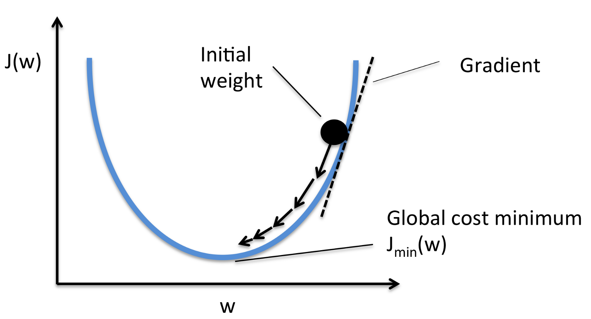
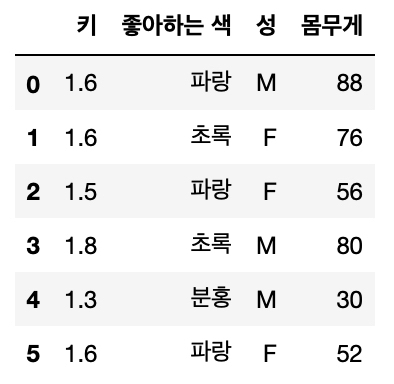
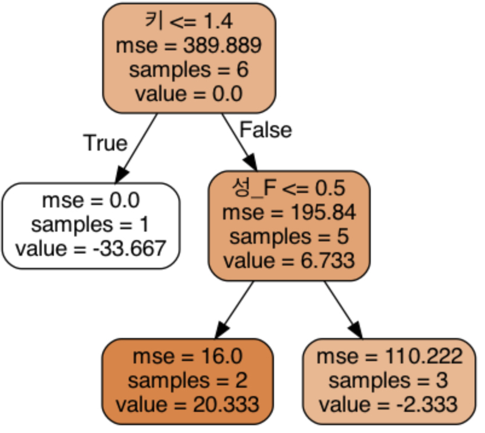
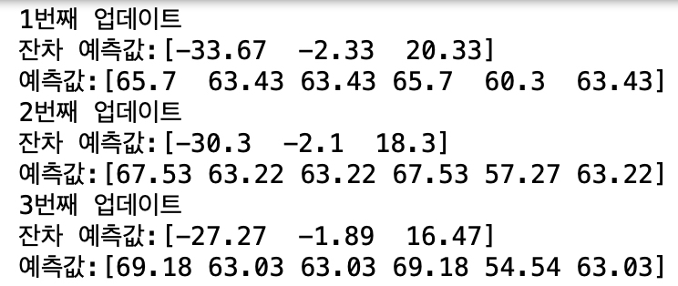
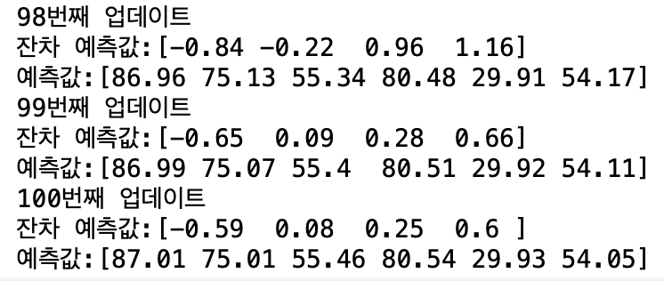

<!DOCTYPE html>
<html lang="en">
<head>
  <meta charset="UTF-8">
<meta name="viewport" content="width=device-width">
<meta name="theme-color" content="#222"><meta name="generator" content="Hexo 6.3.0">

  <link rel="apple-touch-icon" sizes="180x180" href="/images/apple-touch-icon-next.png">
  <link rel="icon" type="image/png" sizes="32x32" href="/images/favicon-32x32-next.png">
  <link rel="icon" type="image/png" sizes="16x16" href="/images/favicon-16x16-next.png">
  <link rel="mask-icon" href="/images/logo.svg" color="#222">

<link rel="stylesheet" href="/css/main.css">

<link rel="stylesheet" href="https://fonts.googleapis.com/css?family=Lato:300,300italic,400,400italic,700,700italic&display=swap&subset=latin,latin-ext">

<link rel="stylesheet" href="https://cdnjs.cloudflare.com/ajax/libs/font-awesome/6.4.0/css/all.min.css" integrity="sha256-HtsXJanqjKTc8vVQjO4YMhiqFoXkfBsjBWcX91T1jr8=" crossorigin="anonymous">
  <link rel="stylesheet" href="https://cdnjs.cloudflare.com/ajax/libs/animate.css/3.1.1/animate.min.css" integrity="sha256-PR7ttpcvz8qrF57fur/yAx1qXMFJeJFiA6pSzWi0OIE=" crossorigin="anonymous">
  <link rel="stylesheet" href="https://cdnjs.cloudflare.com/ajax/libs/fancybox/3.5.7/jquery.fancybox.min.css" integrity="sha256-Vzbj7sDDS/woiFS3uNKo8eIuni59rjyNGtXfstRzStA=" crossorigin="anonymous">
  <link rel="stylesheet" href="https://cdnjs.cloudflare.com/ajax/libs/pace/1.2.4/themes/blue/pace-theme-minimal.css">
  <script src="https://cdnjs.cloudflare.com/ajax/libs/pace/1.2.4/pace.min.js" integrity="sha256-gqd7YTjg/BtfqWSwsJOvndl0Bxc8gFImLEkXQT8+qj0=" crossorigin="anonymous"></script>

<script class="next-config" data-name="main" type="application/json">{"hostname":"assaeunji.github.io","root":"/","images":"/images","scheme":"Muse","darkmode":false,"version":"8.15.1","exturl":false,"sidebar":{"position":"right","display":"hide","padding":18,"offset":12},"copycode":{"enable":false,"style":null},"bookmark":{"enable":false,"color":"#222","save":"auto"},"mediumzoom":false,"lazyload":false,"pangu":false,"comments":{"style":"tabs","active":null,"storage":true,"lazyload":false,"nav":null},"stickytabs":false,"motion":{"enable":true,"async":false,"transition":{"menu_item":"fadeInDown","post_block":"fadeIn","post_header":"fadeInDown","post_body":"fadeInDown","coll_header":"fadeInLeft","sidebar":"fadeInUp"}},"prism":false,"i18n":{"placeholder":"Searching...","empty":"We didn't find any results for the search: ${query}","hits_time":"${hits} results found in ${time} ms","hits":"${hits} results found"}}</script><script src="/js/config.js"></script>

    <meta name="description" content="이번 포스팅은 나무 모형 시리즈의 세 번째 글입니다. 이전 글은 AdaBoost에 대한 자세한 설명과 배깅 (Bagging)과 부스팅 (Boosting)의 원리에서 확인하실 수 있습니다.">
<meta property="og:type" content="article">
<meta property="og:title" content="GBM (Gradient Boosting Machines)에 대한 자세한 설명 (1): Regression">
<meta property="og:url" content="http://assaeunji.github.io/machine-learning/2020-09-05-gbm/index.html">
<meta property="og:site_name" content="Be Geeky">
<meta property="og:description" content="이번 포스팅은 나무 모형 시리즈의 세 번째 글입니다. 이전 글은 AdaBoost에 대한 자세한 설명과 배깅 (Bagging)과 부스팅 (Boosting)의 원리에서 확인하실 수 있습니다.">
<meta property="og:locale" content="en_US">
<meta property="og:image" content="http://assaeunji.github.io/images/tree-titleimage.jpg">
<meta property="article:published_time" content="2020-09-04T15:00:00.000Z">
<meta property="article:modified_time" content="2023-05-20T03:02:07.795Z">
<meta property="article:author" content="Eunji Lee">
<meta property="article:tag" content="supervised-learning">
<meta property="article:tag" content="boosting">
<meta property="article:tag" content="tree algorithm">
<meta property="article:tag" content="gbm">
<meta property="article:tag" content="gradient-descent">
<meta property="article:tag" content="optimization">
<meta name="twitter:card" content="summary">
<meta name="twitter:image" content="http://assaeunji.github.io/images/tree-titleimage.jpg">


<link rel="canonical" href="http://assaeunji.github.io/machine-learning/2020-09-05-gbm/">


<script class="next-config" data-name="page" type="application/json">{"sidebar":"","isHome":false,"isPost":true,"lang":"en","comments":true,"permalink":"http://assaeunji.github.io/machine-learning/2020-09-05-gbm/","path":"/machine-learning/2020-09-05-gbm/","title":"GBM (Gradient Boosting Machines)에 대한 자세한 설명 (1): Regression"}</script>

<script class="next-config" data-name="calendar" type="application/json">""</script>
<title>GBM (Gradient Boosting Machines)에 대한 자세한 설명 (1): Regression | Be Geeky</title>
  


  <noscript>
    <link rel="stylesheet" href="/css/noscript.css">
  </noscript>
</head>

<body itemscope itemtype="http://schema.org/WebPage" class="use-motion">
  <div class="headband"></div>

  <main class="main">
    <div class="column">
      <header class="header" itemscope itemtype="http://schema.org/WPHeader"><div class="site-brand-container">
  <div class="site-nav-toggle">
    <div class="toggle" aria-label="Toggle navigation bar" role="button">
        <span class="toggle-line"></span>
        <span class="toggle-line"></span>
        <span class="toggle-line"></span>
    </div>
  </div>

  <div class="site-meta">

    <a href="/" class="brand" rel="start">
      <i class="logo-line"></i>
      <p class="site-title">Be Geeky</p>
      <i class="logo-line"></i>
    </a>
  </div>

  <div class="site-nav-right">
    <div class="toggle popup-trigger" aria-label="Search" role="button">
    </div>
  </div>
</div>


<nav class="site-nav">
  <ul class="main-menu menu"><li class="menu-item menu-item-home"><a href="/" rel="section"><i class="fa fa-home fa-fw"></i>Home</a></li><li class="menu-item menu-item-about"><a href="/about/" rel="section"><i class="fa fa-user fa-fw"></i>About</a></li><li class="menu-item menu-item-tags"><a href="/tags/" rel="section"><i class="fa fa-tags fa-fw"></i>Tags<span class="badge">124</span></a></li><li class="menu-item menu-item-categories"><a href="/categories/" rel="section"><i class="fa fa-th fa-fw"></i>Categories<span class="badge">15</span></a></li><li class="menu-item menu-item-archives"><a href="/archives/" rel="section"><i class="fa fa-archive fa-fw"></i>Archives<span class="badge">63</span></a></li>
  </ul>
</nav>


</header>
        
  
  <aside class="sidebar">

    <div class="sidebar-inner sidebar-nav-active sidebar-toc-active">
      <ul class="sidebar-nav">
        <li class="sidebar-nav-toc">
          Table of Contents
        </li>
        <li class="sidebar-nav-overview">
          Overview
        </li>
      </ul>

      <div class="sidebar-panel-container">
        <!--noindex-->
        <div class="post-toc-wrap sidebar-panel">
            <div class="post-toc animated"><ol class="nav"><li class="nav-item nav-level-2"><a class="nav-link" href="#introduction"><span class="nav-number">1.</span> <span class="nav-text"> Introduction</span></a></li><li class="nav-item nav-level-2"><a class="nav-link" href="#adaboost-vs-gbm"><span class="nav-number">2.</span> <span class="nav-text"> AdaBoost vs. GBM</span></a></li><li class="nav-item nav-level-2"><a class="nav-link" href="#gradient-descent%EB%9E%80"><span class="nav-number">3.</span> <span class="nav-text"> Gradient Descent란?</span></a></li><li class="nav-item nav-level-2"><a class="nav-link" href="#boosting%EA%B3%BC-gradient-descent%EC%9D%98-%EA%B4%80%EA%B3%84"><span class="nav-number">4.</span> <span class="nav-text"> Boosting과 Gradient Descent의 관계</span></a></li><li class="nav-item nav-level-2"><a class="nav-link" href="#gbm-%EC%9E%90%EC%84%B8%ED%9E%88-%EB%9C%AF%EC%96%B4%EB%B3%B4%EC%9E%90"><span class="nav-number">5.</span> <span class="nav-text"> GBM, 자세히 뜯어보자</span></a></li><li class="nav-item nav-level-2"><a class="nav-link" href="#%EC%86%90%EC%BD%94%EB%94%A9%EC%9C%BC%EB%A1%9C-%EC%95%8C%EC%95%84%EB%B3%B4%EB%8A%94-gbm"><span class="nav-number">6.</span> <span class="nav-text"> 손코딩으로 알아보는 GBM</span></a><ol class="nav-child"><li class="nav-item nav-level-3"><a class="nav-link" href="#gbm-in-python"><span class="nav-number">6.1.</span> <span class="nav-text"> GBM in Python</span></a></li></ol></li><li class="nav-item nav-level-2"><a class="nav-link" href="#references"><span class="nav-number">7.</span> <span class="nav-text"> References</span></a></li></ol></div>
        </div>
        <!--/noindex-->

        <div class="site-overview-wrap sidebar-panel">
          <div class="site-author animated" itemprop="author" itemscope itemtype="http://schema.org/Person">
  <p class="site-author-name" itemprop="name">Eunji Lee</p>
  <div class="site-description" itemprop="description">Hobby = Specialty</div>
</div>
<div class="site-state-wrap animated">
  <nav class="site-state">
      <div class="site-state-item site-state-posts">
        <a href="/archives/">
          <span class="site-state-item-count">63</span>
          <span class="site-state-item-name">posts</span>
        </a>
      </div>
      <div class="site-state-item site-state-categories">
          <a href="/categories/">
        <span class="site-state-item-count">15</span>
        <span class="site-state-item-name">categories</span></a>
      </div>
      <div class="site-state-item site-state-tags">
          <a href="/tags/">
        <span class="site-state-item-count">124</span>
        <span class="site-state-item-name">tags</span></a>
      </div>
  </nav>
</div>
  <div class="links-of-author animated">
      <span class="links-of-author-item">
        <a href="https://github.com/assaeunji" title="GitHub → https:&#x2F;&#x2F;github.com&#x2F;assaeunji" rel="noopener me" target="_blank"><i class="fab fa-github fa-fw"></i>GitHub</a>
      </span>
  </div>
  <div class="cc-license animated" itemprop="license">
    <a href="https://creativecommons.org/licenses/by-nc-sa/4.0/" class="cc-opacity" rel="noopener" target="_blank"></a>
  </div>

        </div>
      </div>
    </div>

    
  </aside>


    </div>

    <div class="main-inner post posts-expand">


  


<div class="post-block">
  
  <div class="post-gallery" itemscope itemtype="http://schema.org/ImageGallery">
    
    <div class="post-gallery-image">
      
    </div>
    </div>

  <article itemscope itemtype="http://schema.org/Article" class="post-content" lang="en">
    <link itemprop="mainEntityOfPage" href="http://assaeunji.github.io/machine-learning/2020-09-05-gbm/">

    <span hidden itemprop="author" itemscope itemtype="http://schema.org/Person">
      <meta itemprop="image" content="/images/avatar.gif">
      <meta itemprop="name" content="Eunji Lee">
    </span>

    <span hidden itemprop="publisher" itemscope itemtype="http://schema.org/Organization">
      <meta itemprop="name" content="Be Geeky">
      <meta itemprop="description" content="Hobby = Specialty">
    </span>

    <span hidden itemprop="post" itemscope itemtype="http://schema.org/CreativeWork">
      <meta itemprop="name" content="GBM (Gradient Boosting Machines)에 대한 자세한 설명 (1): Regression | Be Geeky">
      <meta itemprop="description" content="이번 포스팅은 나무 모형 시리즈의 세 번째 글입니다. 이전 글은 AdaBoost에 대한 자세한 설명과 배깅 (Bagging)과 부스팅 (Boosting)의 원리에서 확인하실 수 있습니다.">
    </span>
      <header class="post-header">
        <h1 class="post-title" itemprop="name headline">
          GBM (Gradient Boosting Machines)에 대한 자세한 설명 (1): Regression
        </h1>

        <div class="post-meta-container">
          <div class="post-meta">
    <span class="post-meta-item">
      <span class="post-meta-item-icon">
        <i class="far fa-calendar"></i>
      </span>
      <span class="post-meta-item-text">Posted on</span>

      <time title="Created: 2020-09-05 00:00:00" itemprop="dateCreated datePublished" datetime="2020-09-05T00:00:00+09:00">2020-09-05</time>
    </span>
    <span class="post-meta-item">
      <span class="post-meta-item-icon">
        <i class="far fa-calendar-check"></i>
      </span>
      <span class="post-meta-item-text">Edited on</span>
      <time title="Modified: 2023-05-20 12:02:07" itemprop="dateModified" datetime="2023-05-20T12:02:07+09:00">2023-05-20</time>
    </span>
    <span class="post-meta-item">
      <span class="post-meta-item-icon">
        <i class="far fa-folder"></i>
      </span>
      <span class="post-meta-item-text">In</span>
        <span itemprop="about" itemscope itemtype="http://schema.org/Thing">
          <a href="/categories/machine-learning/" itemprop="url" rel="index"><span itemprop="name">machine-learning</span></a>
        </span>
    </span>

  
</div>

            <div class="post-description">이번 포스팅은 나무 모형 시리즈의 세 번째 글입니다. 이전 글은 AdaBoost에 대한 자세한 설명과 배깅 (Bagging)과 부스팅 (Boosting)의 원리에서 확인하실 수 있습니다.</div>
        </div>
      </header>

    
    
    
    <div class="post-body" itemprop="articleBody">
        <ul>
<li>이번 포스팅은 나무 모형 시리즈의 세 번째 글입니다. 이전 글은 <a href="https://assaeunji.github.io/machine%20learning/2020-08-14-adaboost/">AdaBoost에 대한 자세한 설명</a>과 <a href="https://assaeunji.github.io/machine%20learning/2020-08-06-tree/">배깅 (Bagging)과 부스팅 (Boosting)의 원리</a>에서 확인하실 수 있습니다.</li>
<li>GBM은 LightGBM, CatBoost, XGBoost가 기반하고 있는 알고리즘이기 때문에 해당 원리를 아는 것이 중요합니다.</li>
<li>이 포스팅은 GBM 중 Regression에 초점을 두어 설명했습니다!</li>
</ul>
<hr />
<h2 id="introduction"><a class="markdownIt-Anchor" href="#introduction"></a> Introduction</h2>
<p>Gradient Boosting Machines (GBM)은 Boosting의 개념을 Gradient descent라는 최적화 방법으로 이해하는 방법입니다.</p>
<p>부스팅은 <a href="https://assaeunji.github.io/machine%20learning/2020-08-06-tree/">이전 포스팅</a>에서도 설명했지만 additive하고 sequential하게 여러 나무를 학습해 결과를 종합하는 방식입니다. (<s>&quot;additive하고 sequential하게&quot;라는 말이 &quot;fun하고 cool하게&quot;처럼 느껴질 수도…</s>)</p>
<p>&quot;additive하다&quot;는 말은 다음과 같이 여러 나무들의 예측결과를 학습한다는 것을 의미합니다.</p>
<p class='katex-block'><span class="katex-display"><span class="katex"><span class="katex-mathml"><math xmlns="http://www.w3.org/1998/Math/MathML" display="block"><semantics><mrow><mi>F</mi><mo stretchy="false">(</mo><msub><mi>x</mi><mi>i</mi></msub><mo stretchy="false">)</mo><mo>=</mo><munderover><mo>∑</mo><mrow><mi>t</mi><mo>=</mo><mn>1</mn></mrow><mi>T</mi></munderover><msub><mi>f</mi><mi>t</mi></msub><mo stretchy="false">(</mo><msub><mi>x</mi><mi>i</mi></msub><mo stretchy="false">)</mo></mrow><annotation encoding="application/x-tex">F(x_i) = \sum_{t=1}^T f_t(x_i)
</annotation></semantics></math></span><span class="katex-html" aria-hidden="true"><span class="base"><span class="strut" style="height:1em;vertical-align:-0.25em;"></span><span class="mord mathnormal" style="margin-right:0.13889em;">F</span><span class="mopen">(</span><span class="mord"><span class="mord mathnormal">x</span><span class="msupsub"><span class="vlist-t vlist-t2"><span class="vlist-r"><span class="vlist" style="height:0.31166399999999994em;"><span style="top:-2.5500000000000003em;margin-left:0em;margin-right:0.05em;"><span class="pstrut" style="height:2.7em;"></span><span class="sizing reset-size6 size3 mtight"><span class="mord mathnormal mtight">i</span></span></span></span><span class="vlist-s">​</span></span><span class="vlist-r"><span class="vlist" style="height:0.15em;"><span></span></span></span></span></span></span><span class="mclose">)</span><span class="mspace" style="margin-right:0.2777777777777778em;"></span><span class="mrel">=</span><span class="mspace" style="margin-right:0.2777777777777778em;"></span></span><span class="base"><span class="strut" style="height:3.0954490000000003em;vertical-align:-1.267113em;"></span><span class="mop op-limits"><span class="vlist-t vlist-t2"><span class="vlist-r"><span class="vlist" style="height:1.8283360000000002em;"><span style="top:-1.882887em;margin-left:0em;"><span class="pstrut" style="height:3.05em;"></span><span class="sizing reset-size6 size3 mtight"><span class="mord mtight"><span class="mord mathnormal mtight">t</span><span class="mrel mtight">=</span><span class="mord mtight">1</span></span></span></span><span style="top:-3.050005em;"><span class="pstrut" style="height:3.05em;"></span><span><span class="mop op-symbol large-op">∑</span></span></span><span style="top:-4.3000050000000005em;margin-left:0em;"><span class="pstrut" style="height:3.05em;"></span><span class="sizing reset-size6 size3 mtight"><span class="mord mathnormal mtight" style="margin-right:0.13889em;">T</span></span></span></span><span class="vlist-s">​</span></span><span class="vlist-r"><span class="vlist" style="height:1.267113em;"><span></span></span></span></span></span><span class="mspace" style="margin-right:0.16666666666666666em;"></span><span class="mord"><span class="mord mathnormal" style="margin-right:0.10764em;">f</span><span class="msupsub"><span class="vlist-t vlist-t2"><span class="vlist-r"><span class="vlist" style="height:0.2805559999999999em;"><span style="top:-2.5500000000000003em;margin-left:-0.10764em;margin-right:0.05em;"><span class="pstrut" style="height:2.7em;"></span><span class="sizing reset-size6 size3 mtight"><span class="mord mathnormal mtight">t</span></span></span></span><span class="vlist-s">​</span></span><span class="vlist-r"><span class="vlist" style="height:0.15em;"><span></span></span></span></span></span></span><span class="mopen">(</span><span class="mord"><span class="mord mathnormal">x</span><span class="msupsub"><span class="vlist-t vlist-t2"><span class="vlist-r"><span class="vlist" style="height:0.31166399999999994em;"><span style="top:-2.5500000000000003em;margin-left:0em;margin-right:0.05em;"><span class="pstrut" style="height:2.7em;"></span><span class="sizing reset-size6 size3 mtight"><span class="mord mathnormal mtight">i</span></span></span></span><span class="vlist-s">​</span></span><span class="vlist-r"><span class="vlist" style="height:0.15em;"><span></span></span></span></span></span></span><span class="mclose">)</span></span></span></span></span></p>
<p>여기서 <span class="katex"><span class="katex-mathml"><math xmlns="http://www.w3.org/1998/Math/MathML"><semantics><mrow><msub><mi>f</mi><mi>t</mi></msub><mo stretchy="false">(</mo><msub><mi>x</mi><mi>i</mi></msub><mo stretchy="false">)</mo></mrow><annotation encoding="application/x-tex">f_t(x_i)</annotation></semantics></math></span><span class="katex-html" aria-hidden="true"><span class="base"><span class="strut" style="height:1em;vertical-align:-0.25em;"></span><span class="mord"><span class="mord mathnormal" style="margin-right:0.10764em;">f</span><span class="msupsub"><span class="vlist-t vlist-t2"><span class="vlist-r"><span class="vlist" style="height:0.2805559999999999em;"><span style="top:-2.5500000000000003em;margin-left:-0.10764em;margin-right:0.05em;"><span class="pstrut" style="height:2.7em;"></span><span class="sizing reset-size6 size3 mtight"><span class="mord mathnormal mtight">t</span></span></span></span><span class="vlist-s">​</span></span><span class="vlist-r"><span class="vlist" style="height:0.15em;"><span></span></span></span></span></span></span><span class="mopen">(</span><span class="mord"><span class="mord mathnormal">x</span><span class="msupsub"><span class="vlist-t vlist-t2"><span class="vlist-r"><span class="vlist" style="height:0.31166399999999994em;"><span style="top:-2.5500000000000003em;margin-left:0em;margin-right:0.05em;"><span class="pstrut" style="height:2.7em;"></span><span class="sizing reset-size6 size3 mtight"><span class="mord mathnormal mtight">i</span></span></span></span><span class="vlist-s">​</span></span><span class="vlist-r"><span class="vlist" style="height:0.15em;"><span></span></span></span></span></span></span><span class="mclose">)</span></span></span></span>는 <span class="katex"><span class="katex-mathml"><math xmlns="http://www.w3.org/1998/Math/MathML"><semantics><mrow><msub><mi>x</mi><mi>i</mi></msub></mrow><annotation encoding="application/x-tex">x_i</annotation></semantics></math></span><span class="katex-html" aria-hidden="true"><span class="base"><span class="strut" style="height:0.58056em;vertical-align:-0.15em;"></span><span class="mord"><span class="mord mathnormal">x</span><span class="msupsub"><span class="vlist-t vlist-t2"><span class="vlist-r"><span class="vlist" style="height:0.31166399999999994em;"><span style="top:-2.5500000000000003em;margin-left:0em;margin-right:0.05em;"><span class="pstrut" style="height:2.7em;"></span><span class="sizing reset-size6 size3 mtight"><span class="mord mathnormal mtight">i</span></span></span></span><span class="vlist-s">​</span></span><span class="vlist-r"><span class="vlist" style="height:0.15em;"><span></span></span></span></span></span></span></span></span></span>를 입력값으로 넣었을 때 <span class="katex"><span class="katex-mathml"><math xmlns="http://www.w3.org/1998/Math/MathML"><semantics><mrow><mi>t</mi></mrow><annotation encoding="application/x-tex">t</annotation></semantics></math></span><span class="katex-html" aria-hidden="true"><span class="base"><span class="strut" style="height:0.61508em;vertical-align:0em;"></span><span class="mord mathnormal">t</span></span></span></span>번째 약한 학습기가 예측한 결과를 의미하고, 결국 <span class="katex"><span class="katex-mathml"><math xmlns="http://www.w3.org/1998/Math/MathML"><semantics><mrow><mi>F</mi><mo stretchy="false">(</mo><msub><mi>x</mi><mi>i</mi></msub><mo stretchy="false">)</mo></mrow><annotation encoding="application/x-tex">F(x_i)</annotation></semantics></math></span><span class="katex-html" aria-hidden="true"><span class="base"><span class="strut" style="height:1em;vertical-align:-0.25em;"></span><span class="mord mathnormal" style="margin-right:0.13889em;">F</span><span class="mopen">(</span><span class="mord"><span class="mord mathnormal">x</span><span class="msupsub"><span class="vlist-t vlist-t2"><span class="vlist-r"><span class="vlist" style="height:0.31166399999999994em;"><span style="top:-2.5500000000000003em;margin-left:0em;margin-right:0.05em;"><span class="pstrut" style="height:2.7em;"></span><span class="sizing reset-size6 size3 mtight"><span class="mord mathnormal mtight">i</span></span></span></span><span class="vlist-s">​</span></span><span class="vlist-r"><span class="vlist" style="height:0.15em;"><span></span></span></span></span></span></span><span class="mclose">)</span></span></span></span>는 <span class="katex"><span class="katex-mathml"><math xmlns="http://www.w3.org/1998/Math/MathML"><semantics><mrow><mi>T</mi></mrow><annotation encoding="application/x-tex">T</annotation></semantics></math></span><span class="katex-html" aria-hidden="true"><span class="base"><span class="strut" style="height:0.68333em;vertical-align:0em;"></span><span class="mord mathnormal" style="margin-right:0.13889em;">T</span></span></span></span>개의 <span class="katex"><span class="katex-mathml"><math xmlns="http://www.w3.org/1998/Math/MathML"><semantics><mrow><msub><mi>f</mi><mi>t</mi></msub><mo stretchy="false">(</mo><msub><mi>x</mi><mi>i</mi></msub><mo stretchy="false">)</mo></mrow><annotation encoding="application/x-tex">f_t(x_i)</annotation></semantics></math></span><span class="katex-html" aria-hidden="true"><span class="base"><span class="strut" style="height:1em;vertical-align:-0.25em;"></span><span class="mord"><span class="mord mathnormal" style="margin-right:0.10764em;">f</span><span class="msupsub"><span class="vlist-t vlist-t2"><span class="vlist-r"><span class="vlist" style="height:0.2805559999999999em;"><span style="top:-2.5500000000000003em;margin-left:-0.10764em;margin-right:0.05em;"><span class="pstrut" style="height:2.7em;"></span><span class="sizing reset-size6 size3 mtight"><span class="mord mathnormal mtight">t</span></span></span></span><span class="vlist-s">​</span></span><span class="vlist-r"><span class="vlist" style="height:0.15em;"><span></span></span></span></span></span></span><span class="mopen">(</span><span class="mord"><span class="mord mathnormal">x</span><span class="msupsub"><span class="vlist-t vlist-t2"><span class="vlist-r"><span class="vlist" style="height:0.31166399999999994em;"><span style="top:-2.5500000000000003em;margin-left:0em;margin-right:0.05em;"><span class="pstrut" style="height:2.7em;"></span><span class="sizing reset-size6 size3 mtight"><span class="mord mathnormal mtight">i</span></span></span></span><span class="vlist-s">​</span></span><span class="vlist-r"><span class="vlist" style="height:0.15em;"><span></span></span></span></span></span></span><span class="mclose">)</span></span></span></span>를 합친 <span class="katex"><span class="katex-mathml"><math xmlns="http://www.w3.org/1998/Math/MathML"><semantics><mrow><msub><mi>y</mi><mi>i</mi></msub></mrow><annotation encoding="application/x-tex">y_i</annotation></semantics></math></span><span class="katex-html" aria-hidden="true"><span class="base"><span class="strut" style="height:0.625em;vertical-align:-0.19444em;"></span><span class="mord"><span class="mord mathnormal" style="margin-right:0.03588em;">y</span><span class="msupsub"><span class="vlist-t vlist-t2"><span class="vlist-r"><span class="vlist" style="height:0.31166399999999994em;"><span style="top:-2.5500000000000003em;margin-left:-0.03588em;margin-right:0.05em;"><span class="pstrut" style="height:2.7em;"></span><span class="sizing reset-size6 size3 mtight"><span class="mord mathnormal mtight">i</span></span></span></span><span class="vlist-s">​</span></span><span class="vlist-r"><span class="vlist" style="height:0.15em;"><span></span></span></span></span></span></span></span></span></span>의 예측값을 의미합니다.</p>
<p>그리고 &quot;sequential하다&quot;는 말은 이 <span class="katex"><span class="katex-mathml"><math xmlns="http://www.w3.org/1998/Math/MathML"><semantics><mrow><mi>T</mi></mrow><annotation encoding="application/x-tex">T</annotation></semantics></math></span><span class="katex-html" aria-hidden="true"><span class="base"><span class="strut" style="height:0.68333em;vertical-align:0em;"></span><span class="mord mathnormal" style="margin-right:0.13889em;">T</span></span></span></span>개의 나무를 동시에 학습하는 것이 아니라 한 나무가 학습된 결과를 바탕으로 더 나은 결과를 위해 다시 두 번째 나무를 학습하고, 이 두 나무들보다 나은 결과를 위해 세 번째 나무를 학습하는 등 순서대로 학습한다는 의미를 내포합니다.</p>
<hr />
<h2 id="adaboost-vs-gbm"><a class="markdownIt-Anchor" href="#adaboost-vs-gbm"></a> AdaBoost vs. GBM</h2>
<p><strong>그럼, GBM은 어떻게 약한 학습기로 &quot;더 나은 결과&quot;를 만들까요?</strong></p>
<p>이를 쉽게 이해하기 위해서 AdaBoost와 비교하겠습니다.</p>
<p>GBM은 AdaBoost와 마찬가지로 Boosting 계열의 알고리즘이기 때문에 순차적으로 약한 학습기 (weak learner)를 만들어 가며 이전 학습기의 잔차 (resuidual)를 보완하는 방식입니다.</p>
<p>그러나, 이 둘은 잔차를 보완하는 방법이 다릅니다.</p>
<p>AdaBoost는 이전에 잘못 분류한 데이터에 <strong>가중치</strong>를 더 많이 주고, 잘 분류한 학습기에 더 많은 가중치를 주어 해결합니다. AdaBoost의 최종 모형인</p>
<p class='katex-block'><span class="katex-display"><span class="katex"><span class="katex-mathml"><math xmlns="http://www.w3.org/1998/Math/MathML" display="block"><semantics><mrow><mi>F</mi><mo stretchy="false">(</mo><mi>x</mi><mo stretchy="false">)</mo><mo>=</mo><mtext>sign</mtext><mo stretchy="false">(</mo><munderover><mo>∑</mo><mrow><mi>t</mi><mo>=</mo><mn>1</mn></mrow><mi>T</mi></munderover><msub><mi>α</mi><mi>t</mi></msub><msub><mi>f</mi><mi>t</mi></msub><mo stretchy="false">(</mo><mi>x</mi><mo stretchy="false">)</mo><mo stretchy="false">)</mo></mrow><annotation encoding="application/x-tex">F(x) = \text{sign} (\sum_{t=1}^{T} \alpha_t f_t(x))
</annotation></semantics></math></span><span class="katex-html" aria-hidden="true"><span class="base"><span class="strut" style="height:1em;vertical-align:-0.25em;"></span><span class="mord mathnormal" style="margin-right:0.13889em;">F</span><span class="mopen">(</span><span class="mord mathnormal">x</span><span class="mclose">)</span><span class="mspace" style="margin-right:0.2777777777777778em;"></span><span class="mrel">=</span><span class="mspace" style="margin-right:0.2777777777777778em;"></span></span><span class="base"><span class="strut" style="height:3.0954490000000003em;vertical-align:-1.267113em;"></span><span class="mord text"><span class="mord">sign</span></span><span class="mopen">(</span><span class="mop op-limits"><span class="vlist-t vlist-t2"><span class="vlist-r"><span class="vlist" style="height:1.8283360000000002em;"><span style="top:-1.882887em;margin-left:0em;"><span class="pstrut" style="height:3.05em;"></span><span class="sizing reset-size6 size3 mtight"><span class="mord mtight"><span class="mord mathnormal mtight">t</span><span class="mrel mtight">=</span><span class="mord mtight">1</span></span></span></span><span style="top:-3.050005em;"><span class="pstrut" style="height:3.05em;"></span><span><span class="mop op-symbol large-op">∑</span></span></span><span style="top:-4.3000050000000005em;margin-left:0em;"><span class="pstrut" style="height:3.05em;"></span><span class="sizing reset-size6 size3 mtight"><span class="mord mtight"><span class="mord mathnormal mtight" style="margin-right:0.13889em;">T</span></span></span></span></span><span class="vlist-s">​</span></span><span class="vlist-r"><span class="vlist" style="height:1.267113em;"><span></span></span></span></span></span><span class="mspace" style="margin-right:0.16666666666666666em;"></span><span class="mord"><span class="mord mathnormal" style="margin-right:0.0037em;">α</span><span class="msupsub"><span class="vlist-t vlist-t2"><span class="vlist-r"><span class="vlist" style="height:0.2805559999999999em;"><span style="top:-2.5500000000000003em;margin-left:-0.0037em;margin-right:0.05em;"><span class="pstrut" style="height:2.7em;"></span><span class="sizing reset-size6 size3 mtight"><span class="mord mathnormal mtight">t</span></span></span></span><span class="vlist-s">​</span></span><span class="vlist-r"><span class="vlist" style="height:0.15em;"><span></span></span></span></span></span></span><span class="mord"><span class="mord mathnormal" style="margin-right:0.10764em;">f</span><span class="msupsub"><span class="vlist-t vlist-t2"><span class="vlist-r"><span class="vlist" style="height:0.2805559999999999em;"><span style="top:-2.5500000000000003em;margin-left:-0.10764em;margin-right:0.05em;"><span class="pstrut" style="height:2.7em;"></span><span class="sizing reset-size6 size3 mtight"><span class="mord mathnormal mtight">t</span></span></span></span><span class="vlist-s">​</span></span><span class="vlist-r"><span class="vlist" style="height:0.15em;"><span></span></span></span></span></span></span><span class="mopen">(</span><span class="mord mathnormal">x</span><span class="mclose">)</span><span class="mclose">)</span></span></span></span></span></p>
<p>에서 알 수 있듯이 <span class="katex"><span class="katex-mathml"><math xmlns="http://www.w3.org/1998/Math/MathML"><semantics><mrow><msub><mi>α</mi><mi>t</mi></msub></mrow><annotation encoding="application/x-tex">\alpha_t</annotation></semantics></math></span><span class="katex-html" aria-hidden="true"><span class="base"><span class="strut" style="height:0.58056em;vertical-align:-0.15em;"></span><span class="mord"><span class="mord mathnormal" style="margin-right:0.0037em;">α</span><span class="msupsub"><span class="vlist-t vlist-t2"><span class="vlist-r"><span class="vlist" style="height:0.2805559999999999em;"><span style="top:-2.5500000000000003em;margin-left:-0.0037em;margin-right:0.05em;"><span class="pstrut" style="height:2.7em;"></span><span class="sizing reset-size6 size3 mtight"><span class="mord mathnormal mtight">t</span></span></span></span><span class="vlist-s">​</span></span><span class="vlist-r"><span class="vlist" style="height:0.15em;"><span></span></span></span></span></span></span></span></span></span>로 학습기마다 가중치를 다르게 주고, 각 데이터에도 잘못 분류되면 가중치가 커지도록 adaptive하게 잔차를 보완합니다.</p>
<p>이에 비해 GBM은 약한 학습기를 <strong>잔차 자체에 적합</strong>하고, 이전의 예측값에 예측한 잔차를 더해 주어 예측값을 새로이 업데이트하는 방식입니다.</p>
<p>GBM을 간략하게 설명하면 다음과 같습니다.</p>
<ol>
<li><span class="katex"><span class="katex-mathml"><math xmlns="http://www.w3.org/1998/Math/MathML"><semantics><mrow><msub><mi>y</mi><mi>i</mi></msub><mo separator="true">,</mo><mtext> </mtext><mi>i</mi><mo>=</mo><mn>1</mn><mo separator="true">,</mo><mo>…</mo><mo separator="true">,</mo><mi>n</mi></mrow><annotation encoding="application/x-tex">y_i, \ i=1,\ldots,n</annotation></semantics></math></span><span class="katex-html" aria-hidden="true"><span class="base"><span class="strut" style="height:0.85396em;vertical-align:-0.19444em;"></span><span class="mord"><span class="mord mathnormal" style="margin-right:0.03588em;">y</span><span class="msupsub"><span class="vlist-t vlist-t2"><span class="vlist-r"><span class="vlist" style="height:0.31166399999999994em;"><span style="top:-2.5500000000000003em;margin-left:-0.03588em;margin-right:0.05em;"><span class="pstrut" style="height:2.7em;"></span><span class="sizing reset-size6 size3 mtight"><span class="mord mathnormal mtight">i</span></span></span></span><span class="vlist-s">​</span></span><span class="vlist-r"><span class="vlist" style="height:0.15em;"><span></span></span></span></span></span></span><span class="mpunct">,</span><span class="mspace"> </span><span class="mspace" style="margin-right:0.16666666666666666em;"></span><span class="mord mathnormal">i</span><span class="mspace" style="margin-right:0.2777777777777778em;"></span><span class="mrel">=</span><span class="mspace" style="margin-right:0.2777777777777778em;"></span></span><span class="base"><span class="strut" style="height:0.8388800000000001em;vertical-align:-0.19444em;"></span><span class="mord">1</span><span class="mpunct">,</span><span class="mspace" style="margin-right:0.16666666666666666em;"></span><span class="minner">…</span><span class="mspace" style="margin-right:0.16666666666666666em;"></span><span class="mpunct">,</span><span class="mspace" style="margin-right:0.16666666666666666em;"></span><span class="mord mathnormal">n</span></span></span></span>에 대한 초기 예측값으로 <span class="katex"><span class="katex-mathml"><math xmlns="http://www.w3.org/1998/Math/MathML"><semantics><mrow><msub><mi>y</mi><mi>i</mi></msub></mrow><annotation encoding="application/x-tex">y_i</annotation></semantics></math></span><span class="katex-html" aria-hidden="true"><span class="base"><span class="strut" style="height:0.625em;vertical-align:-0.19444em;"></span><span class="mord"><span class="mord mathnormal" style="margin-right:0.03588em;">y</span><span class="msupsub"><span class="vlist-t vlist-t2"><span class="vlist-r"><span class="vlist" style="height:0.31166399999999994em;"><span style="top:-2.5500000000000003em;margin-left:-0.03588em;margin-right:0.05em;"><span class="pstrut" style="height:2.7em;"></span><span class="sizing reset-size6 size3 mtight"><span class="mord mathnormal mtight">i</span></span></span></span><span class="vlist-s">​</span></span><span class="vlist-r"><span class="vlist" style="height:0.15em;"><span></span></span></span></span></span></span></span></span></span>값들의 평균인 <span class="katex"><span class="katex-mathml"><math xmlns="http://www.w3.org/1998/Math/MathML"><semantics><mrow><mover accent="true"><mi>y</mi><mo stretchy="true">‾</mo></mover></mrow><annotation encoding="application/x-tex">\overline{y}</annotation></semantics></math></span><span class="katex-html" aria-hidden="true"><span class="base"><span class="strut" style="height:0.825em;vertical-align:-0.19444em;"></span><span class="mord overline"><span class="vlist-t vlist-t2"><span class="vlist-r"><span class="vlist" style="height:0.63056em;"><span style="top:-3em;"><span class="pstrut" style="height:3em;"></span><span class="mord"><span class="mord mathnormal" style="margin-right:0.03588em;">y</span></span></span><span style="top:-3.55056em;"><span class="pstrut" style="height:3em;"></span><span class="overline-line" style="border-bottom-width:0.04em;"></span></span></span><span class="vlist-s">​</span></span><span class="vlist-r"><span class="vlist" style="height:0.19444em;"><span></span></span></span></span></span></span></span></span>를 택합니다.</li>
<li><span class="katex"><span class="katex-mathml"><math xmlns="http://www.w3.org/1998/Math/MathML"><semantics><mrow><mi>t</mi><mo>=</mo><mn>1</mn><mo separator="true">,</mo><mo>…</mo><mo separator="true">,</mo><mi>T</mi></mrow><annotation encoding="application/x-tex">t=1,\ldots, T</annotation></semantics></math></span><span class="katex-html" aria-hidden="true"><span class="base"><span class="strut" style="height:0.61508em;vertical-align:0em;"></span><span class="mord mathnormal">t</span><span class="mspace" style="margin-right:0.2777777777777778em;"></span><span class="mrel">=</span><span class="mspace" style="margin-right:0.2777777777777778em;"></span></span><span class="base"><span class="strut" style="height:0.8777699999999999em;vertical-align:-0.19444em;"></span><span class="mord">1</span><span class="mpunct">,</span><span class="mspace" style="margin-right:0.16666666666666666em;"></span><span class="minner">…</span><span class="mspace" style="margin-right:0.16666666666666666em;"></span><span class="mpunct">,</span><span class="mspace" style="margin-right:0.16666666666666666em;"></span><span class="mord mathnormal" style="margin-right:0.13889em;">T</span></span></span></span>만큼 반복
<ol>
<li>각 관측치마다 잔차 <span class="katex"><span class="katex-mathml"><math xmlns="http://www.w3.org/1998/Math/MathML"><semantics><mrow><msub><mi>y</mi><mi>i</mi></msub><mo>−</mo><msub><mi>F</mi><mi>t</mi></msub><mo stretchy="false">(</mo><mi>x</mi><mo stretchy="false">)</mo></mrow><annotation encoding="application/x-tex">y_i - F_t(x)</annotation></semantics></math></span><span class="katex-html" aria-hidden="true"><span class="base"><span class="strut" style="height:0.7777700000000001em;vertical-align:-0.19444em;"></span><span class="mord"><span class="mord mathnormal" style="margin-right:0.03588em;">y</span><span class="msupsub"><span class="vlist-t vlist-t2"><span class="vlist-r"><span class="vlist" style="height:0.31166399999999994em;"><span style="top:-2.5500000000000003em;margin-left:-0.03588em;margin-right:0.05em;"><span class="pstrut" style="height:2.7em;"></span><span class="sizing reset-size6 size3 mtight"><span class="mord mathnormal mtight">i</span></span></span></span><span class="vlist-s">​</span></span><span class="vlist-r"><span class="vlist" style="height:0.15em;"><span></span></span></span></span></span></span><span class="mspace" style="margin-right:0.2222222222222222em;"></span><span class="mbin">−</span><span class="mspace" style="margin-right:0.2222222222222222em;"></span></span><span class="base"><span class="strut" style="height:1em;vertical-align:-0.25em;"></span><span class="mord"><span class="mord mathnormal" style="margin-right:0.13889em;">F</span><span class="msupsub"><span class="vlist-t vlist-t2"><span class="vlist-r"><span class="vlist" style="height:0.2805559999999999em;"><span style="top:-2.5500000000000003em;margin-left:-0.13889em;margin-right:0.05em;"><span class="pstrut" style="height:2.7em;"></span><span class="sizing reset-size6 size3 mtight"><span class="mord mathnormal mtight">t</span></span></span></span><span class="vlist-s">​</span></span><span class="vlist-r"><span class="vlist" style="height:0.15em;"><span></span></span></span></span></span></span><span class="mopen">(</span><span class="mord mathnormal">x</span><span class="mclose">)</span></span></span></span>를 구하고, 이 잔차에 첫 번째 약한 학습기를 적합시킵니다.</li>
<li>적합된 결과에 따라 잔차의 예측값 (= 마지막 노드 (leaf)에 속한 잔차들의 평균)을 구하고</li>
<li>잔차 예측값 * 학습률을 이전 예측값과 더해 새롭게 예측값을 업데이트합니다.</li>
</ol>
</li>
</ol>
<p>이 설명만 보면 gradient descent가 “왜 혹은 어떻게” 모델명에 붙었는지 알 수가 없습니다. 따라서, gradient descent에 대해 먼저 알아보고, 왜 이게 GBM과 관련이 있는지 설명하고자 합니다.</p>
<hr />
<h2 id="gradient-descent란"><a class="markdownIt-Anchor" href="#gradient-descent란"></a> Gradient Descent란?</h2>
<p><strong>그럼 gradient descent가 무엇인지 알아봅시다.</strong></p>
<p></p>
<p>Gradient descent를 한국말로 풀면 <strong>경사 하강법</strong>입니다.</p>
<p>경사하강법은 <strong>미분 가능한 convex한 함수</strong>, 즉 <span class="katex"><span class="katex-mathml"><math xmlns="http://www.w3.org/1998/Math/MathML"><semantics><mrow><mi>y</mi><mo>=</mo><msup><mi>x</mi><mn>2</mn></msup></mrow><annotation encoding="application/x-tex">y=x^2</annotation></semantics></math></span><span class="katex-html" aria-hidden="true"><span class="base"><span class="strut" style="height:0.625em;vertical-align:-0.19444em;"></span><span class="mord mathnormal" style="margin-right:0.03588em;">y</span><span class="mspace" style="margin-right:0.2777777777777778em;"></span><span class="mrel">=</span><span class="mspace" style="margin-right:0.2777777777777778em;"></span></span><span class="base"><span class="strut" style="height:0.8141079999999999em;vertical-align:0em;"></span><span class="mord"><span class="mord mathnormal">x</span><span class="msupsub"><span class="vlist-t"><span class="vlist-r"><span class="vlist" style="height:0.8141079999999999em;"><span style="top:-3.063em;margin-right:0.05em;"><span class="pstrut" style="height:2.7em;"></span><span class="sizing reset-size6 size3 mtight"><span class="mord mtight">2</span></span></span></span></span></span></span></span></span></span></span>과 같은 오목 함수에서 <span class="katex"><span class="katex-mathml"><math xmlns="http://www.w3.org/1998/Math/MathML"><semantics><mrow><mi>y</mi></mrow><annotation encoding="application/x-tex">y</annotation></semantics></math></span><span class="katex-html" aria-hidden="true"><span class="base"><span class="strut" style="height:0.625em;vertical-align:-0.19444em;"></span><span class="mord mathnormal" style="margin-right:0.03588em;">y</span></span></span></span>가 최소값 갖게 하는 <span class="katex"><span class="katex-mathml"><math xmlns="http://www.w3.org/1998/Math/MathML"><semantics><mrow><mi>x</mi></mrow><annotation encoding="application/x-tex">x</annotation></semantics></math></span><span class="katex-html" aria-hidden="true"><span class="base"><span class="strut" style="height:0.43056em;vertical-align:0em;"></span><span class="mord mathnormal">x</span></span></span></span>를 찾기 위한 알고리즘입니다. (위의 그림에서는 <span class="katex"><span class="katex-mathml"><math xmlns="http://www.w3.org/1998/Math/MathML"><semantics><mrow><mi>x</mi></mrow><annotation encoding="application/x-tex">x</annotation></semantics></math></span><span class="katex-html" aria-hidden="true"><span class="base"><span class="strut" style="height:0.43056em;vertical-align:0em;"></span><span class="mord mathnormal">x</span></span></span></span>가 <span class="katex"><span class="katex-mathml"><math xmlns="http://www.w3.org/1998/Math/MathML"><semantics><mrow><mi>w</mi></mrow><annotation encoding="application/x-tex">w</annotation></semantics></math></span><span class="katex-html" aria-hidden="true"><span class="base"><span class="strut" style="height:0.43056em;vertical-align:0em;"></span><span class="mord mathnormal" style="margin-right:0.02691em;">w</span></span></span></span>로 표시돼 있네요!)<br />
이를 위해 Gradient Descent는 함수의 기울기 혹은 경사 (gradient)를 구하여 기울기가 낮은 쪽으로 <span class="katex"><span class="katex-mathml"><math xmlns="http://www.w3.org/1998/Math/MathML"><semantics><mrow><mi>x</mi></mrow><annotation encoding="application/x-tex">x</annotation></semantics></math></span><span class="katex-html" aria-hidden="true"><span class="base"><span class="strut" style="height:0.43056em;vertical-align:0em;"></span><span class="mord mathnormal">x</span></span></span></span>값을 계속 이동시켜서 <span class="katex"><span class="katex-mathml"><math xmlns="http://www.w3.org/1998/Math/MathML"><semantics><mrow><mi>y</mi></mrow><annotation encoding="application/x-tex">y</annotation></semantics></math></span><span class="katex-html" aria-hidden="true"><span class="base"><span class="strut" style="height:0.625em;vertical-align:-0.19444em;"></span><span class="mord mathnormal" style="margin-right:0.03588em;">y</span></span></span></span>가 <strong>극소값</strong>을 갖도록 반복합니다.</p>
<p>참고로</p>
<ul>
<li>극소값은 local minimum으로 가장 작은 함수값이라 말할 순 없지만 주변에 비해 작은 값</li>
<li>최소값은 global minimum으로 전체 범위에서 가장 작은 함수값</li>
</ul>
<p>라는 점에서 차이를 보입니다.</p>
<p>구체적인 Gradient Descent 알고리즘은 다음과 같습니다.</p>
<p>초기값 <span class="katex"><span class="katex-mathml"><math xmlns="http://www.w3.org/1998/Math/MathML"><semantics><mrow><msub><mi>x</mi><mn>0</mn></msub></mrow><annotation encoding="application/x-tex">x_0</annotation></semantics></math></span><span class="katex-html" aria-hidden="true"><span class="base"><span class="strut" style="height:0.58056em;vertical-align:-0.15em;"></span><span class="mord"><span class="mord mathnormal">x</span><span class="msupsub"><span class="vlist-t vlist-t2"><span class="vlist-r"><span class="vlist" style="height:0.30110799999999993em;"><span style="top:-2.5500000000000003em;margin-left:0em;margin-right:0.05em;"><span class="pstrut" style="height:2.7em;"></span><span class="sizing reset-size6 size3 mtight"><span class="mord mtight">0</span></span></span></span><span class="vlist-s">​</span></span><span class="vlist-r"><span class="vlist" style="height:0.15em;"><span></span></span></span></span></span></span></span></span></span>을 선택하고, 다음의 식을 반복적으로 실행해서 임의의 조건을 만족하면 종료하게 됩니다.</p>
<p class='katex-block'><span class="katex-display"><span class="katex"><span class="katex-mathml"><math xmlns="http://www.w3.org/1998/Math/MathML" display="block"><semantics><mrow><msub><mi>x</mi><mi>t</mi></msub><mo>=</mo><msub><mi>x</mi><mrow><mi>t</mi><mo>−</mo><mn>1</mn></mrow></msub><mo>−</mo><mi>η</mi><mi mathvariant="normal">Δ</mi><mi>f</mi><mo stretchy="false">(</mo><msub><mi>x</mi><mrow><mi>t</mi><mo>−</mo><mn>1</mn></mrow></msub><mo stretchy="false">)</mo><mo separator="true">,</mo><mtext> </mtext><mi>t</mi><mo>=</mo><mn>1</mn><mo separator="true">,</mo><mn>2</mn><mo separator="true">,</mo><mi mathvariant="normal">.</mi><mi mathvariant="normal">.</mi><mi mathvariant="normal">.</mi></mrow><annotation encoding="application/x-tex">x_t = x_{t-1} -\eta \Delta f(x_{t-1}),\ t=1,2,...
</annotation></semantics></math></span><span class="katex-html" aria-hidden="true"><span class="base"><span class="strut" style="height:0.58056em;vertical-align:-0.15em;"></span><span class="mord"><span class="mord mathnormal">x</span><span class="msupsub"><span class="vlist-t vlist-t2"><span class="vlist-r"><span class="vlist" style="height:0.2805559999999999em;"><span style="top:-2.5500000000000003em;margin-left:0em;margin-right:0.05em;"><span class="pstrut" style="height:2.7em;"></span><span class="sizing reset-size6 size3 mtight"><span class="mord mathnormal mtight">t</span></span></span></span><span class="vlist-s">​</span></span><span class="vlist-r"><span class="vlist" style="height:0.15em;"><span></span></span></span></span></span></span><span class="mspace" style="margin-right:0.2777777777777778em;"></span><span class="mrel">=</span><span class="mspace" style="margin-right:0.2777777777777778em;"></span></span><span class="base"><span class="strut" style="height:0.791661em;vertical-align:-0.208331em;"></span><span class="mord"><span class="mord mathnormal">x</span><span class="msupsub"><span class="vlist-t vlist-t2"><span class="vlist-r"><span class="vlist" style="height:0.301108em;"><span style="top:-2.5500000000000003em;margin-left:0em;margin-right:0.05em;"><span class="pstrut" style="height:2.7em;"></span><span class="sizing reset-size6 size3 mtight"><span class="mord mtight"><span class="mord mathnormal mtight">t</span><span class="mbin mtight">−</span><span class="mord mtight">1</span></span></span></span></span><span class="vlist-s">​</span></span><span class="vlist-r"><span class="vlist" style="height:0.208331em;"><span></span></span></span></span></span></span><span class="mspace" style="margin-right:0.2222222222222222em;"></span><span class="mbin">−</span><span class="mspace" style="margin-right:0.2222222222222222em;"></span></span><span class="base"><span class="strut" style="height:1em;vertical-align:-0.25em;"></span><span class="mord mathnormal" style="margin-right:0.03588em;">η</span><span class="mord">Δ</span><span class="mord mathnormal" style="margin-right:0.10764em;">f</span><span class="mopen">(</span><span class="mord"><span class="mord mathnormal">x</span><span class="msupsub"><span class="vlist-t vlist-t2"><span class="vlist-r"><span class="vlist" style="height:0.301108em;"><span style="top:-2.5500000000000003em;margin-left:0em;margin-right:0.05em;"><span class="pstrut" style="height:2.7em;"></span><span class="sizing reset-size6 size3 mtight"><span class="mord mtight"><span class="mord mathnormal mtight">t</span><span class="mbin mtight">−</span><span class="mord mtight">1</span></span></span></span></span><span class="vlist-s">​</span></span><span class="vlist-r"><span class="vlist" style="height:0.208331em;"><span></span></span></span></span></span></span><span class="mclose">)</span><span class="mpunct">,</span><span class="mspace"> </span><span class="mspace" style="margin-right:0.16666666666666666em;"></span><span class="mord mathnormal">t</span><span class="mspace" style="margin-right:0.2777777777777778em;"></span><span class="mrel">=</span><span class="mspace" style="margin-right:0.2777777777777778em;"></span></span><span class="base"><span class="strut" style="height:0.8388800000000001em;vertical-align:-0.19444em;"></span><span class="mord">1</span><span class="mpunct">,</span><span class="mspace" style="margin-right:0.16666666666666666em;"></span><span class="mord">2</span><span class="mpunct">,</span><span class="mspace" style="margin-right:0.16666666666666666em;"></span><span class="mord">.</span><span class="mord">.</span><span class="mord">.</span></span></span></span></span></p>
<p>이처럼 <span class="katex"><span class="katex-mathml"><math xmlns="http://www.w3.org/1998/Math/MathML"><semantics><mrow><mi>t</mi></mrow><annotation encoding="application/x-tex">t</annotation></semantics></math></span><span class="katex-html" aria-hidden="true"><span class="base"><span class="strut" style="height:0.61508em;vertical-align:0em;"></span><span class="mord mathnormal">t</span></span></span></span>번째 단계의 <span class="katex"><span class="katex-mathml"><math xmlns="http://www.w3.org/1998/Math/MathML"><semantics><mrow><msub><mi>x</mi><mi>t</mi></msub></mrow><annotation encoding="application/x-tex">x_{t}</annotation></semantics></math></span><span class="katex-html" aria-hidden="true"><span class="base"><span class="strut" style="height:0.58056em;vertical-align:-0.15em;"></span><span class="mord"><span class="mord mathnormal">x</span><span class="msupsub"><span class="vlist-t vlist-t2"><span class="vlist-r"><span class="vlist" style="height:0.2805559999999999em;"><span style="top:-2.5500000000000003em;margin-left:0em;margin-right:0.05em;"><span class="pstrut" style="height:2.7em;"></span><span class="sizing reset-size6 size3 mtight"><span class="mord mtight"><span class="mord mathnormal mtight">t</span></span></span></span></span><span class="vlist-s">​</span></span><span class="vlist-r"><span class="vlist" style="height:0.15em;"><span></span></span></span></span></span></span></span></span></span>는 이전 단계의 값 <span class="katex"><span class="katex-mathml"><math xmlns="http://www.w3.org/1998/Math/MathML"><semantics><mrow><msub><mi>x</mi><mrow><mi>t</mi><mo>−</mo><mn>1</mn></mrow></msub></mrow><annotation encoding="application/x-tex">x_{t-1}</annotation></semantics></math></span><span class="katex-html" aria-hidden="true"><span class="base"><span class="strut" style="height:0.638891em;vertical-align:-0.208331em;"></span><span class="mord"><span class="mord mathnormal">x</span><span class="msupsub"><span class="vlist-t vlist-t2"><span class="vlist-r"><span class="vlist" style="height:0.301108em;"><span style="top:-2.5500000000000003em;margin-left:0em;margin-right:0.05em;"><span class="pstrut" style="height:2.7em;"></span><span class="sizing reset-size6 size3 mtight"><span class="mord mtight"><span class="mord mathnormal mtight">t</span><span class="mbin mtight">−</span><span class="mord mtight">1</span></span></span></span></span><span class="vlist-s">​</span></span><span class="vlist-r"><span class="vlist" style="height:0.208331em;"><span></span></span></span></span></span></span></span></span></span>에서 <span class="katex"><span class="katex-mathml"><math xmlns="http://www.w3.org/1998/Math/MathML"><semantics><mrow><mi>η</mi></mrow><annotation encoding="application/x-tex">\eta</annotation></semantics></math></span><span class="katex-html" aria-hidden="true"><span class="base"><span class="strut" style="height:0.625em;vertical-align:-0.19444em;"></span><span class="mord mathnormal" style="margin-right:0.03588em;">η</span></span></span></span>와 <span class="katex"><span class="katex-mathml"><math xmlns="http://www.w3.org/1998/Math/MathML"><semantics><mrow><mi mathvariant="normal">Δ</mi><mi>f</mi><mo stretchy="false">(</mo><msub><mi>x</mi><mrow><mi>t</mi><mo>−</mo><mn>1</mn></mrow></msub><mo stretchy="false">)</mo></mrow><annotation encoding="application/x-tex">\Delta f(x_{t-1})</annotation></semantics></math></span><span class="katex-html" aria-hidden="true"><span class="base"><span class="strut" style="height:1em;vertical-align:-0.25em;"></span><span class="mord">Δ</span><span class="mord mathnormal" style="margin-right:0.10764em;">f</span><span class="mopen">(</span><span class="mord"><span class="mord mathnormal">x</span><span class="msupsub"><span class="vlist-t vlist-t2"><span class="vlist-r"><span class="vlist" style="height:0.301108em;"><span style="top:-2.5500000000000003em;margin-left:0em;margin-right:0.05em;"><span class="pstrut" style="height:2.7em;"></span><span class="sizing reset-size6 size3 mtight"><span class="mord mtight"><span class="mord mathnormal mtight">t</span><span class="mbin mtight">−</span><span class="mord mtight">1</span></span></span></span></span><span class="vlist-s">​</span></span><span class="vlist-r"><span class="vlist" style="height:0.208331em;"><span></span></span></span></span></span></span><span class="mclose">)</span></span></span></span>를 곱한 값을 빼주어 값을 지속적으로 업데이트합니다.</p>
<p>여기서 <span class="katex"><span class="katex-mathml"><math xmlns="http://www.w3.org/1998/Math/MathML"><semantics><mrow><mi>η</mi></mrow><annotation encoding="application/x-tex">\eta</annotation></semantics></math></span><span class="katex-html" aria-hidden="true"><span class="base"><span class="strut" style="height:0.625em;vertical-align:-0.19444em;"></span><span class="mord mathnormal" style="margin-right:0.03588em;">η</span></span></span></span>는 학습률 (learning rate), 스텝의 크기 (step size)라 불리우는데, 한 번 업데이트할 때 얼마나 큰 크기로 업데이트할지 조정하는 값으로 사용자에 의해 지정되는 값입니다. 그리고 <span class="katex"><span class="katex-mathml"><math xmlns="http://www.w3.org/1998/Math/MathML"><semantics><mrow><mi mathvariant="normal">Δ</mi><mi>f</mi><mo stretchy="false">(</mo><msub><mi>x</mi><mrow><mi>t</mi><mo>−</mo><mn>1</mn></mrow></msub><mo stretchy="false">)</mo></mrow><annotation encoding="application/x-tex">\Delta f(x_{t-1})</annotation></semantics></math></span><span class="katex-html" aria-hidden="true"><span class="base"><span class="strut" style="height:1em;vertical-align:-0.25em;"></span><span class="mord">Δ</span><span class="mord mathnormal" style="margin-right:0.10764em;">f</span><span class="mopen">(</span><span class="mord"><span class="mord mathnormal">x</span><span class="msupsub"><span class="vlist-t vlist-t2"><span class="vlist-r"><span class="vlist" style="height:0.301108em;"><span style="top:-2.5500000000000003em;margin-left:0em;margin-right:0.05em;"><span class="pstrut" style="height:2.7em;"></span><span class="sizing reset-size6 size3 mtight"><span class="mord mtight"><span class="mord mathnormal mtight">t</span><span class="mbin mtight">−</span><span class="mord mtight">1</span></span></span></span></span><span class="vlist-s">​</span></span><span class="vlist-r"><span class="vlist" style="height:0.208331em;"><span></span></span></span></span></span></span><span class="mclose">)</span></span></span></span>이 바로 기울기 (gradient)에 해당합니다. 기울기는 함수를 <strong>1차 미분</strong>한 것과 같습니다.</p>
<p>즉 <span class="katex"><span class="katex-mathml"><math xmlns="http://www.w3.org/1998/Math/MathML"><semantics><mrow><mi>t</mi></mrow><annotation encoding="application/x-tex">t</annotation></semantics></math></span><span class="katex-html" aria-hidden="true"><span class="base"><span class="strut" style="height:0.61508em;vertical-align:0em;"></span><span class="mord mathnormal">t</span></span></span></span>번째 값의 <span class="katex"><span class="katex-mathml"><math xmlns="http://www.w3.org/1998/Math/MathML"><semantics><mrow><msub><mi>x</mi><mi>t</mi></msub></mrow><annotation encoding="application/x-tex">x_t</annotation></semantics></math></span><span class="katex-html" aria-hidden="true"><span class="base"><span class="strut" style="height:0.58056em;vertical-align:-0.15em;"></span><span class="mord"><span class="mord mathnormal">x</span><span class="msupsub"><span class="vlist-t vlist-t2"><span class="vlist-r"><span class="vlist" style="height:0.2805559999999999em;"><span style="top:-2.5500000000000003em;margin-left:0em;margin-right:0.05em;"><span class="pstrut" style="height:2.7em;"></span><span class="sizing reset-size6 size3 mtight"><span class="mord mathnormal mtight">t</span></span></span></span><span class="vlist-s">​</span></span><span class="vlist-r"><span class="vlist" style="height:0.15em;"><span></span></span></span></span></span></span></span></span></span>는</p>
<ul>
<li>기울기 &gt; 0 이면 <span class="katex"><span class="katex-mathml"><math xmlns="http://www.w3.org/1998/Math/MathML"><semantics><mrow><msub><mi>x</mi><mrow><mi>t</mi><mo>−</mo><mn>1</mn></mrow></msub></mrow><annotation encoding="application/x-tex">x_{t-1}</annotation></semantics></math></span><span class="katex-html" aria-hidden="true"><span class="base"><span class="strut" style="height:0.638891em;vertical-align:-0.208331em;"></span><span class="mord"><span class="mord mathnormal">x</span><span class="msupsub"><span class="vlist-t vlist-t2"><span class="vlist-r"><span class="vlist" style="height:0.301108em;"><span style="top:-2.5500000000000003em;margin-left:0em;margin-right:0.05em;"><span class="pstrut" style="height:2.7em;"></span><span class="sizing reset-size6 size3 mtight"><span class="mord mtight"><span class="mord mathnormal mtight">t</span><span class="mbin mtight">−</span><span class="mord mtight">1</span></span></span></span></span><span class="vlist-s">​</span></span><span class="vlist-r"><span class="vlist" style="height:0.208331em;"><span></span></span></span></span></span></span></span></span></span>보다 더 작은 값으로 업데이트되고</li>
<li>기울기가 &lt; 0 이면 <span class="katex"><span class="katex-mathml"><math xmlns="http://www.w3.org/1998/Math/MathML"><semantics><mrow><msub><mi>x</mi><mrow><mi>t</mi><mo>−</mo><mn>1</mn></mrow></msub></mrow><annotation encoding="application/x-tex">x_{t-1}</annotation></semantics></math></span><span class="katex-html" aria-hidden="true"><span class="base"><span class="strut" style="height:0.638891em;vertical-align:-0.208331em;"></span><span class="mord"><span class="mord mathnormal">x</span><span class="msupsub"><span class="vlist-t vlist-t2"><span class="vlist-r"><span class="vlist" style="height:0.301108em;"><span style="top:-2.5500000000000003em;margin-left:0em;margin-right:0.05em;"><span class="pstrut" style="height:2.7em;"></span><span class="sizing reset-size6 size3 mtight"><span class="mord mtight"><span class="mord mathnormal mtight">t</span><span class="mbin mtight">−</span><span class="mord mtight">1</span></span></span></span></span><span class="vlist-s">​</span></span><span class="vlist-r"><span class="vlist" style="height:0.208331em;"><span></span></span></span></span></span></span></span></span></span>보다 큰 값으로 업데이트됩니다.</li>
</ul>
<p>기울기 = 0일 때 보통 극값을 갖기 때문에 기울기 &gt; 0이면 <span class="katex"><span class="katex-mathml"><math xmlns="http://www.w3.org/1998/Math/MathML"><semantics><mrow><mi>x</mi></mrow><annotation encoding="application/x-tex">x</annotation></semantics></math></span><span class="katex-html" aria-hidden="true"><span class="base"><span class="strut" style="height:0.43056em;vertical-align:0em;"></span><span class="mord mathnormal">x</span></span></span></span>가 극소값보다 오른쪽에 있다는 뜻이므로 학습률 * 기울기만큼 빼주어 왼쪽으로 이동시켜주는 것이고, &lt;0이면 극소값보다 왼쪽에 있다는 뜻이므로 학습률 * 기울기만큼 더해주어 오른쪽으로 이동시켜주는 원리입니다.</p>
<p>이를 무한 반복하는 것은 아니고 <span class="katex"><span class="katex-mathml"><math xmlns="http://www.w3.org/1998/Math/MathML"><semantics><mrow><mi>t</mi></mrow><annotation encoding="application/x-tex">t</annotation></semantics></math></span><span class="katex-html" aria-hidden="true"><span class="base"><span class="strut" style="height:0.61508em;vertical-align:0em;"></span><span class="mord mathnormal">t</span></span></span></span>번째 값인 <span class="katex"><span class="katex-mathml"><math xmlns="http://www.w3.org/1998/Math/MathML"><semantics><mrow><msub><mi>x</mi><mi>t</mi></msub></mrow><annotation encoding="application/x-tex">x_t</annotation></semantics></math></span><span class="katex-html" aria-hidden="true"><span class="base"><span class="strut" style="height:0.58056em;vertical-align:-0.15em;"></span><span class="mord"><span class="mord mathnormal">x</span><span class="msupsub"><span class="vlist-t vlist-t2"><span class="vlist-r"><span class="vlist" style="height:0.2805559999999999em;"><span style="top:-2.5500000000000003em;margin-left:0em;margin-right:0.05em;"><span class="pstrut" style="height:2.7em;"></span><span class="sizing reset-size6 size3 mtight"><span class="mord mathnormal mtight">t</span></span></span></span><span class="vlist-s">​</span></span><span class="vlist-r"><span class="vlist" style="height:0.15em;"><span></span></span></span></span></span></span></span></span></span>와 <span class="katex"><span class="katex-mathml"><math xmlns="http://www.w3.org/1998/Math/MathML"><semantics><mrow><mi>t</mi><mo>−</mo><mn>1</mn></mrow><annotation encoding="application/x-tex">t-1</annotation></semantics></math></span><span class="katex-html" aria-hidden="true"><span class="base"><span class="strut" style="height:0.69841em;vertical-align:-0.08333em;"></span><span class="mord mathnormal">t</span><span class="mspace" style="margin-right:0.2222222222222222em;"></span><span class="mbin">−</span><span class="mspace" style="margin-right:0.2222222222222222em;"></span></span><span class="base"><span class="strut" style="height:0.64444em;vertical-align:0em;"></span><span class="mord">1</span></span></span></span>번째 값인 <span class="katex"><span class="katex-mathml"><math xmlns="http://www.w3.org/1998/Math/MathML"><semantics><mrow><msub><mi>x</mi><mrow><mi>t</mi><mo>−</mo><mn>1</mn></mrow></msub></mrow><annotation encoding="application/x-tex">x_{t-1}</annotation></semantics></math></span><span class="katex-html" aria-hidden="true"><span class="base"><span class="strut" style="height:0.638891em;vertical-align:-0.208331em;"></span><span class="mord"><span class="mord mathnormal">x</span><span class="msupsub"><span class="vlist-t vlist-t2"><span class="vlist-r"><span class="vlist" style="height:0.301108em;"><span style="top:-2.5500000000000003em;margin-left:0em;margin-right:0.05em;"><span class="pstrut" style="height:2.7em;"></span><span class="sizing reset-size6 size3 mtight"><span class="mord mtight"><span class="mord mathnormal mtight">t</span><span class="mbin mtight">−</span><span class="mord mtight">1</span></span></span></span></span><span class="vlist-s">​</span></span><span class="vlist-r"><span class="vlist" style="height:0.208331em;"><span></span></span></span></span></span></span></span></span></span> 번째 값이 <strong>거의 같으면</strong> 그 값이 수렴했음을 의미하기 때문에 반복을 멈춥니다.</p>
<p>예를 들어 <span class="katex"><span class="katex-mathml"><math xmlns="http://www.w3.org/1998/Math/MathML"><semantics><mrow><mi>f</mi><mo stretchy="false">(</mo><mi>x</mi><mo stretchy="false">)</mo><mo>=</mo><msup><mi>x</mi><mn>4</mn></msup><mo>−</mo><mn>3</mn><msup><mi>x</mi><mn>3</mn></msup><mo>+</mo><mn>2</mn></mrow><annotation encoding="application/x-tex">f(x) = x^4 - 3x^3 +2</annotation></semantics></math></span><span class="katex-html" aria-hidden="true"><span class="base"><span class="strut" style="height:1em;vertical-align:-0.25em;"></span><span class="mord mathnormal" style="margin-right:0.10764em;">f</span><span class="mopen">(</span><span class="mord mathnormal">x</span><span class="mclose">)</span><span class="mspace" style="margin-right:0.2777777777777778em;"></span><span class="mrel">=</span><span class="mspace" style="margin-right:0.2777777777777778em;"></span></span><span class="base"><span class="strut" style="height:0.897438em;vertical-align:-0.08333em;"></span><span class="mord"><span class="mord mathnormal">x</span><span class="msupsub"><span class="vlist-t"><span class="vlist-r"><span class="vlist" style="height:0.8141079999999999em;"><span style="top:-3.063em;margin-right:0.05em;"><span class="pstrut" style="height:2.7em;"></span><span class="sizing reset-size6 size3 mtight"><span class="mord mtight">4</span></span></span></span></span></span></span></span><span class="mspace" style="margin-right:0.2222222222222222em;"></span><span class="mbin">−</span><span class="mspace" style="margin-right:0.2222222222222222em;"></span></span><span class="base"><span class="strut" style="height:0.897438em;vertical-align:-0.08333em;"></span><span class="mord">3</span><span class="mord"><span class="mord mathnormal">x</span><span class="msupsub"><span class="vlist-t"><span class="vlist-r"><span class="vlist" style="height:0.8141079999999999em;"><span style="top:-3.063em;margin-right:0.05em;"><span class="pstrut" style="height:2.7em;"></span><span class="sizing reset-size6 size3 mtight"><span class="mord mtight">3</span></span></span></span></span></span></span></span><span class="mspace" style="margin-right:0.2222222222222222em;"></span><span class="mbin">+</span><span class="mspace" style="margin-right:0.2222222222222222em;"></span></span><span class="base"><span class="strut" style="height:0.64444em;vertical-align:0em;"></span><span class="mord">2</span></span></span></span>에서 극값을 찾기 위해 Gradient Descent를 구현해봅시다.</p>
<figure class="highlight python"><table><tr><td class="gutter"><pre><span class="line">1</span><br><span class="line">2</span><br><span class="line">3</span><br><span class="line">4</span><br><span class="line">5</span><br><span class="line">6</span><br><span class="line">7</span><br><span class="line">8</span><br><span class="line">9</span><br><span class="line">10</span><br><span class="line">11</span><br><span class="line">12</span><br><span class="line">13</span><br></pre></td><td class="code"><pre><span class="line">x_t_1 = <span class="number">0</span></span><br><span class="line">x_t   = <span class="number">6</span> <span class="comment">#초기값</span></span><br><span class="line">eta   = <span class="number">0.01</span> <span class="comment">#step size</span></span><br><span class="line">precision = <span class="number">1e-6</span> <span class="comment">#정밀도</span></span><br><span class="line"></span><br><span class="line"><span class="keyword">def</span> <span class="title function_">delta_f</span>(<span class="params">x</span>):</span><br><span class="line">    <span class="keyword">return</span> <span class="number">4</span> * x**<span class="number">3</span> - <span class="number">9</span> * x**<span class="number">2</span></span><br><span class="line"></span><br><span class="line"><span class="keyword">while</span> <span class="built_in">abs</span> (x_t - x_t_1) &gt; precision:</span><br><span class="line">    x_t_1 = x_t</span><br><span class="line">    x_t = x_t_1 - eta * delta_f (x_t_1)</span><br><span class="line"></span><br><span class="line"><span class="built_in">print</span> (<span class="built_in">str</span>(x_t))</span><br></pre></td></tr></table></figure>
<p>여기서 <code>precision</code>부분은 “<span class="katex"><span class="katex-mathml"><math xmlns="http://www.w3.org/1998/Math/MathML"><semantics><mrow><msub><mi>x</mi><mi>t</mi></msub></mrow><annotation encoding="application/x-tex">x_{t}</annotation></semantics></math></span><span class="katex-html" aria-hidden="true"><span class="base"><span class="strut" style="height:0.58056em;vertical-align:-0.15em;"></span><span class="mord"><span class="mord mathnormal">x</span><span class="msupsub"><span class="vlist-t vlist-t2"><span class="vlist-r"><span class="vlist" style="height:0.2805559999999999em;"><span style="top:-2.5500000000000003em;margin-left:0em;margin-right:0.05em;"><span class="pstrut" style="height:2.7em;"></span><span class="sizing reset-size6 size3 mtight"><span class="mord mtight"><span class="mord mathnormal mtight">t</span></span></span></span></span><span class="vlist-s">​</span></span><span class="vlist-r"><span class="vlist" style="height:0.15em;"><span></span></span></span></span></span></span></span></span></span>와 <span class="katex"><span class="katex-mathml"><math xmlns="http://www.w3.org/1998/Math/MathML"><semantics><mrow><mi>t</mi><mo>−</mo><mn>1</mn></mrow><annotation encoding="application/x-tex">t-1</annotation></semantics></math></span><span class="katex-html" aria-hidden="true"><span class="base"><span class="strut" style="height:0.69841em;vertical-align:-0.08333em;"></span><span class="mord mathnormal">t</span><span class="mspace" style="margin-right:0.2222222222222222em;"></span><span class="mbin">−</span><span class="mspace" style="margin-right:0.2222222222222222em;"></span></span><span class="base"><span class="strut" style="height:0.64444em;vertical-align:0em;"></span><span class="mord">1</span></span></span></span>번째 값인 <span class="katex"><span class="katex-mathml"><math xmlns="http://www.w3.org/1998/Math/MathML"><semantics><mrow><msub><mi>x</mi><mrow><mi>t</mi><mo>−</mo><mn>1</mn></mrow></msub></mrow><annotation encoding="application/x-tex">x_{t-1}</annotation></semantics></math></span><span class="katex-html" aria-hidden="true"><span class="base"><span class="strut" style="height:0.638891em;vertical-align:-0.208331em;"></span><span class="mord"><span class="mord mathnormal">x</span><span class="msupsub"><span class="vlist-t vlist-t2"><span class="vlist-r"><span class="vlist" style="height:0.301108em;"><span style="top:-2.5500000000000003em;margin-left:0em;margin-right:0.05em;"><span class="pstrut" style="height:2.7em;"></span><span class="sizing reset-size6 size3 mtight"><span class="mord mtight"><span class="mord mathnormal mtight">t</span><span class="mbin mtight">−</span><span class="mord mtight">1</span></span></span></span></span><span class="vlist-s">​</span></span><span class="vlist-r"><span class="vlist" style="height:0.208331em;"><span></span></span></span></span></span></span></span></span></span> 번째 값이 <strong>거의 같으면</strong>” 이라는 조건을 수식화해 표현한 것입니다.<br />
이 두 값의 차가 <code>precision</code>값인 0.000001보다 작으면 반복을 멈추게 되어 있기 때문입니다.</p>
<hr />
<h2 id="boosting과-gradient-descent의-관계"><a class="markdownIt-Anchor" href="#boosting과-gradient-descent의-관계"></a> Boosting과 Gradient Descent의 관계</h2>
<p><strong>자, 그래서 Gradient Descent는 알았는데… Boosting과는 어떻게 연관이 있는거죠?</strong></p>
<p>예측값 <span class="katex"><span class="katex-mathml"><math xmlns="http://www.w3.org/1998/Math/MathML"><semantics><mrow><mi>F</mi><mo stretchy="false">(</mo><mi>x</mi><mo stretchy="false">)</mo></mrow><annotation encoding="application/x-tex">F(x)</annotation></semantics></math></span><span class="katex-html" aria-hidden="true"><span class="base"><span class="strut" style="height:1em;vertical-align:-0.25em;"></span><span class="mord mathnormal" style="margin-right:0.13889em;">F</span><span class="mopen">(</span><span class="mord mathnormal">x</span><span class="mclose">)</span></span></span></span>과 실제 값 <span class="katex"><span class="katex-mathml"><math xmlns="http://www.w3.org/1998/Math/MathML"><semantics><mrow><mi>y</mi></mrow><annotation encoding="application/x-tex">y</annotation></semantics></math></span><span class="katex-html" aria-hidden="true"><span class="base"><span class="strut" style="height:0.625em;vertical-align:-0.19444em;"></span><span class="mord mathnormal" style="margin-right:0.03588em;">y</span></span></span></span>의 차이를 나타내는 손실 함수 (Loss Function)를 MSE <sup>Mean Squared Error</sup>를 2로 나눈 것으로 정의하면, 이 손실 함수의 1차 미분값 (gradient)의 음수를 취한게 바로 잔차 (residual)가 됩니다.</p>
<p>손실 함수는 예측값과 실제값의 차이를 나타내는 함수이기 때문에 값이 작을수록 좋습니다. 따라서 이 손실 함수의 극소값을 찾는 데 gradient descent를 이용한 최적화 문제로 치환할 수 있습니다.</p>
<p>손실 함수를 <span class="katex"><span class="katex-mathml"><math xmlns="http://www.w3.org/1998/Math/MathML"><semantics><mrow><mi>L</mi><mo stretchy="false">(</mo><mi>y</mi><mo separator="true">,</mo><mi>F</mi><mo stretchy="false">(</mo><mi>x</mi><mo stretchy="false">)</mo><mo stretchy="false">)</mo><mo>=</mo><mo stretchy="false">(</mo><mi>y</mi><mo>−</mo><mi>F</mi><mo stretchy="false">(</mo><mi>x</mi><mo stretchy="false">)</mo><msup><mo stretchy="false">)</mo><mn>2</mn></msup><mi mathvariant="normal">/</mi><mn>2</mn></mrow><annotation encoding="application/x-tex">L(y,F(x)) = (y - F(x))^2/2</annotation></semantics></math></span><span class="katex-html" aria-hidden="true"><span class="base"><span class="strut" style="height:1em;vertical-align:-0.25em;"></span><span class="mord mathnormal">L</span><span class="mopen">(</span><span class="mord mathnormal" style="margin-right:0.03588em;">y</span><span class="mpunct">,</span><span class="mspace" style="margin-right:0.16666666666666666em;"></span><span class="mord mathnormal" style="margin-right:0.13889em;">F</span><span class="mopen">(</span><span class="mord mathnormal">x</span><span class="mclose">)</span><span class="mclose">)</span><span class="mspace" style="margin-right:0.2777777777777778em;"></span><span class="mrel">=</span><span class="mspace" style="margin-right:0.2777777777777778em;"></span></span><span class="base"><span class="strut" style="height:1em;vertical-align:-0.25em;"></span><span class="mopen">(</span><span class="mord mathnormal" style="margin-right:0.03588em;">y</span><span class="mspace" style="margin-right:0.2222222222222222em;"></span><span class="mbin">−</span><span class="mspace" style="margin-right:0.2222222222222222em;"></span></span><span class="base"><span class="strut" style="height:1.064108em;vertical-align:-0.25em;"></span><span class="mord mathnormal" style="margin-right:0.13889em;">F</span><span class="mopen">(</span><span class="mord mathnormal">x</span><span class="mclose">)</span><span class="mclose"><span class="mclose">)</span><span class="msupsub"><span class="vlist-t"><span class="vlist-r"><span class="vlist" style="height:0.8141079999999999em;"><span style="top:-3.063em;margin-right:0.05em;"><span class="pstrut" style="height:2.7em;"></span><span class="sizing reset-size6 size3 mtight"><span class="mord mtight">2</span></span></span></span></span></span></span></span><span class="mord">/</span><span class="mord">2</span></span></span></span>로 정의하면 우리가 최소화해야 할 목적 함수 (Objective Function)은 <span class="katex"><span class="katex-mathml"><math xmlns="http://www.w3.org/1998/Math/MathML"><semantics><mrow><mi>J</mi><mo>=</mo><msub><mo>∑</mo><mi>i</mi></msub><mi>L</mi><mo stretchy="false">(</mo><msub><mi>y</mi><mi>i</mi></msub><mo separator="true">,</mo><mi>F</mi><mo stretchy="false">(</mo><msub><mi>x</mi><mi>i</mi></msub><mo stretchy="false">)</mo><mo stretchy="false">)</mo></mrow><annotation encoding="application/x-tex">J = \sum_i L(y_i, F(x_i))</annotation></semantics></math></span><span class="katex-html" aria-hidden="true"><span class="base"><span class="strut" style="height:0.68333em;vertical-align:0em;"></span><span class="mord mathnormal" style="margin-right:0.09618em;">J</span><span class="mspace" style="margin-right:0.2777777777777778em;"></span><span class="mrel">=</span><span class="mspace" style="margin-right:0.2777777777777778em;"></span></span><span class="base"><span class="strut" style="height:1.0497100000000001em;vertical-align:-0.29971000000000003em;"></span><span class="mop"><span class="mop op-symbol small-op" style="position:relative;top:-0.0000050000000000050004em;">∑</span><span class="msupsub"><span class="vlist-t vlist-t2"><span class="vlist-r"><span class="vlist" style="height:0.16195399999999993em;"><span style="top:-2.40029em;margin-left:0em;margin-right:0.05em;"><span class="pstrut" style="height:2.7em;"></span><span class="sizing reset-size6 size3 mtight"><span class="mord mathnormal mtight">i</span></span></span></span><span class="vlist-s">​</span></span><span class="vlist-r"><span class="vlist" style="height:0.29971000000000003em;"><span></span></span></span></span></span></span><span class="mspace" style="margin-right:0.16666666666666666em;"></span><span class="mord mathnormal">L</span><span class="mopen">(</span><span class="mord"><span class="mord mathnormal" style="margin-right:0.03588em;">y</span><span class="msupsub"><span class="vlist-t vlist-t2"><span class="vlist-r"><span class="vlist" style="height:0.31166399999999994em;"><span style="top:-2.5500000000000003em;margin-left:-0.03588em;margin-right:0.05em;"><span class="pstrut" style="height:2.7em;"></span><span class="sizing reset-size6 size3 mtight"><span class="mord mathnormal mtight">i</span></span></span></span><span class="vlist-s">​</span></span><span class="vlist-r"><span class="vlist" style="height:0.15em;"><span></span></span></span></span></span></span><span class="mpunct">,</span><span class="mspace" style="margin-right:0.16666666666666666em;"></span><span class="mord mathnormal" style="margin-right:0.13889em;">F</span><span class="mopen">(</span><span class="mord"><span class="mord mathnormal">x</span><span class="msupsub"><span class="vlist-t vlist-t2"><span class="vlist-r"><span class="vlist" style="height:0.31166399999999994em;"><span style="top:-2.5500000000000003em;margin-left:0em;margin-right:0.05em;"><span class="pstrut" style="height:2.7em;"></span><span class="sizing reset-size6 size3 mtight"><span class="mord mathnormal mtight">i</span></span></span></span><span class="vlist-s">​</span></span><span class="vlist-r"><span class="vlist" style="height:0.15em;"><span></span></span></span></span></span></span><span class="mclose">)</span><span class="mclose">)</span></span></span></span>가 됩니다.</p>
<p>이 목적 함수에서 극소값을 찾기 위해서 1차 미분을 하면</p>
<p class='katex-block'><span class="katex-display"><span class="katex"><span class="katex-mathml"><math xmlns="http://www.w3.org/1998/Math/MathML" display="block"><semantics><mtable rowspacing="0.24999999999999992em" columnalign="right left" columnspacing="0em"><mtr><mtd><mstyle scriptlevel="0" displaystyle="true"><mfrac><mrow><mi mathvariant="normal">∂</mi><mi>J</mi></mrow><mrow><mi mathvariant="normal">∂</mi><mi>F</mi><mo stretchy="false">(</mo><msub><mi>X</mi><mi>i</mi></msub><mo stretchy="false">)</mo></mrow></mfrac></mstyle></mtd><mtd><mstyle scriptlevel="0" displaystyle="true"><mrow><mrow></mrow><mo>=</mo><mfrac><mrow><munder><mo>∑</mo><mi>i</mi></munder><mi>L</mi><mo stretchy="false">(</mo><msub><mi>y</mi><mi>i</mi></msub><mo separator="true">,</mo><mi>F</mi><mo stretchy="false">(</mo><msub><mi>x</mi><mi>i</mi></msub><mo stretchy="false">)</mo><mo stretchy="false">)</mo></mrow><mrow><mi mathvariant="normal">∂</mi><mi>F</mi><mo stretchy="false">(</mo><msub><mi>x</mi><mi>i</mi></msub><mo stretchy="false">)</mo></mrow></mfrac></mrow></mstyle></mtd></mtr><mtr><mtd><mstyle scriptlevel="0" displaystyle="true"><mrow></mrow></mstyle></mtd><mtd><mstyle scriptlevel="0" displaystyle="true"><mrow><mrow></mrow><mo>=</mo><mfrac><mrow><mi mathvariant="normal">∂</mi><mi>L</mi><mo stretchy="false">(</mo><msub><mi>y</mi><mi>i</mi></msub><mo separator="true">,</mo><mi>F</mi><mo stretchy="false">(</mo><msub><mi>x</mi><mi>i</mi></msub><mo stretchy="false">)</mo><mo stretchy="false">)</mo></mrow><mrow><mi mathvariant="normal">∂</mi><mi>F</mi><mo stretchy="false">(</mo><msub><mi>x</mi><mi>i</mi></msub><mo stretchy="false">)</mo></mrow></mfrac></mrow></mstyle></mtd></mtr><mtr><mtd><mstyle scriptlevel="0" displaystyle="true"><mrow></mrow></mstyle></mtd><mtd><mstyle scriptlevel="0" displaystyle="true"><mrow><mrow></mrow><mo>=</mo><mi>F</mi><mo stretchy="false">(</mo><msub><mi>x</mi><mi>i</mi></msub><mo stretchy="false">)</mo><mo>−</mo><msub><mi>y</mi><mi>i</mi></msub></mrow></mstyle></mtd></mtr></mtable><annotation encoding="application/x-tex">\begin{aligned}
\frac{\partial J}{\partial F(X_i)} 
&amp;= \frac{\sum_i L(y_i, F(x_i))}{\partial F(x_i)} \\
&amp;= \frac{\partial L(y_i, F(x_i))}{\partial F(x_i)} \\
&amp;= F(x_i) - y_i
\end{aligned}
</annotation></semantics></math></span><span class="katex-html" aria-hidden="true"><span class="base"><span class="strut" style="height:6.838710000000001em;vertical-align:-3.1693550000000004em;"></span><span class="mord"><span class="mtable"><span class="col-align-r"><span class="vlist-t vlist-t2"><span class="vlist-r"><span class="vlist" style="height:3.6693550000000004em;"><span style="top:-5.669355000000001em;"><span class="pstrut" style="height:3.4397100000000003em;"></span><span class="mord"><span class="mord"><span class="mopen nulldelimiter"></span><span class="mfrac"><span class="vlist-t vlist-t2"><span class="vlist-r"><span class="vlist" style="height:1.37144em;"><span style="top:-2.314em;"><span class="pstrut" style="height:3em;"></span><span class="mord"><span class="mord" style="margin-right:0.05556em;">∂</span><span class="mord mathnormal" style="margin-right:0.13889em;">F</span><span class="mopen">(</span><span class="mord"><span class="mord mathnormal" style="margin-right:0.07847em;">X</span><span class="msupsub"><span class="vlist-t vlist-t2"><span class="vlist-r"><span class="vlist" style="height:0.31166399999999994em;"><span style="top:-2.5500000000000003em;margin-left:-0.07847em;margin-right:0.05em;"><span class="pstrut" style="height:2.7em;"></span><span class="sizing reset-size6 size3 mtight"><span class="mord mathnormal mtight">i</span></span></span></span><span class="vlist-s">​</span></span><span class="vlist-r"><span class="vlist" style="height:0.15em;"><span></span></span></span></span></span></span><span class="mclose">)</span></span></span><span style="top:-3.23em;"><span class="pstrut" style="height:3em;"></span><span class="frac-line" style="border-bottom-width:0.04em;"></span></span><span style="top:-3.677em;"><span class="pstrut" style="height:3em;"></span><span class="mord"><span class="mord" style="margin-right:0.05556em;">∂</span><span class="mord mathnormal" style="margin-right:0.09618em;">J</span></span></span></span><span class="vlist-s">​</span></span><span class="vlist-r"><span class="vlist" style="height:0.936em;"><span></span></span></span></span></span><span class="mclose nulldelimiter"></span></span></span></span><span style="top:-3.006355em;"><span class="pstrut" style="height:3.4397100000000003em;"></span><span class="mord"></span></span><span style="top:-0.930355em;"><span class="pstrut" style="height:3.4397100000000003em;"></span><span class="mord"></span></span></span><span class="vlist-s">​</span></span><span class="vlist-r"><span class="vlist" style="height:3.1693550000000004em;"><span></span></span></span></span></span><span class="col-align-l"><span class="vlist-t vlist-t2"><span class="vlist-r"><span class="vlist" style="height:3.6693550000000004em;"><span style="top:-5.669355000000001em;"><span class="pstrut" style="height:3.4397100000000003em;"></span><span class="mord"><span class="mord"></span><span class="mspace" style="margin-right:0.2777777777777778em;"></span><span class="mrel">=</span><span class="mspace" style="margin-right:0.2777777777777778em;"></span><span class="mord"><span class="mopen nulldelimiter"></span><span class="mfrac"><span class="vlist-t vlist-t2"><span class="vlist-r"><span class="vlist" style="height:1.4397100000000003em;"><span style="top:-2.314em;"><span class="pstrut" style="height:3em;"></span><span class="mord"><span class="mord" style="margin-right:0.05556em;">∂</span><span class="mord mathnormal" style="margin-right:0.13889em;">F</span><span class="mopen">(</span><span class="mord"><span class="mord mathnormal">x</span><span class="msupsub"><span class="vlist-t vlist-t2"><span class="vlist-r"><span class="vlist" style="height:0.31166399999999994em;"><span style="top:-2.5500000000000003em;margin-left:0em;margin-right:0.05em;"><span class="pstrut" style="height:2.7em;"></span><span class="sizing reset-size6 size3 mtight"><span class="mord mathnormal mtight">i</span></span></span></span><span class="vlist-s">​</span></span><span class="vlist-r"><span class="vlist" style="height:0.15em;"><span></span></span></span></span></span></span><span class="mclose">)</span></span></span><span style="top:-3.23em;"><span class="pstrut" style="height:3em;"></span><span class="frac-line" style="border-bottom-width:0.04em;"></span></span><span style="top:-3.6897100000000003em;"><span class="pstrut" style="height:3em;"></span><span class="mord"><span class="mop"><span class="mop op-symbol small-op" style="position:relative;top:-0.0000050000000000050004em;">∑</span><span class="msupsub"><span class="vlist-t vlist-t2"><span class="vlist-r"><span class="vlist" style="height:0.16195399999999993em;"><span style="top:-2.40029em;margin-left:0em;margin-right:0.05em;"><span class="pstrut" style="height:2.7em;"></span><span class="sizing reset-size6 size3 mtight"><span class="mord mathnormal mtight">i</span></span></span></span><span class="vlist-s">​</span></span><span class="vlist-r"><span class="vlist" style="height:0.29971000000000003em;"><span></span></span></span></span></span></span><span class="mspace" style="margin-right:0.16666666666666666em;"></span><span class="mord mathnormal">L</span><span class="mopen">(</span><span class="mord"><span class="mord mathnormal" style="margin-right:0.03588em;">y</span><span class="msupsub"><span class="vlist-t vlist-t2"><span class="vlist-r"><span class="vlist" style="height:0.31166399999999994em;"><span style="top:-2.5500000000000003em;margin-left:-0.03588em;margin-right:0.05em;"><span class="pstrut" style="height:2.7em;"></span><span class="sizing reset-size6 size3 mtight"><span class="mord mathnormal mtight">i</span></span></span></span><span class="vlist-s">​</span></span><span class="vlist-r"><span class="vlist" style="height:0.15em;"><span></span></span></span></span></span></span><span class="mpunct">,</span><span class="mspace" style="margin-right:0.16666666666666666em;"></span><span class="mord mathnormal" style="margin-right:0.13889em;">F</span><span class="mopen">(</span><span class="mord"><span class="mord mathnormal">x</span><span class="msupsub"><span class="vlist-t vlist-t2"><span class="vlist-r"><span class="vlist" style="height:0.31166399999999994em;"><span style="top:-2.5500000000000003em;margin-left:0em;margin-right:0.05em;"><span class="pstrut" style="height:2.7em;"></span><span class="sizing reset-size6 size3 mtight"><span class="mord mathnormal mtight">i</span></span></span></span><span class="vlist-s">​</span></span><span class="vlist-r"><span class="vlist" style="height:0.15em;"><span></span></span></span></span></span></span><span class="mclose">)</span><span class="mclose">)</span></span></span></span><span class="vlist-s">​</span></span><span class="vlist-r"><span class="vlist" style="height:0.936em;"><span></span></span></span></span></span><span class="mclose nulldelimiter"></span></span></span></span><span style="top:-3.006355em;"><span class="pstrut" style="height:3.4397100000000003em;"></span><span class="mord"><span class="mord"></span><span class="mspace" style="margin-right:0.2777777777777778em;"></span><span class="mrel">=</span><span class="mspace" style="margin-right:0.2777777777777778em;"></span><span class="mord"><span class="mopen nulldelimiter"></span><span class="mfrac"><span class="vlist-t vlist-t2"><span class="vlist-r"><span class="vlist" style="height:1.427em;"><span style="top:-2.314em;"><span class="pstrut" style="height:3em;"></span><span class="mord"><span class="mord" style="margin-right:0.05556em;">∂</span><span class="mord mathnormal" style="margin-right:0.13889em;">F</span><span class="mopen">(</span><span class="mord"><span class="mord mathnormal">x</span><span class="msupsub"><span class="vlist-t vlist-t2"><span class="vlist-r"><span class="vlist" style="height:0.31166399999999994em;"><span style="top:-2.5500000000000003em;margin-left:0em;margin-right:0.05em;"><span class="pstrut" style="height:2.7em;"></span><span class="sizing reset-size6 size3 mtight"><span class="mord mathnormal mtight">i</span></span></span></span><span class="vlist-s">​</span></span><span class="vlist-r"><span class="vlist" style="height:0.15em;"><span></span></span></span></span></span></span><span class="mclose">)</span></span></span><span style="top:-3.23em;"><span class="pstrut" style="height:3em;"></span><span class="frac-line" style="border-bottom-width:0.04em;"></span></span><span style="top:-3.677em;"><span class="pstrut" style="height:3em;"></span><span class="mord"><span class="mord" style="margin-right:0.05556em;">∂</span><span class="mord mathnormal">L</span><span class="mopen">(</span><span class="mord"><span class="mord mathnormal" style="margin-right:0.03588em;">y</span><span class="msupsub"><span class="vlist-t vlist-t2"><span class="vlist-r"><span class="vlist" style="height:0.31166399999999994em;"><span style="top:-2.5500000000000003em;margin-left:-0.03588em;margin-right:0.05em;"><span class="pstrut" style="height:2.7em;"></span><span class="sizing reset-size6 size3 mtight"><span class="mord mathnormal mtight">i</span></span></span></span><span class="vlist-s">​</span></span><span class="vlist-r"><span class="vlist" style="height:0.15em;"><span></span></span></span></span></span></span><span class="mpunct">,</span><span class="mspace" style="margin-right:0.16666666666666666em;"></span><span class="mord mathnormal" style="margin-right:0.13889em;">F</span><span class="mopen">(</span><span class="mord"><span class="mord mathnormal">x</span><span class="msupsub"><span class="vlist-t vlist-t2"><span class="vlist-r"><span class="vlist" style="height:0.31166399999999994em;"><span style="top:-2.5500000000000003em;margin-left:0em;margin-right:0.05em;"><span class="pstrut" style="height:2.7em;"></span><span class="sizing reset-size6 size3 mtight"><span class="mord mathnormal mtight">i</span></span></span></span><span class="vlist-s">​</span></span><span class="vlist-r"><span class="vlist" style="height:0.15em;"><span></span></span></span></span></span></span><span class="mclose">)</span><span class="mclose">)</span></span></span></span><span class="vlist-s">​</span></span><span class="vlist-r"><span class="vlist" style="height:0.936em;"><span></span></span></span></span></span><span class="mclose nulldelimiter"></span></span></span></span><span style="top:-0.930355em;"><span class="pstrut" style="height:3.4397100000000003em;"></span><span class="mord"><span class="mord"></span><span class="mspace" style="margin-right:0.2777777777777778em;"></span><span class="mrel">=</span><span class="mspace" style="margin-right:0.2777777777777778em;"></span><span class="mord mathnormal" style="margin-right:0.13889em;">F</span><span class="mopen">(</span><span class="mord"><span class="mord mathnormal">x</span><span class="msupsub"><span class="vlist-t vlist-t2"><span class="vlist-r"><span class="vlist" style="height:0.31166399999999994em;"><span style="top:-2.5500000000000003em;margin-left:0em;margin-right:0.05em;"><span class="pstrut" style="height:2.7em;"></span><span class="sizing reset-size6 size3 mtight"><span class="mord mathnormal mtight">i</span></span></span></span><span class="vlist-s">​</span></span><span class="vlist-r"><span class="vlist" style="height:0.15em;"><span></span></span></span></span></span></span><span class="mclose">)</span><span class="mspace" style="margin-right:0.2222222222222222em;"></span><span class="mbin">−</span><span class="mspace" style="margin-right:0.2222222222222222em;"></span><span class="mord"><span class="mord mathnormal" style="margin-right:0.03588em;">y</span><span class="msupsub"><span class="vlist-t vlist-t2"><span class="vlist-r"><span class="vlist" style="height:0.31166399999999994em;"><span style="top:-2.5500000000000003em;margin-left:-0.03588em;margin-right:0.05em;"><span class="pstrut" style="height:2.7em;"></span><span class="sizing reset-size6 size3 mtight"><span class="mord mathnormal mtight">i</span></span></span></span><span class="vlist-s">​</span></span><span class="vlist-r"><span class="vlist" style="height:0.15em;"><span></span></span></span></span></span></span></span></span></span><span class="vlist-s">​</span></span><span class="vlist-r"><span class="vlist" style="height:3.1693550000000004em;"><span></span></span></span></span></span></span></span></span></span></span></span></p>
<p>따라서 <strong>잔차를 1차미분의 음수값 (negative gradients)</strong> 라 해석할 수 있습니다.</p>
<p class='katex-block'><span class="katex-display"><span class="katex"><span class="katex-mathml"><math xmlns="http://www.w3.org/1998/Math/MathML" display="block"><semantics><mrow><msub><mi>y</mi><mi>i</mi></msub><mo>−</mo><mi>F</mi><mo stretchy="false">(</mo><msub><mi>x</mi><mi>i</mi></msub><mo stretchy="false">)</mo><mo>=</mo><mo>−</mo><mfrac><mrow><mi mathvariant="normal">∂</mi><mi>J</mi></mrow><mrow><mi mathvariant="normal">∂</mi><mi>F</mi><mo stretchy="false">(</mo><msub><mi>x</mi><mi>i</mi></msub><mo stretchy="false">)</mo></mrow></mfrac></mrow><annotation encoding="application/x-tex">y_i - F(x_i) = - \frac{\partial J}{\partial F(x_i)}
</annotation></semantics></math></span><span class="katex-html" aria-hidden="true"><span class="base"><span class="strut" style="height:0.7777700000000001em;vertical-align:-0.19444em;"></span><span class="mord"><span class="mord mathnormal" style="margin-right:0.03588em;">y</span><span class="msupsub"><span class="vlist-t vlist-t2"><span class="vlist-r"><span class="vlist" style="height:0.31166399999999994em;"><span style="top:-2.5500000000000003em;margin-left:-0.03588em;margin-right:0.05em;"><span class="pstrut" style="height:2.7em;"></span><span class="sizing reset-size6 size3 mtight"><span class="mord mathnormal mtight">i</span></span></span></span><span class="vlist-s">​</span></span><span class="vlist-r"><span class="vlist" style="height:0.15em;"><span></span></span></span></span></span></span><span class="mspace" style="margin-right:0.2222222222222222em;"></span><span class="mbin">−</span><span class="mspace" style="margin-right:0.2222222222222222em;"></span></span><span class="base"><span class="strut" style="height:1em;vertical-align:-0.25em;"></span><span class="mord mathnormal" style="margin-right:0.13889em;">F</span><span class="mopen">(</span><span class="mord"><span class="mord mathnormal">x</span><span class="msupsub"><span class="vlist-t vlist-t2"><span class="vlist-r"><span class="vlist" style="height:0.31166399999999994em;"><span style="top:-2.5500000000000003em;margin-left:0em;margin-right:0.05em;"><span class="pstrut" style="height:2.7em;"></span><span class="sizing reset-size6 size3 mtight"><span class="mord mathnormal mtight">i</span></span></span></span><span class="vlist-s">​</span></span><span class="vlist-r"><span class="vlist" style="height:0.15em;"><span></span></span></span></span></span></span><span class="mclose">)</span><span class="mspace" style="margin-right:0.2777777777777778em;"></span><span class="mrel">=</span><span class="mspace" style="margin-right:0.2777777777777778em;"></span></span><span class="base"><span class="strut" style="height:2.30744em;vertical-align:-0.936em;"></span><span class="mord">−</span><span class="mord"><span class="mopen nulldelimiter"></span><span class="mfrac"><span class="vlist-t vlist-t2"><span class="vlist-r"><span class="vlist" style="height:1.37144em;"><span style="top:-2.314em;"><span class="pstrut" style="height:3em;"></span><span class="mord"><span class="mord" style="margin-right:0.05556em;">∂</span><span class="mord mathnormal" style="margin-right:0.13889em;">F</span><span class="mopen">(</span><span class="mord"><span class="mord mathnormal">x</span><span class="msupsub"><span class="vlist-t vlist-t2"><span class="vlist-r"><span class="vlist" style="height:0.31166399999999994em;"><span style="top:-2.5500000000000003em;margin-left:0em;margin-right:0.05em;"><span class="pstrut" style="height:2.7em;"></span><span class="sizing reset-size6 size3 mtight"><span class="mord mathnormal mtight">i</span></span></span></span><span class="vlist-s">​</span></span><span class="vlist-r"><span class="vlist" style="height:0.15em;"><span></span></span></span></span></span></span><span class="mclose">)</span></span></span><span style="top:-3.23em;"><span class="pstrut" style="height:3em;"></span><span class="frac-line" style="border-bottom-width:0.04em;"></span></span><span style="top:-3.677em;"><span class="pstrut" style="height:3em;"></span><span class="mord"><span class="mord" style="margin-right:0.05556em;">∂</span><span class="mord mathnormal" style="margin-right:0.09618em;">J</span></span></span></span><span class="vlist-s">​</span></span><span class="vlist-r"><span class="vlist" style="height:0.936em;"><span></span></span></span></span></span><span class="mclose nulldelimiter"></span></span></span></span></span></span></p>
<p><strong>그래서요…?</strong></p>
<p>제가 GBM을 공부하면서 가장 막혔던 부분은 이 부분입니다. 손실 함수를 MSE/2로 정의하고, 이에 대한 gradient를 구하면 잔차와 관련 있는건 알겠는데…그래서 어떻게 gradient descent를 이용해서 GBM이 구성되는지는 이해가 되지 않았었습니다.</p>
<p>손실 함수를 최소화하기 위해 gradient descent를 사용하면</p>
<p class='katex-block'><span class="katex-display"><span class="katex"><span class="katex-mathml"><math xmlns="http://www.w3.org/1998/Math/MathML" display="block"><semantics><mtable rowspacing="0.24999999999999992em" columnalign="right left" columnspacing="0em"><mtr><mtd><mstyle scriptlevel="0" displaystyle="true"><mrow><msub><mi>F</mi><mi>t</mi></msub><mo stretchy="false">(</mo><msub><mi>x</mi><mi>i</mi></msub><mo stretchy="false">)</mo></mrow></mstyle></mtd><mtd><mstyle scriptlevel="0" displaystyle="true"><mrow><mrow></mrow><mo>=</mo><msub><mi>F</mi><mrow><mi>t</mi><mo>−</mo><mn>1</mn></mrow></msub><mo stretchy="false">(</mo><msub><mi>x</mi><mi>i</mi></msub><mo stretchy="false">)</mo><mo>−</mo><mi>η</mi><munder><munder><mfrac><mrow><mi mathvariant="normal">∂</mi><mi>J</mi></mrow><mrow><mi mathvariant="normal">∂</mi><msub><mi>F</mi><mrow><mi>t</mi><mo>−</mo><mn>1</mn></mrow></msub><mo stretchy="false">(</mo><msub><mi>x</mi><mi>i</mi></msub><mo stretchy="false">)</mo></mrow></mfrac><mo stretchy="true">⏟</mo></munder><mrow><msub><mi>F</mi><mrow><mi>t</mi><mo>−</mo><mn>1</mn></mrow></msub><mo stretchy="false">(</mo><msub><mi>x</mi><mi>i</mi></msub><mo stretchy="false">)</mo><mo>−</mo><msub><mi>y</mi><mi>i</mi></msub></mrow></munder><mo separator="true">,</mo><mtext> </mtext><mi>t</mi><mo>=</mo><mn>1</mn><mo separator="true">,</mo><mn>2</mn><mo separator="true">,</mo><mo>…</mo></mrow></mstyle></mtd></mtr><mtr><mtd><mstyle scriptlevel="0" displaystyle="true"><mrow><msub><mi>F</mi><mi>t</mi></msub><mo stretchy="false">(</mo><msub><mi>x</mi><mi>i</mi></msub><mo stretchy="false">)</mo></mrow></mstyle></mtd><mtd><mstyle scriptlevel="0" displaystyle="true"><mrow><mrow></mrow><mo>=</mo><msub><mi>F</mi><mrow><mi>t</mi><mo>−</mo><mn>1</mn></mrow></msub><mo stretchy="false">(</mo><msub><mi>x</mi><mi>i</mi></msub><mo stretchy="false">)</mo><mo>+</mo><mi>η</mi><mo>⋅</mo><munder><munder><mrow><mo stretchy="false">(</mo><msub><mi>y</mi><mi>i</mi></msub><mo>−</mo><msub><mi>F</mi><mrow><mi>t</mi><mo>−</mo><mn>1</mn></mrow></msub><mo stretchy="false">(</mo><msub><mi>x</mi><mi>i</mi></msub><mo stretchy="false">)</mo><mo stretchy="false">)</mo></mrow><mo stretchy="true">⏟</mo></munder><mtext>잔차</mtext></munder></mrow></mstyle></mtd></mtr></mtable><annotation encoding="application/x-tex">\begin{aligned}
F_t(x_i) &amp;= F_{t-1}(x_i) - \eta \underbrace{\frac{\partial J}{\partial F_{t-1}(x_i)}}_{F_{t-1} (x_i) - y_i},\ t=1,2,\ldots\\
F_t(x_i) &amp;= F_{t-1}(x_i) + \eta \cdot \underbrace{(y_i - F_{t-1}(x_i))}_{잔차}
\end{aligned}
</annotation></semantics></math></span><span class="katex-html" aria-hidden="true"><span class="base"><span class="strut" style="height:6.871771000000001em;vertical-align:-3.1858855em;"></span><span class="mord"><span class="mtable"><span class="col-align-r"><span class="vlist-t vlist-t2"><span class="vlist-r"><span class="vlist" style="height:3.685885500000001em;"><span style="top:-5.6858855em;"><span class="pstrut" style="height:3.37144em;"></span><span class="mord"><span class="mord"><span class="mord mathnormal" style="margin-right:0.13889em;">F</span><span class="msupsub"><span class="vlist-t vlist-t2"><span class="vlist-r"><span class="vlist" style="height:0.2805559999999999em;"><span style="top:-2.5500000000000003em;margin-left:-0.13889em;margin-right:0.05em;"><span class="pstrut" style="height:2.7em;"></span><span class="sizing reset-size6 size3 mtight"><span class="mord mathnormal mtight">t</span></span></span></span><span class="vlist-s">​</span></span><span class="vlist-r"><span class="vlist" style="height:0.15em;"><span></span></span></span></span></span></span><span class="mopen">(</span><span class="mord"><span class="mord mathnormal">x</span><span class="msupsub"><span class="vlist-t vlist-t2"><span class="vlist-r"><span class="vlist" style="height:0.31166399999999994em;"><span style="top:-2.5500000000000003em;margin-left:0em;margin-right:0.05em;"><span class="pstrut" style="height:2.7em;"></span><span class="sizing reset-size6 size3 mtight"><span class="mord mathnormal mtight">i</span></span></span></span><span class="vlist-s">​</span></span><span class="vlist-r"><span class="vlist" style="height:0.15em;"><span></span></span></span></span></span></span><span class="mclose">)</span></span></span><span style="top:-2.0618855000000007em;"><span class="pstrut" style="height:3.37144em;"></span><span class="mord"><span class="mord"><span class="mord mathnormal" style="margin-right:0.13889em;">F</span><span class="msupsub"><span class="vlist-t vlist-t2"><span class="vlist-r"><span class="vlist" style="height:0.2805559999999999em;"><span style="top:-2.5500000000000003em;margin-left:-0.13889em;margin-right:0.05em;"><span class="pstrut" style="height:2.7em;"></span><span class="sizing reset-size6 size3 mtight"><span class="mord mathnormal mtight">t</span></span></span></span><span class="vlist-s">​</span></span><span class="vlist-r"><span class="vlist" style="height:0.15em;"><span></span></span></span></span></span></span><span class="mopen">(</span><span class="mord"><span class="mord mathnormal">x</span><span class="msupsub"><span class="vlist-t vlist-t2"><span class="vlist-r"><span class="vlist" style="height:0.31166399999999994em;"><span style="top:-2.5500000000000003em;margin-left:0em;margin-right:0.05em;"><span class="pstrut" style="height:2.7em;"></span><span class="sizing reset-size6 size3 mtight"><span class="mord mathnormal mtight">i</span></span></span></span><span class="vlist-s">​</span></span><span class="vlist-r"><span class="vlist" style="height:0.15em;"><span></span></span></span></span></span></span><span class="mclose">)</span></span></span></span><span class="vlist-s">​</span></span><span class="vlist-r"><span class="vlist" style="height:3.1858855em;"><span></span></span></span></span></span><span class="col-align-l"><span class="vlist-t vlist-t2"><span class="vlist-r"><span class="vlist" style="height:3.685885500000001em;"><span style="top:-5.6858855em;"><span class="pstrut" style="height:3.37144em;"></span><span class="mord"><span class="mord"></span><span class="mspace" style="margin-right:0.2777777777777778em;"></span><span class="mrel">=</span><span class="mspace" style="margin-right:0.2777777777777778em;"></span><span class="mord"><span class="mord mathnormal" style="margin-right:0.13889em;">F</span><span class="msupsub"><span class="vlist-t vlist-t2"><span class="vlist-r"><span class="vlist" style="height:0.301108em;"><span style="top:-2.5500000000000003em;margin-left:-0.13889em;margin-right:0.05em;"><span class="pstrut" style="height:2.7em;"></span><span class="sizing reset-size6 size3 mtight"><span class="mord mtight"><span class="mord mathnormal mtight">t</span><span class="mbin mtight">−</span><span class="mord mtight">1</span></span></span></span></span><span class="vlist-s">​</span></span><span class="vlist-r"><span class="vlist" style="height:0.208331em;"><span></span></span></span></span></span></span><span class="mopen">(</span><span class="mord"><span class="mord mathnormal">x</span><span class="msupsub"><span class="vlist-t vlist-t2"><span class="vlist-r"><span class="vlist" style="height:0.31166399999999994em;"><span style="top:-2.5500000000000003em;margin-left:0em;margin-right:0.05em;"><span class="pstrut" style="height:2.7em;"></span><span class="sizing reset-size6 size3 mtight"><span class="mord mathnormal mtight">i</span></span></span></span><span class="vlist-s">​</span></span><span class="vlist-r"><span class="vlist" style="height:0.15em;"><span></span></span></span></span></span></span><span class="mclose">)</span><span class="mspace" style="margin-right:0.2222222222222222em;"></span><span class="mbin">−</span><span class="mspace" style="margin-right:0.2222222222222222em;"></span><span class="mord mathnormal" style="margin-right:0.03588em;">η</span><span class="mord munder"><span class="vlist-t vlist-t2"><span class="vlist-r"><span class="vlist" style="height:1.3714400000000002em;"><span style="top:-1.0624400000000003em;"><span class="pstrut" style="height:3.37144em;"></span><span class="sizing reset-size6 size3 mtight"><span class="mord mtight"><span class="mord mtight"><span class="mord mathnormal mtight" style="margin-right:0.13889em;">F</span><span class="msupsub"><span class="vlist-t vlist-t2"><span class="vlist-r"><span class="vlist" style="height:0.3173142857142857em;"><span style="top:-2.357em;margin-left:-0.13889em;margin-right:0.07142857142857144em;"><span class="pstrut" style="height:2.5em;"></span><span class="sizing reset-size3 size1 mtight"><span class="mord mtight"><span class="mord mathnormal mtight">t</span><span class="mbin mtight">−</span><span class="mord mtight">1</span></span></span></span></span><span class="vlist-s">​</span></span><span class="vlist-r"><span class="vlist" style="height:0.20252142857142857em;"><span></span></span></span></span></span></span><span class="mopen mtight">(</span><span class="mord mtight"><span class="mord mathnormal mtight">x</span><span class="msupsub"><span class="vlist-t vlist-t2"><span class="vlist-r"><span class="vlist" style="height:0.3280857142857143em;"><span style="top:-2.357em;margin-left:0em;margin-right:0.07142857142857144em;"><span class="pstrut" style="height:2.5em;"></span><span class="sizing reset-size3 size1 mtight"><span class="mord mathnormal mtight">i</span></span></span></span><span class="vlist-s">​</span></span><span class="vlist-r"><span class="vlist" style="height:0.143em;"><span></span></span></span></span></span></span><span class="mclose mtight">)</span><span class="mbin mtight">−</span><span class="mord mtight"><span class="mord mathnormal mtight" style="margin-right:0.03588em;">y</span><span class="msupsub"><span class="vlist-t vlist-t2"><span class="vlist-r"><span class="vlist" style="height:0.3280857142857143em;"><span style="top:-2.357em;margin-left:-0.03588em;margin-right:0.07142857142857144em;"><span class="pstrut" style="height:2.5em;"></span><span class="sizing reset-size3 size1 mtight"><span class="mord mathnormal mtight">i</span></span></span></span><span class="vlist-s">​</span></span><span class="vlist-r"><span class="vlist" style="height:0.143em;"><span></span></span></span></span></span></span></span></span></span><span style="top:-3.37144em;"><span class="pstrut" style="height:3.37144em;"></span><span class="mord munder"><span class="vlist-t vlist-t2"><span class="vlist-r"><span class="vlist" style="height:1.3714400000000002em;"><span class="svg-align" style="top:-1.7874399999999997em;"><span class="pstrut" style="height:3.3714399999999998em;"></span><span class="stretchy" style="height:0.548em;min-width:1.6em;"><span class="brace-left" style="height:0.548em;"><svg width='400em' height='0.548em' viewBox='0 0 400000 548' preserveAspectRatio='xMinYMin slice'><path d='M0 6l6-6h17c12.688 0 19.313.3 20 1 4 4 7.313 8.3 10 13
 35.313 51.3 80.813 93.8 136.5 127.5 55.688 33.7 117.188 55.8 184.5 66.5.688
 0 2 .3 4 1 18.688 2.7 76 4.3 172 5h399450v120H429l-6-1c-124.688-8-235-61.7
-331-161C60.687 138.7 32.312 99.3 7 54L0 41V6z'/></svg></span><span class="brace-center" style="height:0.548em;"><svg width='400em' height='0.548em' viewBox='0 0 400000 548' preserveAspectRatio='xMidYMin slice'><path d='M199572 214
c100.7 8.3 195.3 44 280 108 55.3 42 101.7 93 139 153l9 14c2.7-4 5.7-8.7 9-14
 53.3-86.7 123.7-153 211-199 66.7-36 137.3-56.3 212-62h199568v120H200432c-178.3
 11.7-311.7 78.3-403 201-6 8-9.7 12-11 12-.7.7-6.7 1-18 1s-17.3-.3-18-1c-1.3 0
-5-4-11-12-44.7-59.3-101.3-106.3-170-141s-145.3-54.3-229-60H0V214z'/></svg></span><span class="brace-right" style="height:0.548em;"><svg width='400em' height='0.548em' viewBox='0 0 400000 548' preserveAspectRatio='xMaxYMin slice'><path d='M399994 0l6 6v35l-6 11c-56 104-135.3 181.3-238 232-57.3
 28.7-117 45-179 50H-300V214h399897c43.3-7 81-15 113-26 100.7-33 179.7-91 237
-174 2.7-5 6-9 10-13 .7-1 7.3-1 20-1h17z'/></svg></span></span></span><span style="top:-3.3714399999999998em;"><span class="pstrut" style="height:3.3714399999999998em;"></span><span class="mord"><span class="mord"><span class="mopen nulldelimiter"></span><span class="mfrac"><span class="vlist-t vlist-t2"><span class="vlist-r"><span class="vlist" style="height:1.37144em;"><span style="top:-2.314em;"><span class="pstrut" style="height:3em;"></span><span class="mord"><span class="mord" style="margin-right:0.05556em;">∂</span><span class="mord"><span class="mord mathnormal" style="margin-right:0.13889em;">F</span><span class="msupsub"><span class="vlist-t vlist-t2"><span class="vlist-r"><span class="vlist" style="height:0.301108em;"><span style="top:-2.5500000000000003em;margin-left:-0.13889em;margin-right:0.05em;"><span class="pstrut" style="height:2.7em;"></span><span class="sizing reset-size6 size3 mtight"><span class="mord mtight"><span class="mord mathnormal mtight">t</span><span class="mbin mtight">−</span><span class="mord mtight">1</span></span></span></span></span><span class="vlist-s">​</span></span><span class="vlist-r"><span class="vlist" style="height:0.208331em;"><span></span></span></span></span></span></span><span class="mopen">(</span><span class="mord"><span class="mord mathnormal">x</span><span class="msupsub"><span class="vlist-t vlist-t2"><span class="vlist-r"><span class="vlist" style="height:0.31166399999999994em;"><span style="top:-2.5500000000000003em;margin-left:0em;margin-right:0.05em;"><span class="pstrut" style="height:2.7em;"></span><span class="sizing reset-size6 size3 mtight"><span class="mord mathnormal mtight">i</span></span></span></span><span class="vlist-s">​</span></span><span class="vlist-r"><span class="vlist" style="height:0.15em;"><span></span></span></span></span></span></span><span class="mclose">)</span></span></span><span style="top:-3.23em;"><span class="pstrut" style="height:3em;"></span><span class="frac-line" style="border-bottom-width:0.04em;"></span></span><span style="top:-3.677em;"><span class="pstrut" style="height:3em;"></span><span class="mord"><span class="mord" style="margin-right:0.05556em;">∂</span><span class="mord mathnormal" style="margin-right:0.09618em;">J</span></span></span></span><span class="vlist-s">​</span></span><span class="vlist-r"><span class="vlist" style="height:0.936em;"><span></span></span></span></span></span><span class="mclose nulldelimiter"></span></span></span></span></span><span class="vlist-s">​</span></span><span class="vlist-r"><span class="vlist" style="height:1.584em;"><span></span></span></span></span></span></span></span><span class="vlist-s">​</span></span><span class="vlist-r"><span class="vlist" style="height:2.484em;"><span></span></span></span></span></span><span class="mpunct">,</span><span class="mspace"> </span><span class="mspace" style="margin-right:0.16666666666666666em;"></span><span class="mord mathnormal">t</span><span class="mspace" style="margin-right:0.2777777777777778em;"></span><span class="mrel">=</span><span class="mspace" style="margin-right:0.2777777777777778em;"></span><span class="mord">1</span><span class="mpunct">,</span><span class="mspace" style="margin-right:0.16666666666666666em;"></span><span class="mord">2</span><span class="mpunct">,</span><span class="mspace" style="margin-right:0.16666666666666666em;"></span><span class="minner">…</span></span></span><span style="top:-2.0618855000000007em;"><span class="pstrut" style="height:3.37144em;"></span><span class="mord"><span class="mord"></span><span class="mspace" style="margin-right:0.2777777777777778em;"></span><span class="mrel">=</span><span class="mspace" style="margin-right:0.2777777777777778em;"></span><span class="mord"><span class="mord mathnormal" style="margin-right:0.13889em;">F</span><span class="msupsub"><span class="vlist-t vlist-t2"><span class="vlist-r"><span class="vlist" style="height:0.301108em;"><span style="top:-2.5500000000000003em;margin-left:-0.13889em;margin-right:0.05em;"><span class="pstrut" style="height:2.7em;"></span><span class="sizing reset-size6 size3 mtight"><span class="mord mtight"><span class="mord mathnormal mtight">t</span><span class="mbin mtight">−</span><span class="mord mtight">1</span></span></span></span></span><span class="vlist-s">​</span></span><span class="vlist-r"><span class="vlist" style="height:0.208331em;"><span></span></span></span></span></span></span><span class="mopen">(</span><span class="mord"><span class="mord mathnormal">x</span><span class="msupsub"><span class="vlist-t vlist-t2"><span class="vlist-r"><span class="vlist" style="height:0.31166399999999994em;"><span style="top:-2.5500000000000003em;margin-left:0em;margin-right:0.05em;"><span class="pstrut" style="height:2.7em;"></span><span class="sizing reset-size6 size3 mtight"><span class="mord mathnormal mtight">i</span></span></span></span><span class="vlist-s">​</span></span><span class="vlist-r"><span class="vlist" style="height:0.15em;"><span></span></span></span></span></span></span><span class="mclose">)</span><span class="mspace" style="margin-right:0.2222222222222222em;"></span><span class="mbin">+</span><span class="mspace" style="margin-right:0.2222222222222222em;"></span><span class="mord mathnormal" style="margin-right:0.03588em;">η</span><span class="mspace" style="margin-right:0.2222222222222222em;"></span><span class="mbin">⋅</span><span class="mspace" style="margin-right:0.2222222222222222em;"></span><span class="mord munder"><span class="vlist-t vlist-t2"><span class="vlist-r"><span class="vlist" style="height:0.7499999999999998em;"><span style="top:-1.4236689999999999em;"><span class="pstrut" style="height:3em;"></span><span class="sizing reset-size6 size3 mtight"><span class="mord mtight"><span class="mord hangul_fallback mtight">잔</span><span class="mord hangul_fallback mtight">차</span></span></span></span><span style="top:-2.9999999999999996em;"><span class="pstrut" style="height:3em;"></span><span class="mord munder"><span class="vlist-t vlist-t2"><span class="vlist-r"><span class="vlist" style="height:0.75em;"><span class="svg-align" style="top:-2.102em;"><span class="pstrut" style="height:3em;"></span><span class="stretchy" style="height:0.548em;min-width:1.6em;"><span class="brace-left" style="height:0.548em;"><svg width='400em' height='0.548em' viewBox='0 0 400000 548' preserveAspectRatio='xMinYMin slice'><path d='M0 6l6-6h17c12.688 0 19.313.3 20 1 4 4 7.313 8.3 10 13
 35.313 51.3 80.813 93.8 136.5 127.5 55.688 33.7 117.188 55.8 184.5 66.5.688
 0 2 .3 4 1 18.688 2.7 76 4.3 172 5h399450v120H429l-6-1c-124.688-8-235-61.7
-331-161C60.687 138.7 32.312 99.3 7 54L0 41V6z'/></svg></span><span class="brace-center" style="height:0.548em;"><svg width='400em' height='0.548em' viewBox='0 0 400000 548' preserveAspectRatio='xMidYMin slice'><path d='M199572 214
c100.7 8.3 195.3 44 280 108 55.3 42 101.7 93 139 153l9 14c2.7-4 5.7-8.7 9-14
 53.3-86.7 123.7-153 211-199 66.7-36 137.3-56.3 212-62h199568v120H200432c-178.3
 11.7-311.7 78.3-403 201-6 8-9.7 12-11 12-.7.7-6.7 1-18 1s-17.3-.3-18-1c-1.3 0
-5-4-11-12-44.7-59.3-101.3-106.3-170-141s-145.3-54.3-229-60H0V214z'/></svg></span><span class="brace-right" style="height:0.548em;"><svg width='400em' height='0.548em' viewBox='0 0 400000 548' preserveAspectRatio='xMaxYMin slice'><path d='M399994 0l6 6v35l-6 11c-56 104-135.3 181.3-238 232-57.3
 28.7-117 45-179 50H-300V214h399897c43.3-7 81-15 113-26 100.7-33 179.7-91 237
-174 2.7-5 6-9 10-13 .7-1 7.3-1 20-1h17z'/></svg></span></span></span><span style="top:-3em;"><span class="pstrut" style="height:3em;"></span><span class="mord"><span class="mopen">(</span><span class="mord"><span class="mord mathnormal" style="margin-right:0.03588em;">y</span><span class="msupsub"><span class="vlist-t vlist-t2"><span class="vlist-r"><span class="vlist" style="height:0.31166399999999994em;"><span style="top:-2.5500000000000003em;margin-left:-0.03588em;margin-right:0.05em;"><span class="pstrut" style="height:2.7em;"></span><span class="sizing reset-size6 size3 mtight"><span class="mord mathnormal mtight">i</span></span></span></span><span class="vlist-s">​</span></span><span class="vlist-r"><span class="vlist" style="height:0.15em;"><span></span></span></span></span></span></span><span class="mspace" style="margin-right:0.2222222222222222em;"></span><span class="mbin">−</span><span class="mspace" style="margin-right:0.2222222222222222em;"></span><span class="mord"><span class="mord mathnormal" style="margin-right:0.13889em;">F</span><span class="msupsub"><span class="vlist-t vlist-t2"><span class="vlist-r"><span class="vlist" style="height:0.301108em;"><span style="top:-2.5500000000000003em;margin-left:-0.13889em;margin-right:0.05em;"><span class="pstrut" style="height:2.7em;"></span><span class="sizing reset-size6 size3 mtight"><span class="mord mtight"><span class="mord mathnormal mtight">t</span><span class="mbin mtight">−</span><span class="mord mtight">1</span></span></span></span></span><span class="vlist-s">​</span></span><span class="vlist-r"><span class="vlist" style="height:0.208331em;"><span></span></span></span></span></span></span><span class="mopen">(</span><span class="mord"><span class="mord mathnormal">x</span><span class="msupsub"><span class="vlist-t vlist-t2"><span class="vlist-r"><span class="vlist" style="height:0.31166399999999994em;"><span style="top:-2.5500000000000003em;margin-left:0em;margin-right:0.05em;"><span class="pstrut" style="height:2.7em;"></span><span class="sizing reset-size6 size3 mtight"><span class="mord mathnormal mtight">i</span></span></span></span><span class="vlist-s">​</span></span><span class="vlist-r"><span class="vlist" style="height:0.15em;"><span></span></span></span></span></span></span><span class="mclose">)</span><span class="mclose">)</span></span></span></span><span class="vlist-s">​</span></span><span class="vlist-r"><span class="vlist" style="height:0.898em;"><span></span></span></span></span></span></span></span><span class="vlist-s">​</span></span><span class="vlist-r"><span class="vlist" style="height:1.5763310000000001em;"><span></span></span></span></span></span></span></span></span><span class="vlist-s">​</span></span><span class="vlist-r"><span class="vlist" style="height:3.1858855em;"><span></span></span></span></span></span></span></span></span></span></span></span></p>
<p>와 같겠죠. 위의 Gradient descent 식에서</p>
<ul>
<li><span class="katex"><span class="katex-mathml"><math xmlns="http://www.w3.org/1998/Math/MathML"><semantics><mrow><msub><mi>x</mi><mi>t</mi></msub><mo>⇒</mo><msub><mi>F</mi><mi>t</mi></msub><mo stretchy="false">(</mo><msub><mi>x</mi><mi>i</mi></msub><mo stretchy="false">)</mo></mrow><annotation encoding="application/x-tex">x_t \Rightarrow F_t(x_i)</annotation></semantics></math></span><span class="katex-html" aria-hidden="true"><span class="base"><span class="strut" style="height:0.58056em;vertical-align:-0.15em;"></span><span class="mord"><span class="mord mathnormal">x</span><span class="msupsub"><span class="vlist-t vlist-t2"><span class="vlist-r"><span class="vlist" style="height:0.2805559999999999em;"><span style="top:-2.5500000000000003em;margin-left:0em;margin-right:0.05em;"><span class="pstrut" style="height:2.7em;"></span><span class="sizing reset-size6 size3 mtight"><span class="mord mathnormal mtight">t</span></span></span></span><span class="vlist-s">​</span></span><span class="vlist-r"><span class="vlist" style="height:0.15em;"><span></span></span></span></span></span></span><span class="mspace" style="margin-right:0.2777777777777778em;"></span><span class="mrel">⇒</span><span class="mspace" style="margin-right:0.2777777777777778em;"></span></span><span class="base"><span class="strut" style="height:1em;vertical-align:-0.25em;"></span><span class="mord"><span class="mord mathnormal" style="margin-right:0.13889em;">F</span><span class="msupsub"><span class="vlist-t vlist-t2"><span class="vlist-r"><span class="vlist" style="height:0.2805559999999999em;"><span style="top:-2.5500000000000003em;margin-left:-0.13889em;margin-right:0.05em;"><span class="pstrut" style="height:2.7em;"></span><span class="sizing reset-size6 size3 mtight"><span class="mord mathnormal mtight">t</span></span></span></span><span class="vlist-s">​</span></span><span class="vlist-r"><span class="vlist" style="height:0.15em;"><span></span></span></span></span></span></span><span class="mopen">(</span><span class="mord"><span class="mord mathnormal">x</span><span class="msupsub"><span class="vlist-t vlist-t2"><span class="vlist-r"><span class="vlist" style="height:0.31166399999999994em;"><span style="top:-2.5500000000000003em;margin-left:0em;margin-right:0.05em;"><span class="pstrut" style="height:2.7em;"></span><span class="sizing reset-size6 size3 mtight"><span class="mord mathnormal mtight">i</span></span></span></span><span class="vlist-s">​</span></span><span class="vlist-r"><span class="vlist" style="height:0.15em;"><span></span></span></span></span></span></span><span class="mclose">)</span></span></span></span></li>
<li><span class="katex"><span class="katex-mathml"><math xmlns="http://www.w3.org/1998/Math/MathML"><semantics><mrow><mi mathvariant="normal">Δ</mi><mi>f</mi><mo stretchy="false">(</mo><msub><mi>x</mi><mrow><mi>t</mi><mo>−</mo><mn>1</mn></mrow></msub><mo stretchy="false">)</mo><mo>=</mo><mfrac><mrow><mi mathvariant="normal">∂</mi><mi>f</mi><mo stretchy="false">(</mo><mi>x</mi><mo stretchy="false">)</mo></mrow><mrow><mi mathvariant="normal">∂</mi><mi>x</mi></mrow></mfrac><msub><mi mathvariant="normal">∣</mi><mrow><mi>x</mi><mo>=</mo><msub><mi>x</mi><mrow><mi>t</mi><mo>−</mo><mn>1</mn></mrow></msub></mrow></msub><mo>⇒</mo><mfrac><mrow><mi mathvariant="normal">∂</mi><mi>J</mi></mrow><mrow><mi mathvariant="normal">∂</mi><msub><mi>F</mi><mrow><mi>t</mi><mo>−</mo><mn>1</mn></mrow></msub><mo stretchy="false">(</mo><msub><mi>x</mi><mi>i</mi></msub><mo stretchy="false">)</mo></mrow></mfrac></mrow><annotation encoding="application/x-tex">\Delta f(x_{t-1}) = \frac{\partial f(x)}{\partial x}\vert_{x=x_{t-1}} \Rightarrow \frac{\partial J}{\partial F_{t-1}(x_i)}</annotation></semantics></math></span><span class="katex-html" aria-hidden="true"><span class="base"><span class="strut" style="height:1em;vertical-align:-0.25em;"></span><span class="mord">Δ</span><span class="mord mathnormal" style="margin-right:0.10764em;">f</span><span class="mopen">(</span><span class="mord"><span class="mord mathnormal">x</span><span class="msupsub"><span class="vlist-t vlist-t2"><span class="vlist-r"><span class="vlist" style="height:0.301108em;"><span style="top:-2.5500000000000003em;margin-left:0em;margin-right:0.05em;"><span class="pstrut" style="height:2.7em;"></span><span class="sizing reset-size6 size3 mtight"><span class="mord mtight"><span class="mord mathnormal mtight">t</span><span class="mbin mtight">−</span><span class="mord mtight">1</span></span></span></span></span><span class="vlist-s">​</span></span><span class="vlist-r"><span class="vlist" style="height:0.208331em;"><span></span></span></span></span></span></span><span class="mclose">)</span><span class="mspace" style="margin-right:0.2777777777777778em;"></span><span class="mrel">=</span><span class="mspace" style="margin-right:0.2777777777777778em;"></span></span><span class="base"><span class="strut" style="height:1.355em;vertical-align:-0.345em;"></span><span class="mord"><span class="mopen nulldelimiter"></span><span class="mfrac"><span class="vlist-t vlist-t2"><span class="vlist-r"><span class="vlist" style="height:1.01em;"><span style="top:-2.6550000000000002em;"><span class="pstrut" style="height:3em;"></span><span class="sizing reset-size6 size3 mtight"><span class="mord mtight"><span class="mord mtight" style="margin-right:0.05556em;">∂</span><span class="mord mathnormal mtight">x</span></span></span></span><span style="top:-3.23em;"><span class="pstrut" style="height:3em;"></span><span class="frac-line" style="border-bottom-width:0.04em;"></span></span><span style="top:-3.485em;"><span class="pstrut" style="height:3em;"></span><span class="sizing reset-size6 size3 mtight"><span class="mord mtight"><span class="mord mtight" style="margin-right:0.05556em;">∂</span><span class="mord mathnormal mtight" style="margin-right:0.10764em;">f</span><span class="mopen mtight">(</span><span class="mord mathnormal mtight">x</span><span class="mclose mtight">)</span></span></span></span></span><span class="vlist-s">​</span></span><span class="vlist-r"><span class="vlist" style="height:0.345em;"><span></span></span></span></span></span><span class="mclose nulldelimiter"></span></span><span class="mord"><span class="mord">∣</span><span class="msupsub"><span class="vlist-t vlist-t2"><span class="vlist-r"><span class="vlist" style="height:0.15139200000000003em;"><span style="top:-2.5500000000000003em;margin-left:0em;margin-right:0.05em;"><span class="pstrut" style="height:2.7em;"></span><span class="sizing reset-size6 size3 mtight"><span class="mord mtight"><span class="mord mathnormal mtight">x</span><span class="mrel mtight">=</span><span class="mord mtight"><span class="mord mathnormal mtight">x</span><span class="msupsub"><span class="vlist-t vlist-t2"><span class="vlist-r"><span class="vlist" style="height:0.3173142857142857em;"><span style="top:-2.357em;margin-left:0em;margin-right:0.07142857142857144em;"><span class="pstrut" style="height:2.5em;"></span><span class="sizing reset-size3 size1 mtight"><span class="mord mtight"><span class="mord mathnormal mtight">t</span><span class="mbin mtight">−</span><span class="mord mtight">1</span></span></span></span></span><span class="vlist-s">​</span></span><span class="vlist-r"><span class="vlist" style="height:0.20252142857142857em;"><span></span></span></span></span></span></span></span></span></span></span><span class="vlist-s">​</span></span><span class="vlist-r"><span class="vlist" style="height:0.291765em;"><span></span></span></span></span></span></span><span class="mspace" style="margin-right:0.2777777777777778em;"></span><span class="mrel">⇒</span><span class="mspace" style="margin-right:0.2777777777777778em;"></span></span><span class="base"><span class="strut" style="height:1.400108em;vertical-align:-0.52em;"></span><span class="mord"><span class="mopen nulldelimiter"></span><span class="mfrac"><span class="vlist-t vlist-t2"><span class="vlist-r"><span class="vlist" style="height:0.8801079999999999em;"><span style="top:-2.655em;"><span class="pstrut" style="height:3em;"></span><span class="sizing reset-size6 size3 mtight"><span class="mord mtight"><span class="mord mtight" style="margin-right:0.05556em;">∂</span><span class="mord mtight"><span class="mord mathnormal mtight" style="margin-right:0.13889em;">F</span><span class="msupsub"><span class="vlist-t vlist-t2"><span class="vlist-r"><span class="vlist" style="height:0.3173142857142857em;"><span style="top:-2.357em;margin-left:-0.13889em;margin-right:0.07142857142857144em;"><span class="pstrut" style="height:2.5em;"></span><span class="sizing reset-size3 size1 mtight"><span class="mord mtight"><span class="mord mathnormal mtight">t</span><span class="mbin mtight">−</span><span class="mord mtight">1</span></span></span></span></span><span class="vlist-s">​</span></span><span class="vlist-r"><span class="vlist" style="height:0.20252142857142857em;"><span></span></span></span></span></span></span><span class="mopen mtight">(</span><span class="mord mtight"><span class="mord mathnormal mtight">x</span><span class="msupsub"><span class="vlist-t vlist-t2"><span class="vlist-r"><span class="vlist" style="height:0.3280857142857143em;"><span style="top:-2.357em;margin-left:0em;margin-right:0.07142857142857144em;"><span class="pstrut" style="height:2.5em;"></span><span class="sizing reset-size3 size1 mtight"><span class="mord mathnormal mtight">i</span></span></span></span><span class="vlist-s">​</span></span><span class="vlist-r"><span class="vlist" style="height:0.143em;"><span></span></span></span></span></span></span><span class="mclose mtight">)</span></span></span></span><span style="top:-3.23em;"><span class="pstrut" style="height:3em;"></span><span class="frac-line" style="border-bottom-width:0.04em;"></span></span><span style="top:-3.394em;"><span class="pstrut" style="height:3em;"></span><span class="sizing reset-size6 size3 mtight"><span class="mord mtight"><span class="mord mtight" style="margin-right:0.05556em;">∂</span><span class="mord mathnormal mtight" style="margin-right:0.09618em;">J</span></span></span></span></span><span class="vlist-s">​</span></span><span class="vlist-r"><span class="vlist" style="height:0.52em;"><span></span></span></span></span></span><span class="mclose nulldelimiter"></span></span></span></span></span></li>
</ul>
<p>로 바뀐 것 뿐입니다. 위에서 설명한 gradient descent 식은 수치적 최적화 (numerical optimization)이라면, 지금의 식은 함수 공간 (functional space)으로 최적화를 확장한 것입니다. 이것은 굳이 알 필요는 없습니다.</p>
<p>결국, <span class="katex"><span class="katex-mathml"><math xmlns="http://www.w3.org/1998/Math/MathML"><semantics><mrow><mi>t</mi></mrow><annotation encoding="application/x-tex">t</annotation></semantics></math></span><span class="katex-html" aria-hidden="true"><span class="base"><span class="strut" style="height:0.61508em;vertical-align:0em;"></span><span class="mord mathnormal">t</span></span></span></span>번째 예측값 <span class="katex"><span class="katex-mathml"><math xmlns="http://www.w3.org/1998/Math/MathML"><semantics><mrow><msub><mi>F</mi><mi>t</mi></msub><mo stretchy="false">(</mo><msub><mi>x</mi><mi>i</mi></msub><mo stretchy="false">)</mo></mrow><annotation encoding="application/x-tex">F_t(x_i)</annotation></semantics></math></span><span class="katex-html" aria-hidden="true"><span class="base"><span class="strut" style="height:1em;vertical-align:-0.25em;"></span><span class="mord"><span class="mord mathnormal" style="margin-right:0.13889em;">F</span><span class="msupsub"><span class="vlist-t vlist-t2"><span class="vlist-r"><span class="vlist" style="height:0.2805559999999999em;"><span style="top:-2.5500000000000003em;margin-left:-0.13889em;margin-right:0.05em;"><span class="pstrut" style="height:2.7em;"></span><span class="sizing reset-size6 size3 mtight"><span class="mord mathnormal mtight">t</span></span></span></span><span class="vlist-s">​</span></span><span class="vlist-r"><span class="vlist" style="height:0.15em;"><span></span></span></span></span></span></span><span class="mopen">(</span><span class="mord"><span class="mord mathnormal">x</span><span class="msupsub"><span class="vlist-t vlist-t2"><span class="vlist-r"><span class="vlist" style="height:0.31166399999999994em;"><span style="top:-2.5500000000000003em;margin-left:0em;margin-right:0.05em;"><span class="pstrut" style="height:2.7em;"></span><span class="sizing reset-size6 size3 mtight"><span class="mord mathnormal mtight">i</span></span></span></span><span class="vlist-s">​</span></span><span class="vlist-r"><span class="vlist" style="height:0.15em;"><span></span></span></span></span></span></span><span class="mclose">)</span></span></span></span>는 (<span class="katex"><span class="katex-mathml"><math xmlns="http://www.w3.org/1998/Math/MathML"><semantics><mrow><mi>t</mi><mo>−</mo><mn>1</mn></mrow><annotation encoding="application/x-tex">t-1</annotation></semantics></math></span><span class="katex-html" aria-hidden="true"><span class="base"><span class="strut" style="height:0.69841em;vertical-align:-0.08333em;"></span><span class="mord mathnormal">t</span><span class="mspace" style="margin-right:0.2222222222222222em;"></span><span class="mbin">−</span><span class="mspace" style="margin-right:0.2222222222222222em;"></span></span><span class="base"><span class="strut" style="height:0.64444em;vertical-align:0em;"></span><span class="mord">1</span></span></span></span>번째 예측값 + 학습률 * 잔차)로 업데이트됩니다.</p>
<p>자, 그럼 <strong>여기서 gradient descent로 예측값 <span class="katex"><span class="katex-mathml"><math xmlns="http://www.w3.org/1998/Math/MathML"><semantics><mrow><msub><mi>F</mi><mi>t</mi></msub><mo stretchy="false">(</mo><msub><mi>x</mi><mi>i</mi></msub><mo stretchy="false">)</mo></mrow><annotation encoding="application/x-tex">F_t(x_i)</annotation></semantics></math></span><span class="katex-html" aria-hidden="true"><span class="base"><span class="strut" style="height:1em;vertical-align:-0.25em;"></span><span class="mord"><span class="mord mathnormal" style="margin-right:0.13889em;">F</span><span class="msupsub"><span class="vlist-t vlist-t2"><span class="vlist-r"><span class="vlist" style="height:0.2805559999999999em;"><span style="top:-2.5500000000000003em;margin-left:-0.13889em;margin-right:0.05em;"><span class="pstrut" style="height:2.7em;"></span><span class="sizing reset-size6 size3 mtight"><span class="mord mathnormal mtight">t</span></span></span></span><span class="vlist-s">​</span></span><span class="vlist-r"><span class="vlist" style="height:0.15em;"><span></span></span></span></span></span></span><span class="mopen">(</span><span class="mord"><span class="mord mathnormal">x</span><span class="msupsub"><span class="vlist-t vlist-t2"><span class="vlist-r"><span class="vlist" style="height:0.31166399999999994em;"><span style="top:-2.5500000000000003em;margin-left:0em;margin-right:0.05em;"><span class="pstrut" style="height:2.7em;"></span><span class="sizing reset-size6 size3 mtight"><span class="mord mathnormal mtight">i</span></span></span></span><span class="vlist-s">​</span></span><span class="vlist-r"><span class="vlist" style="height:0.15em;"><span></span></span></span></span></span></span><span class="mclose">)</span></span></span></span>을 업데이트해 MSE/2라는 손실함수를 최소화할 수 있다는 것을 알았습니다</strong>.<br />
근데 위의 Introduction에서 분명 <strong>잔차에 약한 학습기를 적합</strong>시킨다 했는데 왜 굳이 잔차를 바로 구하지 않고 잔차를 예측해서 구할까요?</p>
<p>그 이유는 잔차는 데이터 포인트에서만 구할 수 있는 값인 반면, 약한 학습기에 잔차를 예측하게 되면 데이터 포인트 외의 모든 실수 범위에서 값을 구할 수 있기 때문입니다. 즉, <span class="katex"><span class="katex-mathml"><math xmlns="http://www.w3.org/1998/Math/MathML"><semantics><mrow><mi>n</mi></mrow><annotation encoding="application/x-tex">n</annotation></semantics></math></span><span class="katex-html" aria-hidden="true"><span class="base"><span class="strut" style="height:0.43056em;vertical-align:0em;"></span><span class="mord mathnormal">n</span></span></span></span>개의 데이터만 있으면 잔차인 <span class="katex"><span class="katex-mathml"><math xmlns="http://www.w3.org/1998/Math/MathML"><semantics><mrow><msub><mi>y</mi><mi>i</mi></msub><mo>−</mo><msub><mi>F</mi><mrow><mi>t</mi><mo>−</mo><mn>1</mn></mrow></msub><mo stretchy="false">(</mo><msub><mi>x</mi><mi>i</mi></msub><mo stretchy="false">)</mo></mrow><annotation encoding="application/x-tex">y_i - F_{t-1}(x_i)</annotation></semantics></math></span><span class="katex-html" aria-hidden="true"><span class="base"><span class="strut" style="height:0.7777700000000001em;vertical-align:-0.19444em;"></span><span class="mord"><span class="mord mathnormal" style="margin-right:0.03588em;">y</span><span class="msupsub"><span class="vlist-t vlist-t2"><span class="vlist-r"><span class="vlist" style="height:0.31166399999999994em;"><span style="top:-2.5500000000000003em;margin-left:-0.03588em;margin-right:0.05em;"><span class="pstrut" style="height:2.7em;"></span><span class="sizing reset-size6 size3 mtight"><span class="mord mathnormal mtight">i</span></span></span></span><span class="vlist-s">​</span></span><span class="vlist-r"><span class="vlist" style="height:0.15em;"><span></span></span></span></span></span></span><span class="mspace" style="margin-right:0.2222222222222222em;"></span><span class="mbin">−</span><span class="mspace" style="margin-right:0.2222222222222222em;"></span></span><span class="base"><span class="strut" style="height:1em;vertical-align:-0.25em;"></span><span class="mord"><span class="mord mathnormal" style="margin-right:0.13889em;">F</span><span class="msupsub"><span class="vlist-t vlist-t2"><span class="vlist-r"><span class="vlist" style="height:0.301108em;"><span style="top:-2.5500000000000003em;margin-left:-0.13889em;margin-right:0.05em;"><span class="pstrut" style="height:2.7em;"></span><span class="sizing reset-size6 size3 mtight"><span class="mord mtight"><span class="mord mathnormal mtight">t</span><span class="mbin mtight">−</span><span class="mord mtight">1</span></span></span></span></span><span class="vlist-s">​</span></span><span class="vlist-r"><span class="vlist" style="height:0.208331em;"><span></span></span></span></span></span></span><span class="mopen">(</span><span class="mord"><span class="mord mathnormal">x</span><span class="msupsub"><span class="vlist-t vlist-t2"><span class="vlist-r"><span class="vlist" style="height:0.31166399999999994em;"><span style="top:-2.5500000000000003em;margin-left:0em;margin-right:0.05em;"><span class="pstrut" style="height:2.7em;"></span><span class="sizing reset-size6 size3 mtight"><span class="mord mathnormal mtight">i</span></span></span></span><span class="vlist-s">​</span></span><span class="vlist-r"><span class="vlist" style="height:0.15em;"><span></span></span></span></span></span></span><span class="mclose">)</span></span></span></span>도 <span class="katex"><span class="katex-mathml"><math xmlns="http://www.w3.org/1998/Math/MathML"><semantics><mrow><mi>n</mi></mrow><annotation encoding="application/x-tex">n</annotation></semantics></math></span><span class="katex-html" aria-hidden="true"><span class="base"><span class="strut" style="height:0.43056em;vertical-align:0em;"></span><span class="mord mathnormal">n</span></span></span></span>개만 존재하지만, 예측을 해서 구하면 어떤 <span class="katex"><span class="katex-mathml"><math xmlns="http://www.w3.org/1998/Math/MathML"><semantics><mrow><msub><mi>x</mi><mi>i</mi></msub></mrow><annotation encoding="application/x-tex">x_i</annotation></semantics></math></span><span class="katex-html" aria-hidden="true"><span class="base"><span class="strut" style="height:0.58056em;vertical-align:-0.15em;"></span><span class="mord"><span class="mord mathnormal">x</span><span class="msupsub"><span class="vlist-t vlist-t2"><span class="vlist-r"><span class="vlist" style="height:0.31166399999999994em;"><span style="top:-2.5500000000000003em;margin-left:0em;margin-right:0.05em;"><span class="pstrut" style="height:2.7em;"></span><span class="sizing reset-size6 size3 mtight"><span class="mord mathnormal mtight">i</span></span></span></span><span class="vlist-s">​</span></span><span class="vlist-r"><span class="vlist" style="height:0.15em;"><span></span></span></span></span></span></span></span></span></span>값을 넣든 간에 예측된 잔차값을 알 수 있어 &quot;generalization&quot;이 가능해집니다.</p>
<hr />
<h2 id="gbm-자세히-뜯어보자"><a class="markdownIt-Anchor" href="#gbm-자세히-뜯어보자"></a> GBM, 자세히 뜯어보자</h2>
<p><strong>그래서 Boosting의 개념은 어디로 간거죠?</strong></p>
<p>gradient descent로 예측값을 업데이트할 수 있고, 잔차를 약한 학습기에 적합시키는 것까지 이해했습니다.<br />
근데 sequential하게 나무를 적합하고 additive하게 그 예측결과를 합치는 Boosting의 개념은 아직 나오지 않았습니다.</p>
<p>네, 그래서 이제 위에서 간략히 설명한 GBM의 설명인</p>
<ol>
<li><span class="katex"><span class="katex-mathml"><math xmlns="http://www.w3.org/1998/Math/MathML"><semantics><mrow><msub><mi>y</mi><mi>i</mi></msub><mo separator="true">,</mo><mtext> </mtext><mi>i</mi><mo>=</mo><mn>1</mn><mo separator="true">,</mo><mo>…</mo><mo separator="true">,</mo><mi>n</mi></mrow><annotation encoding="application/x-tex">y_i, \ i=1,\ldots,n</annotation></semantics></math></span><span class="katex-html" aria-hidden="true"><span class="base"><span class="strut" style="height:0.85396em;vertical-align:-0.19444em;"></span><span class="mord"><span class="mord mathnormal" style="margin-right:0.03588em;">y</span><span class="msupsub"><span class="vlist-t vlist-t2"><span class="vlist-r"><span class="vlist" style="height:0.31166399999999994em;"><span style="top:-2.5500000000000003em;margin-left:-0.03588em;margin-right:0.05em;"><span class="pstrut" style="height:2.7em;"></span><span class="sizing reset-size6 size3 mtight"><span class="mord mathnormal mtight">i</span></span></span></span><span class="vlist-s">​</span></span><span class="vlist-r"><span class="vlist" style="height:0.15em;"><span></span></span></span></span></span></span><span class="mpunct">,</span><span class="mspace"> </span><span class="mspace" style="margin-right:0.16666666666666666em;"></span><span class="mord mathnormal">i</span><span class="mspace" style="margin-right:0.2777777777777778em;"></span><span class="mrel">=</span><span class="mspace" style="margin-right:0.2777777777777778em;"></span></span><span class="base"><span class="strut" style="height:0.8388800000000001em;vertical-align:-0.19444em;"></span><span class="mord">1</span><span class="mpunct">,</span><span class="mspace" style="margin-right:0.16666666666666666em;"></span><span class="minner">…</span><span class="mspace" style="margin-right:0.16666666666666666em;"></span><span class="mpunct">,</span><span class="mspace" style="margin-right:0.16666666666666666em;"></span><span class="mord mathnormal">n</span></span></span></span>에 대한 초기 예측값으로 <span class="katex"><span class="katex-mathml"><math xmlns="http://www.w3.org/1998/Math/MathML"><semantics><mrow><msub><mi>y</mi><mi>i</mi></msub></mrow><annotation encoding="application/x-tex">y_i</annotation></semantics></math></span><span class="katex-html" aria-hidden="true"><span class="base"><span class="strut" style="height:0.625em;vertical-align:-0.19444em;"></span><span class="mord"><span class="mord mathnormal" style="margin-right:0.03588em;">y</span><span class="msupsub"><span class="vlist-t vlist-t2"><span class="vlist-r"><span class="vlist" style="height:0.31166399999999994em;"><span style="top:-2.5500000000000003em;margin-left:-0.03588em;margin-right:0.05em;"><span class="pstrut" style="height:2.7em;"></span><span class="sizing reset-size6 size3 mtight"><span class="mord mathnormal mtight">i</span></span></span></span><span class="vlist-s">​</span></span><span class="vlist-r"><span class="vlist" style="height:0.15em;"><span></span></span></span></span></span></span></span></span></span>값들의 평균인 <span class="katex"><span class="katex-mathml"><math xmlns="http://www.w3.org/1998/Math/MathML"><semantics><mrow><mover accent="true"><mi>y</mi><mo stretchy="true">‾</mo></mover></mrow><annotation encoding="application/x-tex">\overline{y}</annotation></semantics></math></span><span class="katex-html" aria-hidden="true"><span class="base"><span class="strut" style="height:0.825em;vertical-align:-0.19444em;"></span><span class="mord overline"><span class="vlist-t vlist-t2"><span class="vlist-r"><span class="vlist" style="height:0.63056em;"><span style="top:-3em;"><span class="pstrut" style="height:3em;"></span><span class="mord"><span class="mord mathnormal" style="margin-right:0.03588em;">y</span></span></span><span style="top:-3.55056em;"><span class="pstrut" style="height:3em;"></span><span class="overline-line" style="border-bottom-width:0.04em;"></span></span></span><span class="vlist-s">​</span></span><span class="vlist-r"><span class="vlist" style="height:0.19444em;"><span></span></span></span></span></span></span></span></span>를 택합니다.</li>
<li><span class="katex"><span class="katex-mathml"><math xmlns="http://www.w3.org/1998/Math/MathML"><semantics><mrow><mi>t</mi><mo>=</mo><mn>1</mn><mo separator="true">,</mo><mo>…</mo><mo separator="true">,</mo><mi>T</mi></mrow><annotation encoding="application/x-tex">t=1,\ldots, T</annotation></semantics></math></span><span class="katex-html" aria-hidden="true"><span class="base"><span class="strut" style="height:0.61508em;vertical-align:0em;"></span><span class="mord mathnormal">t</span><span class="mspace" style="margin-right:0.2777777777777778em;"></span><span class="mrel">=</span><span class="mspace" style="margin-right:0.2777777777777778em;"></span></span><span class="base"><span class="strut" style="height:0.8777699999999999em;vertical-align:-0.19444em;"></span><span class="mord">1</span><span class="mpunct">,</span><span class="mspace" style="margin-right:0.16666666666666666em;"></span><span class="minner">…</span><span class="mspace" style="margin-right:0.16666666666666666em;"></span><span class="mpunct">,</span><span class="mspace" style="margin-right:0.16666666666666666em;"></span><span class="mord mathnormal" style="margin-right:0.13889em;">T</span></span></span></span>만큼 반복
<ol>
<li>각 관측치마다 잔차 <span class="katex"><span class="katex-mathml"><math xmlns="http://www.w3.org/1998/Math/MathML"><semantics><mrow><msub><mi>y</mi><mi>i</mi></msub><mo>−</mo><msub><mi>F</mi><mi>t</mi></msub><mo stretchy="false">(</mo><mi>x</mi><mo stretchy="false">)</mo></mrow><annotation encoding="application/x-tex">y_i - F_t(x)</annotation></semantics></math></span><span class="katex-html" aria-hidden="true"><span class="base"><span class="strut" style="height:0.7777700000000001em;vertical-align:-0.19444em;"></span><span class="mord"><span class="mord mathnormal" style="margin-right:0.03588em;">y</span><span class="msupsub"><span class="vlist-t vlist-t2"><span class="vlist-r"><span class="vlist" style="height:0.31166399999999994em;"><span style="top:-2.5500000000000003em;margin-left:-0.03588em;margin-right:0.05em;"><span class="pstrut" style="height:2.7em;"></span><span class="sizing reset-size6 size3 mtight"><span class="mord mathnormal mtight">i</span></span></span></span><span class="vlist-s">​</span></span><span class="vlist-r"><span class="vlist" style="height:0.15em;"><span></span></span></span></span></span></span><span class="mspace" style="margin-right:0.2222222222222222em;"></span><span class="mbin">−</span><span class="mspace" style="margin-right:0.2222222222222222em;"></span></span><span class="base"><span class="strut" style="height:1em;vertical-align:-0.25em;"></span><span class="mord"><span class="mord mathnormal" style="margin-right:0.13889em;">F</span><span class="msupsub"><span class="vlist-t vlist-t2"><span class="vlist-r"><span class="vlist" style="height:0.2805559999999999em;"><span style="top:-2.5500000000000003em;margin-left:-0.13889em;margin-right:0.05em;"><span class="pstrut" style="height:2.7em;"></span><span class="sizing reset-size6 size3 mtight"><span class="mord mathnormal mtight">t</span></span></span></span><span class="vlist-s">​</span></span><span class="vlist-r"><span class="vlist" style="height:0.15em;"><span></span></span></span></span></span></span><span class="mopen">(</span><span class="mord mathnormal">x</span><span class="mclose">)</span></span></span></span>를 구하고, 이 잔차에 첫 번째 약한 학습기를 적합시킵니다.</li>
<li>적합된 결과에 따라 잔차의 예측값 (= 마지막 노드 (leaf)에 속한 잔차들의 평균)을 구하고</li>
<li>잔차 예측값 * 학습률을 이전 예측값과 더해 새롭게 예측값을 업데이트합니다.</li>
</ol>
</li>
</ol>
<p>을 다시 차근차근 수식과 함께 (^^) 알아보고자 합니다.</p>
<ol>
<li>모형 초기화: <span class="katex"><span class="katex-mathml"><math xmlns="http://www.w3.org/1998/Math/MathML"><semantics><mrow><msub><mi>F</mi><mn>0</mn></msub><mo stretchy="false">(</mo><mi>x</mi><mo stretchy="false">)</mo><mo>=</mo><mover accent="true"><mi>y</mi><mo stretchy="true">‾</mo></mover></mrow><annotation encoding="application/x-tex">F_0(x) = \overline{y}</annotation></semantics></math></span><span class="katex-html" aria-hidden="true"><span class="base"><span class="strut" style="height:1em;vertical-align:-0.25em;"></span><span class="mord"><span class="mord mathnormal" style="margin-right:0.13889em;">F</span><span class="msupsub"><span class="vlist-t vlist-t2"><span class="vlist-r"><span class="vlist" style="height:0.30110799999999993em;"><span style="top:-2.5500000000000003em;margin-left:-0.13889em;margin-right:0.05em;"><span class="pstrut" style="height:2.7em;"></span><span class="sizing reset-size6 size3 mtight"><span class="mord mtight">0</span></span></span></span><span class="vlist-s">​</span></span><span class="vlist-r"><span class="vlist" style="height:0.15em;"><span></span></span></span></span></span></span><span class="mopen">(</span><span class="mord mathnormal">x</span><span class="mclose">)</span><span class="mspace" style="margin-right:0.2777777777777778em;"></span><span class="mrel">=</span><span class="mspace" style="margin-right:0.2777777777777778em;"></span></span><span class="base"><span class="strut" style="height:0.825em;vertical-align:-0.19444em;"></span><span class="mord overline"><span class="vlist-t vlist-t2"><span class="vlist-r"><span class="vlist" style="height:0.63056em;"><span style="top:-3em;"><span class="pstrut" style="height:3em;"></span><span class="mord"><span class="mord mathnormal" style="margin-right:0.03588em;">y</span></span></span><span style="top:-3.55056em;"><span class="pstrut" style="height:3em;"></span><span class="overline-line" style="border-bottom-width:0.04em;"></span></span></span><span class="vlist-s">​</span></span><span class="vlist-r"><span class="vlist" style="height:0.19444em;"><span></span></span></span></span></span></span></span></span></li>
<li><span class="katex"><span class="katex-mathml"><math xmlns="http://www.w3.org/1998/Math/MathML"><semantics><mrow><mi>t</mi><mo>=</mo><mn>1</mn><mo separator="true">,</mo><mo>…</mo><mo separator="true">,</mo><mi>T</mi></mrow><annotation encoding="application/x-tex">t=1,\ldots, T</annotation></semantics></math></span><span class="katex-html" aria-hidden="true"><span class="base"><span class="strut" style="height:0.61508em;vertical-align:0em;"></span><span class="mord mathnormal">t</span><span class="mspace" style="margin-right:0.2777777777777778em;"></span><span class="mrel">=</span><span class="mspace" style="margin-right:0.2777777777777778em;"></span></span><span class="base"><span class="strut" style="height:0.8777699999999999em;vertical-align:-0.19444em;"></span><span class="mord">1</span><span class="mpunct">,</span><span class="mspace" style="margin-right:0.16666666666666666em;"></span><span class="minner">…</span><span class="mspace" style="margin-right:0.16666666666666666em;"></span><span class="mpunct">,</span><span class="mspace" style="margin-right:0.16666666666666666em;"></span><span class="mord mathnormal" style="margin-right:0.13889em;">T</span></span></span></span>만큼 반복:
<ol>
<li>
<p><span class="katex"><span class="katex-mathml"><math xmlns="http://www.w3.org/1998/Math/MathML"><semantics><mrow><mi>i</mi></mrow><annotation encoding="application/x-tex">i</annotation></semantics></math></span><span class="katex-html" aria-hidden="true"><span class="base"><span class="strut" style="height:0.65952em;vertical-align:0em;"></span><span class="mord mathnormal">i</span></span></span></span>번째 관측치의 <span class="katex"><span class="katex-mathml"><math xmlns="http://www.w3.org/1998/Math/MathML"><semantics><mrow><mi>t</mi></mrow><annotation encoding="application/x-tex">t</annotation></semantics></math></span><span class="katex-html" aria-hidden="true"><span class="base"><span class="strut" style="height:0.61508em;vertical-align:0em;"></span><span class="mord mathnormal">t</span></span></span></span>번째 잔차 계산</p>
<p class='katex-block'><span class="katex-display"><span class="katex"><span class="katex-mathml"><math xmlns="http://www.w3.org/1998/Math/MathML" display="block"><semantics><mrow><msub><mi>r</mi><mrow><mi>i</mi><mi>t</mi></mrow></msub><mo>=</mo><mo>−</mo><msub><mrow><mo fence="true">[</mo><mfrac><mrow><mi mathvariant="normal">∂</mi><mi>L</mi><mo stretchy="false">(</mo><msub><mi>y</mi><mi>i</mi></msub><mo separator="true">,</mo><mi>F</mi><mo stretchy="false">(</mo><msub><mi>x</mi><mi>i</mi></msub><mo stretchy="false">)</mo><mo stretchy="false">)</mo></mrow><mrow><mi mathvariant="normal">∂</mi><mi>F</mi><mo stretchy="false">(</mo><msub><mi>x</mi><mi>i</mi></msub><mo stretchy="false">)</mo></mrow></mfrac><mo fence="true">]</mo></mrow><mrow><mi>F</mi><mo stretchy="false">(</mo><mi>x</mi><mo stretchy="false">)</mo><mo>=</mo><msub><mi>F</mi><mrow><mi>t</mi><mo>−</mo><mn>1</mn></mrow></msub><mo stretchy="false">(</mo><mi>x</mi><mo stretchy="false">)</mo></mrow></msub></mrow><annotation encoding="application/x-tex">r_{it} = - \left[ \frac{\partial L(y_i, F(x_i))}{\partial F(x_i)}\right]_{F(x) = F_{t-1} (x)}
</annotation></semantics></math></span><span class="katex-html" aria-hidden="true"><span class="base"><span class="strut" style="height:0.58056em;vertical-align:-0.15em;"></span><span class="mord"><span class="mord mathnormal" style="margin-right:0.02778em;">r</span><span class="msupsub"><span class="vlist-t vlist-t2"><span class="vlist-r"><span class="vlist" style="height:0.31166399999999994em;"><span style="top:-2.5500000000000003em;margin-left:-0.02778em;margin-right:0.05em;"><span class="pstrut" style="height:2.7em;"></span><span class="sizing reset-size6 size3 mtight"><span class="mord mtight"><span class="mord mathnormal mtight">i</span><span class="mord mathnormal mtight">t</span></span></span></span></span><span class="vlist-s">​</span></span><span class="vlist-r"><span class="vlist" style="height:0.15em;"><span></span></span></span></span></span></span><span class="mspace" style="margin-right:0.2777777777777778em;"></span><span class="mrel">=</span><span class="mspace" style="margin-right:0.2777777777777778em;"></span></span><span class="base"><span class="strut" style="height:2.62473em;vertical-align:-1.17473em;"></span><span class="mord">−</span><span class="mspace" style="margin-right:0.16666666666666666em;"></span><span class="minner"><span class="minner"><span class="mopen delimcenter" style="top:0em;"><span class="delimsizing size3">[</span></span><span class="mord"><span class="mopen nulldelimiter"></span><span class="mfrac"><span class="vlist-t vlist-t2"><span class="vlist-r"><span class="vlist" style="height:1.427em;"><span style="top:-2.314em;"><span class="pstrut" style="height:3em;"></span><span class="mord"><span class="mord" style="margin-right:0.05556em;">∂</span><span class="mord mathnormal" style="margin-right:0.13889em;">F</span><span class="mopen">(</span><span class="mord"><span class="mord mathnormal">x</span><span class="msupsub"><span class="vlist-t vlist-t2"><span class="vlist-r"><span class="vlist" style="height:0.31166399999999994em;"><span style="top:-2.5500000000000003em;margin-left:0em;margin-right:0.05em;"><span class="pstrut" style="height:2.7em;"></span><span class="sizing reset-size6 size3 mtight"><span class="mord mathnormal mtight">i</span></span></span></span><span class="vlist-s">​</span></span><span class="vlist-r"><span class="vlist" style="height:0.15em;"><span></span></span></span></span></span></span><span class="mclose">)</span></span></span><span style="top:-3.23em;"><span class="pstrut" style="height:3em;"></span><span class="frac-line" style="border-bottom-width:0.04em;"></span></span><span style="top:-3.677em;"><span class="pstrut" style="height:3em;"></span><span class="mord"><span class="mord" style="margin-right:0.05556em;">∂</span><span class="mord mathnormal">L</span><span class="mopen">(</span><span class="mord"><span class="mord mathnormal" style="margin-right:0.03588em;">y</span><span class="msupsub"><span class="vlist-t vlist-t2"><span class="vlist-r"><span class="vlist" style="height:0.31166399999999994em;"><span style="top:-2.5500000000000003em;margin-left:-0.03588em;margin-right:0.05em;"><span class="pstrut" style="height:2.7em;"></span><span class="sizing reset-size6 size3 mtight"><span class="mord mathnormal mtight">i</span></span></span></span><span class="vlist-s">​</span></span><span class="vlist-r"><span class="vlist" style="height:0.15em;"><span></span></span></span></span></span></span><span class="mpunct">,</span><span class="mspace" style="margin-right:0.16666666666666666em;"></span><span class="mord mathnormal" style="margin-right:0.13889em;">F</span><span class="mopen">(</span><span class="mord"><span class="mord mathnormal">x</span><span class="msupsub"><span class="vlist-t vlist-t2"><span class="vlist-r"><span class="vlist" style="height:0.31166399999999994em;"><span style="top:-2.5500000000000003em;margin-left:0em;margin-right:0.05em;"><span class="pstrut" style="height:2.7em;"></span><span class="sizing reset-size6 size3 mtight"><span class="mord mathnormal mtight">i</span></span></span></span><span class="vlist-s">​</span></span><span class="vlist-r"><span class="vlist" style="height:0.15em;"><span></span></span></span></span></span></span><span class="mclose">)</span><span class="mclose">)</span></span></span></span><span class="vlist-s">​</span></span><span class="vlist-r"><span class="vlist" style="height:0.936em;"><span></span></span></span></span></span><span class="mclose nulldelimiter"></span></span><span class="mclose delimcenter" style="top:0em;"><span class="delimsizing size3">]</span></span></span><span class="msupsub"><span class="vlist-t vlist-t2"><span class="vlist-r"><span class="vlist" style="height:-0.4747300000000001em;"><span style="top:-1.7002700000000002em;margin-right:0.05em;"><span class="pstrut" style="height:2.7em;"></span><span class="sizing reset-size6 size3 mtight"><span class="mord mtight"><span class="mord mathnormal mtight" style="margin-right:0.13889em;">F</span><span class="mopen mtight">(</span><span class="mord mathnormal mtight">x</span><span class="mclose mtight">)</span><span class="mrel mtight">=</span><span class="mord mtight"><span class="mord mathnormal mtight" style="margin-right:0.13889em;">F</span><span class="msupsub"><span class="vlist-t vlist-t2"><span class="vlist-r"><span class="vlist" style="height:0.3173142857142857em;"><span style="top:-2.357em;margin-left:-0.13889em;margin-right:0.07142857142857144em;"><span class="pstrut" style="height:2.5em;"></span><span class="sizing reset-size3 size1 mtight"><span class="mord mtight"><span class="mord mathnormal mtight">t</span><span class="mbin mtight">−</span><span class="mord mtight">1</span></span></span></span></span><span class="vlist-s">​</span></span><span class="vlist-r"><span class="vlist" style="height:0.20252142857142857em;"><span></span></span></span></span></span></span><span class="mopen mtight">(</span><span class="mord mathnormal mtight">x</span><span class="mclose mtight">)</span></span></span></span></span><span class="vlist-s">​</span></span><span class="vlist-r"><span class="vlist" style="height:1.17473em;"><span></span></span></span></span></span></span></span></span></span></span></p>
</li>
<li>
<p><span class="katex"><span class="katex-mathml"><math xmlns="http://www.w3.org/1998/Math/MathML"><semantics><mrow><msub><mi>r</mi><mrow><mi>i</mi><mi>t</mi></mrow></msub><mo separator="true">,</mo><mtext> </mtext><mi>i</mi><mo>=</mo><mn>1</mn><mo separator="true">,</mo><mo>…</mo><mo separator="true">,</mo><mi>n</mi></mrow><annotation encoding="application/x-tex">r_{it},\ i=1,\ldots,n</annotation></semantics></math></span><span class="katex-html" aria-hidden="true"><span class="base"><span class="strut" style="height:0.85396em;vertical-align:-0.19444em;"></span><span class="mord"><span class="mord mathnormal" style="margin-right:0.02778em;">r</span><span class="msupsub"><span class="vlist-t vlist-t2"><span class="vlist-r"><span class="vlist" style="height:0.31166399999999994em;"><span style="top:-2.5500000000000003em;margin-left:-0.02778em;margin-right:0.05em;"><span class="pstrut" style="height:2.7em;"></span><span class="sizing reset-size6 size3 mtight"><span class="mord mtight"><span class="mord mathnormal mtight">i</span><span class="mord mathnormal mtight">t</span></span></span></span></span><span class="vlist-s">​</span></span><span class="vlist-r"><span class="vlist" style="height:0.15em;"><span></span></span></span></span></span></span><span class="mpunct">,</span><span class="mspace"> </span><span class="mspace" style="margin-right:0.16666666666666666em;"></span><span class="mord mathnormal">i</span><span class="mspace" style="margin-right:0.2777777777777778em;"></span><span class="mrel">=</span><span class="mspace" style="margin-right:0.2777777777777778em;"></span></span><span class="base"><span class="strut" style="height:0.8388800000000001em;vertical-align:-0.19444em;"></span><span class="mord">1</span><span class="mpunct">,</span><span class="mspace" style="margin-right:0.16666666666666666em;"></span><span class="minner">…</span><span class="mspace" style="margin-right:0.16666666666666666em;"></span><span class="mpunct">,</span><span class="mspace" style="margin-right:0.16666666666666666em;"></span><span class="mord mathnormal">n</span></span></span></span>에 대해 나무모형을 적합하고 마지막 노드인 <span class="katex"><span class="katex-mathml"><math xmlns="http://www.w3.org/1998/Math/MathML"><semantics><mrow><msub><mi>R</mi><mrow><mi>j</mi><mi>t</mi></mrow></msub></mrow><annotation encoding="application/x-tex">R_{jt}</annotation></semantics></math></span><span class="katex-html" aria-hidden="true"><span class="base"><span class="strut" style="height:0.969438em;vertical-align:-0.286108em;"></span><span class="mord"><span class="mord mathnormal" style="margin-right:0.00773em;">R</span><span class="msupsub"><span class="vlist-t vlist-t2"><span class="vlist-r"><span class="vlist" style="height:0.311664em;"><span style="top:-2.5500000000000003em;margin-left:-0.00773em;margin-right:0.05em;"><span class="pstrut" style="height:2.7em;"></span><span class="sizing reset-size6 size3 mtight"><span class="mord mtight"><span class="mord mathnormal mtight" style="margin-right:0.05724em;">j</span><span class="mord mathnormal mtight">t</span></span></span></span></span><span class="vlist-s">​</span></span><span class="vlist-r"><span class="vlist" style="height:0.286108em;"><span></span></span></span></span></span></span></span></span></span> (= terminal nodes, leaves)들에 대해서 잔차 예측값 <span class="katex"><span class="katex-mathml"><math xmlns="http://www.w3.org/1998/Math/MathML"><semantics><mrow><msub><mi>γ</mi><mrow><mi>j</mi><mi>t</mi></mrow></msub><mo separator="true">,</mo><mtext> </mtext><mi>j</mi><mo>=</mo><mn>1</mn><mo separator="true">,</mo><mo>…</mo><mo separator="true">,</mo><msub><mi>J</mi><mi>t</mi></msub></mrow><annotation encoding="application/x-tex">\gamma_{jt},\ j=1,\ldots, J_t</annotation></semantics></math></span><span class="katex-html" aria-hidden="true"><span class="base"><span class="strut" style="height:0.9456279999999999em;vertical-align:-0.286108em;"></span><span class="mord"><span class="mord mathnormal" style="margin-right:0.05556em;">γ</span><span class="msupsub"><span class="vlist-t vlist-t2"><span class="vlist-r"><span class="vlist" style="height:0.311664em;"><span style="top:-2.5500000000000003em;margin-left:-0.05556em;margin-right:0.05em;"><span class="pstrut" style="height:2.7em;"></span><span class="sizing reset-size6 size3 mtight"><span class="mord mtight"><span class="mord mathnormal mtight" style="margin-right:0.05724em;">j</span><span class="mord mathnormal mtight">t</span></span></span></span></span><span class="vlist-s">​</span></span><span class="vlist-r"><span class="vlist" style="height:0.286108em;"><span></span></span></span></span></span></span><span class="mpunct">,</span><span class="mspace"> </span><span class="mspace" style="margin-right:0.16666666666666666em;"></span><span class="mord mathnormal" style="margin-right:0.05724em;">j</span><span class="mspace" style="margin-right:0.2777777777777778em;"></span><span class="mrel">=</span><span class="mspace" style="margin-right:0.2777777777777778em;"></span></span><span class="base"><span class="strut" style="height:0.8777699999999999em;vertical-align:-0.19444em;"></span><span class="mord">1</span><span class="mpunct">,</span><span class="mspace" style="margin-right:0.16666666666666666em;"></span><span class="minner">…</span><span class="mspace" style="margin-right:0.16666666666666666em;"></span><span class="mpunct">,</span><span class="mspace" style="margin-right:0.16666666666666666em;"></span><span class="mord"><span class="mord mathnormal" style="margin-right:0.09618em;">J</span><span class="msupsub"><span class="vlist-t vlist-t2"><span class="vlist-r"><span class="vlist" style="height:0.2805559999999999em;"><span style="top:-2.5500000000000003em;margin-left:-0.09618em;margin-right:0.05em;"><span class="pstrut" style="height:2.7em;"></span><span class="sizing reset-size6 size3 mtight"><span class="mord mathnormal mtight">t</span></span></span></span><span class="vlist-s">​</span></span><span class="vlist-r"><span class="vlist" style="height:0.15em;"><span></span></span></span></span></span></span></span></span></span>계산</p>
</li>
<li>
<p><span class="katex"><span class="katex-mathml"><math xmlns="http://www.w3.org/1998/Math/MathML"><semantics><mrow><mi>t</mi></mrow><annotation encoding="application/x-tex">t</annotation></semantics></math></span><span class="katex-html" aria-hidden="true"><span class="base"><span class="strut" style="height:0.61508em;vertical-align:0em;"></span><span class="mord mathnormal">t</span></span></span></span>번째 예측값 계산</p>
<p class='katex-block'><span class="katex-display"><span class="katex"><span class="katex-mathml"><math xmlns="http://www.w3.org/1998/Math/MathML" display="block"><semantics><mrow><msub><mi>F</mi><mi>t</mi></msub><mo stretchy="false">(</mo><mi>x</mi><mo stretchy="false">)</mo><mo>=</mo><msub><mi>F</mi><mrow><mi>t</mi><mo>−</mo><mn>1</mn></mrow></msub><mo stretchy="false">(</mo><mi>x</mi><mo stretchy="false">)</mo><mo>+</mo><mi>η</mi><munderover><mo>∑</mo><mrow><mi>j</mi><mo>=</mo><mn>1</mn></mrow><msub><mi>J</mi><mi>t</mi></msub></munderover><msub><mi>γ</mi><mrow><mi>j</mi><mi>t</mi></mrow></msub><mi>I</mi><mo stretchy="false">(</mo><mi>x</mi><mo>∈</mo><msub><mi>R</mi><mrow><mi>j</mi><mi>t</mi></mrow></msub><mo stretchy="false">)</mo></mrow><annotation encoding="application/x-tex">F_t (x) = F_{t-1} (x) + \eta \sum_{j=1}^{J_{t}} \gamma_{jt} I(x \in R_{jt})
</annotation></semantics></math></span><span class="katex-html" aria-hidden="true"><span class="base"><span class="strut" style="height:1em;vertical-align:-0.25em;"></span><span class="mord"><span class="mord mathnormal" style="margin-right:0.13889em;">F</span><span class="msupsub"><span class="vlist-t vlist-t2"><span class="vlist-r"><span class="vlist" style="height:0.2805559999999999em;"><span style="top:-2.5500000000000003em;margin-left:-0.13889em;margin-right:0.05em;"><span class="pstrut" style="height:2.7em;"></span><span class="sizing reset-size6 size3 mtight"><span class="mord mathnormal mtight">t</span></span></span></span><span class="vlist-s">​</span></span><span class="vlist-r"><span class="vlist" style="height:0.15em;"><span></span></span></span></span></span></span><span class="mopen">(</span><span class="mord mathnormal">x</span><span class="mclose">)</span><span class="mspace" style="margin-right:0.2777777777777778em;"></span><span class="mrel">=</span><span class="mspace" style="margin-right:0.2777777777777778em;"></span></span><span class="base"><span class="strut" style="height:1em;vertical-align:-0.25em;"></span><span class="mord"><span class="mord mathnormal" style="margin-right:0.13889em;">F</span><span class="msupsub"><span class="vlist-t vlist-t2"><span class="vlist-r"><span class="vlist" style="height:0.301108em;"><span style="top:-2.5500000000000003em;margin-left:-0.13889em;margin-right:0.05em;"><span class="pstrut" style="height:2.7em;"></span><span class="sizing reset-size6 size3 mtight"><span class="mord mtight"><span class="mord mathnormal mtight">t</span><span class="mbin mtight">−</span><span class="mord mtight">1</span></span></span></span></span><span class="vlist-s">​</span></span><span class="vlist-r"><span class="vlist" style="height:0.208331em;"><span></span></span></span></span></span></span><span class="mopen">(</span><span class="mord mathnormal">x</span><span class="mclose">)</span><span class="mspace" style="margin-right:0.2222222222222222em;"></span><span class="mbin">+</span><span class="mspace" style="margin-right:0.2222222222222222em;"></span></span><span class="base"><span class="strut" style="height:3.2532130000000006em;vertical-align:-1.4137769999999998em;"></span><span class="mord mathnormal" style="margin-right:0.03588em;">η</span><span class="mspace" style="margin-right:0.16666666666666666em;"></span><span class="mop op-limits"><span class="vlist-t vlist-t2"><span class="vlist-r"><span class="vlist" style="height:1.8394360000000005em;"><span style="top:-1.872331em;margin-left:0em;"><span class="pstrut" style="height:3.05em;"></span><span class="sizing reset-size6 size3 mtight"><span class="mord mtight"><span class="mord mathnormal mtight" style="margin-right:0.05724em;">j</span><span class="mrel mtight">=</span><span class="mord mtight">1</span></span></span></span><span style="top:-3.050005em;"><span class="pstrut" style="height:3.05em;"></span><span><span class="mop op-symbol large-op">∑</span></span></span><span style="top:-4.311105em;margin-left:0em;"><span class="pstrut" style="height:3.05em;"></span><span class="sizing reset-size6 size3 mtight"><span class="mord mtight"><span class="mord mtight"><span class="mord mathnormal mtight" style="margin-right:0.09618em;">J</span><span class="msupsub"><span class="vlist-t vlist-t2"><span class="vlist-r"><span class="vlist" style="height:0.29634285714285713em;"><span style="top:-2.357em;margin-left:-0.09618em;margin-right:0.07142857142857144em;"><span class="pstrut" style="height:2.5em;"></span><span class="sizing reset-size3 size1 mtight"><span class="mord mtight"><span class="mord mathnormal mtight">t</span></span></span></span></span><span class="vlist-s">​</span></span><span class="vlist-r"><span class="vlist" style="height:0.143em;"><span></span></span></span></span></span></span></span></span></span></span><span class="vlist-s">​</span></span><span class="vlist-r"><span class="vlist" style="height:1.4137769999999998em;"><span></span></span></span></span></span><span class="mspace" style="margin-right:0.16666666666666666em;"></span><span class="mord"><span class="mord mathnormal" style="margin-right:0.05556em;">γ</span><span class="msupsub"><span class="vlist-t vlist-t2"><span class="vlist-r"><span class="vlist" style="height:0.311664em;"><span style="top:-2.5500000000000003em;margin-left:-0.05556em;margin-right:0.05em;"><span class="pstrut" style="height:2.7em;"></span><span class="sizing reset-size6 size3 mtight"><span class="mord mtight"><span class="mord mathnormal mtight" style="margin-right:0.05724em;">j</span><span class="mord mathnormal mtight">t</span></span></span></span></span><span class="vlist-s">​</span></span><span class="vlist-r"><span class="vlist" style="height:0.286108em;"><span></span></span></span></span></span></span><span class="mord mathnormal" style="margin-right:0.07847em;">I</span><span class="mopen">(</span><span class="mord mathnormal">x</span><span class="mspace" style="margin-right:0.2777777777777778em;"></span><span class="mrel">∈</span><span class="mspace" style="margin-right:0.2777777777777778em;"></span></span><span class="base"><span class="strut" style="height:1.036108em;vertical-align:-0.286108em;"></span><span class="mord"><span class="mord mathnormal" style="margin-right:0.00773em;">R</span><span class="msupsub"><span class="vlist-t vlist-t2"><span class="vlist-r"><span class="vlist" style="height:0.311664em;"><span style="top:-2.5500000000000003em;margin-left:-0.00773em;margin-right:0.05em;"><span class="pstrut" style="height:2.7em;"></span><span class="sizing reset-size6 size3 mtight"><span class="mord mtight"><span class="mord mathnormal mtight" style="margin-right:0.05724em;">j</span><span class="mord mathnormal mtight">t</span></span></span></span></span><span class="vlist-s">​</span></span><span class="vlist-r"><span class="vlist" style="height:0.286108em;"><span></span></span></span></span></span></span><span class="mclose">)</span></span></span></span></span></p>
</li>
</ol>
</li>
</ol>
<p>여기서 <span class="katex"><span class="katex-mathml"><math xmlns="http://www.w3.org/1998/Math/MathML"><semantics><mrow><msub><mi>R</mi><mrow><mi>j</mi><mi>t</mi></mrow></msub></mrow><annotation encoding="application/x-tex">R_{jt}</annotation></semantics></math></span><span class="katex-html" aria-hidden="true"><span class="base"><span class="strut" style="height:0.969438em;vertical-align:-0.286108em;"></span><span class="mord"><span class="mord mathnormal" style="margin-right:0.00773em;">R</span><span class="msupsub"><span class="vlist-t vlist-t2"><span class="vlist-r"><span class="vlist" style="height:0.311664em;"><span style="top:-2.5500000000000003em;margin-left:-0.00773em;margin-right:0.05em;"><span class="pstrut" style="height:2.7em;"></span><span class="sizing reset-size6 size3 mtight"><span class="mord mtight"><span class="mord mathnormal mtight" style="margin-right:0.05724em;">j</span><span class="mord mathnormal mtight">t</span></span></span></span></span><span class="vlist-s">​</span></span><span class="vlist-r"><span class="vlist" style="height:0.286108em;"><span></span></span></span></span></span></span></span></span></span>는 <span class="katex"><span class="katex-mathml"><math xmlns="http://www.w3.org/1998/Math/MathML"><semantics><mrow><mi>t</mi></mrow><annotation encoding="application/x-tex">t</annotation></semantics></math></span><span class="katex-html" aria-hidden="true"><span class="base"><span class="strut" style="height:0.61508em;vertical-align:0em;"></span><span class="mord mathnormal">t</span></span></span></span>번째 나무의 <span class="katex"><span class="katex-mathml"><math xmlns="http://www.w3.org/1998/Math/MathML"><semantics><mrow><mi>j</mi></mrow><annotation encoding="application/x-tex">j</annotation></semantics></math></span><span class="katex-html" aria-hidden="true"><span class="base"><span class="strut" style="height:0.85396em;vertical-align:-0.19444em;"></span><span class="mord mathnormal" style="margin-right:0.05724em;">j</span></span></span></span>번째 마지막 노드를 의미합니다. <span class="katex"><span class="katex-mathml"><math xmlns="http://www.w3.org/1998/Math/MathML"><semantics><mrow><mi>t</mi></mrow><annotation encoding="application/x-tex">t</annotation></semantics></math></span><span class="katex-html" aria-hidden="true"><span class="base"><span class="strut" style="height:0.61508em;vertical-align:0em;"></span><span class="mord mathnormal">t</span></span></span></span>번째 나무의 마지막 노드의 개수는 <span class="katex"><span class="katex-mathml"><math xmlns="http://www.w3.org/1998/Math/MathML"><semantics><mrow><msub><mi>J</mi><mi>t</mi></msub></mrow><annotation encoding="application/x-tex">J_t</annotation></semantics></math></span><span class="katex-html" aria-hidden="true"><span class="base"><span class="strut" style="height:0.83333em;vertical-align:-0.15em;"></span><span class="mord"><span class="mord mathnormal" style="margin-right:0.09618em;">J</span><span class="msupsub"><span class="vlist-t vlist-t2"><span class="vlist-r"><span class="vlist" style="height:0.2805559999999999em;"><span style="top:-2.5500000000000003em;margin-left:-0.09618em;margin-right:0.05em;"><span class="pstrut" style="height:2.7em;"></span><span class="sizing reset-size6 size3 mtight"><span class="mord mathnormal mtight">t</span></span></span></span><span class="vlist-s">​</span></span><span class="vlist-r"><span class="vlist" style="height:0.15em;"><span></span></span></span></span></span></span></span></span></span>개입니다. 그리고 <span class="katex"><span class="katex-mathml"><math xmlns="http://www.w3.org/1998/Math/MathML"><semantics><mrow><msub><mi>γ</mi><mrow><mi>j</mi><mi>t</mi></mrow></msub></mrow><annotation encoding="application/x-tex">\gamma_{jt}</annotation></semantics></math></span><span class="katex-html" aria-hidden="true"><span class="base"><span class="strut" style="height:0.716668em;vertical-align:-0.286108em;"></span><span class="mord"><span class="mord mathnormal" style="margin-right:0.05556em;">γ</span><span class="msupsub"><span class="vlist-t vlist-t2"><span class="vlist-r"><span class="vlist" style="height:0.311664em;"><span style="top:-2.5500000000000003em;margin-left:-0.05556em;margin-right:0.05em;"><span class="pstrut" style="height:2.7em;"></span><span class="sizing reset-size6 size3 mtight"><span class="mord mtight"><span class="mord mathnormal mtight" style="margin-right:0.05724em;">j</span><span class="mord mathnormal mtight">t</span></span></span></span></span><span class="vlist-s">​</span></span><span class="vlist-r"><span class="vlist" style="height:0.286108em;"><span></span></span></span></span></span></span></span></span></span>는 이 마지막 노드들의 예측값을 의미합니다. 저희는 손실 함수를 MSE/2꼴로 두었기 때문에 이 예측값들은 <strong>해당 노드에 속한 잔차들의 평균</strong>이 됩니다.</p>
<p>마지막으로 <span class="katex"><span class="katex-mathml"><math xmlns="http://www.w3.org/1998/Math/MathML"><semantics><mrow><mi>y</mi></mrow><annotation encoding="application/x-tex">y</annotation></semantics></math></span><span class="katex-html" aria-hidden="true"><span class="base"><span class="strut" style="height:0.625em;vertical-align:-0.19444em;"></span><span class="mord mathnormal" style="margin-right:0.03588em;">y</span></span></span></span>의 <span class="katex"><span class="katex-mathml"><math xmlns="http://www.w3.org/1998/Math/MathML"><semantics><mrow><mi>t</mi></mrow><annotation encoding="application/x-tex">t</annotation></semantics></math></span><span class="katex-html" aria-hidden="true"><span class="base"><span class="strut" style="height:0.61508em;vertical-align:0em;"></span><span class="mord mathnormal">t</span></span></span></span>번째 예측값인 <span class="katex"><span class="katex-mathml"><math xmlns="http://www.w3.org/1998/Math/MathML"><semantics><mrow><msub><mi>F</mi><mi>t</mi></msub><mo stretchy="false">(</mo><mi>x</mi><mo stretchy="false">)</mo></mrow><annotation encoding="application/x-tex">F_t(x)</annotation></semantics></math></span><span class="katex-html" aria-hidden="true"><span class="base"><span class="strut" style="height:1em;vertical-align:-0.25em;"></span><span class="mord"><span class="mord mathnormal" style="margin-right:0.13889em;">F</span><span class="msupsub"><span class="vlist-t vlist-t2"><span class="vlist-r"><span class="vlist" style="height:0.2805559999999999em;"><span style="top:-2.5500000000000003em;margin-left:-0.13889em;margin-right:0.05em;"><span class="pstrut" style="height:2.7em;"></span><span class="sizing reset-size6 size3 mtight"><span class="mord mathnormal mtight">t</span></span></span></span><span class="vlist-s">​</span></span><span class="vlist-r"><span class="vlist" style="height:0.15em;"><span></span></span></span></span></span></span><span class="mopen">(</span><span class="mord mathnormal">x</span><span class="mclose">)</span></span></span></span>는 <span class="katex"><span class="katex-mathml"><math xmlns="http://www.w3.org/1998/Math/MathML"><semantics><mrow><mi>t</mi><mo>−</mo><mn>1</mn></mrow><annotation encoding="application/x-tex">t-1</annotation></semantics></math></span><span class="katex-html" aria-hidden="true"><span class="base"><span class="strut" style="height:0.69841em;vertical-align:-0.08333em;"></span><span class="mord mathnormal">t</span><span class="mspace" style="margin-right:0.2222222222222222em;"></span><span class="mbin">−</span><span class="mspace" style="margin-right:0.2222222222222222em;"></span></span><span class="base"><span class="strut" style="height:0.64444em;vertical-align:0em;"></span><span class="mord">1</span></span></span></span>번째 예측값 <span class="katex"><span class="katex-mathml"><math xmlns="http://www.w3.org/1998/Math/MathML"><semantics><mrow><msub><mi>F</mi><mrow><mi>t</mi><mo>−</mo><mn>1</mn></mrow></msub><mo stretchy="false">(</mo><mi>x</mi><mo stretchy="false">)</mo></mrow><annotation encoding="application/x-tex">F_{t-1} (x)</annotation></semantics></math></span><span class="katex-html" aria-hidden="true"><span class="base"><span class="strut" style="height:1em;vertical-align:-0.25em;"></span><span class="mord"><span class="mord mathnormal" style="margin-right:0.13889em;">F</span><span class="msupsub"><span class="vlist-t vlist-t2"><span class="vlist-r"><span class="vlist" style="height:0.301108em;"><span style="top:-2.5500000000000003em;margin-left:-0.13889em;margin-right:0.05em;"><span class="pstrut" style="height:2.7em;"></span><span class="sizing reset-size6 size3 mtight"><span class="mord mtight"><span class="mord mathnormal mtight">t</span><span class="mbin mtight">−</span><span class="mord mtight">1</span></span></span></span></span><span class="vlist-s">​</span></span><span class="vlist-r"><span class="vlist" style="height:0.208331em;"><span></span></span></span></span></span></span><span class="mopen">(</span><span class="mord mathnormal">x</span><span class="mclose">)</span></span></span></span>에 학습률 * 잔차의 예측값을 더한 것과 같습니다.</p>
<hr />
<h2 id="손코딩으로-알아보는-gbm"><a class="markdownIt-Anchor" href="#손코딩으로-알아보는-gbm"></a> 손코딩으로 알아보는 GBM</h2>
<p>쉬운 예시를 통해서 이 알고리즘을 이해해보겠습니다.<br />
몸무게를 예측하기 위한 변수로 키, 좋아하는 색, 성별을 두었다 가정합시다. 좋아하는 색, 성별은 범주형이기 때문에 <code>get_dummies</code>를 통해 수치형으로 변환해줬습니다.<br />
참고로 이 데이터는 <a target="_blank" rel="noopener" href="https://www.youtube.com/watch?v=jxuNLH5dXCs"><code>[link]</code></a>에서 착안해서 비슷하게 만들었는데요. 해당 링크에 굉장히 자세하게 GBM을 설명하고 있습니다. 강추! 합니다. (~~자꾸 BAAM! 하고 노래부르고 그러지만… 나름 교수님이시고 가스펠도 하시는 능력자님…~~)</p>
<p></p>
<figure class="highlight python"><table><tr><td class="gutter"><pre><span class="line">1</span><br><span class="line">2</span><br><span class="line">3</span><br><span class="line">4</span><br><span class="line">5</span><br><span class="line">6</span><br><span class="line">7</span><br><span class="line">8</span><br><span class="line">9</span><br><span class="line">10</span><br></pre></td><td class="code"><pre><span class="line"><span class="keyword">import</span> numpy <span class="keyword">as</span> np</span><br><span class="line"><span class="keyword">import</span> pandas <span class="keyword">as</span> pd</span><br><span class="line"><span class="keyword">from</span> sklearn.tree <span class="keyword">import</span> DecisionTreeRegressor</span><br><span class="line"></span><br><span class="line">df = pd.DataFrame(&#123;</span><br><span class="line">    <span class="string">&quot;키&quot;</span>: [<span class="number">1.6</span>,<span class="number">1.6</span>,<span class="number">1.5</span>,<span class="number">1.8</span>, <span class="number">1.3</span>, <span class="number">1.6</span>],</span><br><span class="line">    <span class="string">&quot;좋아하는 색&quot;</span>:[<span class="string">&quot;파랑&quot;</span>,<span class="string">&quot;초록&quot;</span>,<span class="string">&quot;파랑&quot;</span>,<span class="string">&quot;초록&quot;</span>,<span class="string">&quot;분홍&quot;</span>,<span class="string">&quot;파랑&quot;</span>],</span><br><span class="line">    <span class="string">&quot;성&quot;</span>:[<span class="string">&quot;M&quot;</span>,<span class="string">&quot;F&quot;</span>,<span class="string">&quot;F&quot;</span>,<span class="string">&quot;M&quot;</span>,<span class="string">&quot;M&quot;</span>,<span class="string">&quot;F&quot;</span>]</span><br><span class="line">    ,<span class="string">&quot;몸무게&quot;</span>:[<span class="number">88</span>,<span class="number">76</span>,<span class="number">56</span>,<span class="number">80</span>,<span class="number">30</span>,<span class="number">52</span>]&#125;)</span><br><span class="line">df = df.get_dummies(df)</span><br></pre></td></tr></table></figure>
<p>첫 번째 업데이트입니다. 먼저 <span class="katex"><span class="katex-mathml"><math xmlns="http://www.w3.org/1998/Math/MathML"><semantics><mrow><mi>y</mi></mrow><annotation encoding="application/x-tex">y</annotation></semantics></math></span><span class="katex-html" aria-hidden="true"><span class="base"><span class="strut" style="height:0.625em;vertical-align:-0.19444em;"></span><span class="mord mathnormal" style="margin-right:0.03588em;">y</span></span></span></span>값들의 평균으로 모형 초기화를 합니다.</p>
<p class='katex-block'><span class="katex-display"><span class="katex"><span class="katex-mathml"><math xmlns="http://www.w3.org/1998/Math/MathML" display="block"><semantics><mrow><msub><mi>F</mi><mn>0</mn></msub><mo stretchy="false">(</mo><mi>x</mi><mo stretchy="false">)</mo><mo>=</mo><mn>63.67</mn></mrow><annotation encoding="application/x-tex">F_0 (x) = 63.67
</annotation></semantics></math></span><span class="katex-html" aria-hidden="true"><span class="base"><span class="strut" style="height:1em;vertical-align:-0.25em;"></span><span class="mord"><span class="mord mathnormal" style="margin-right:0.13889em;">F</span><span class="msupsub"><span class="vlist-t vlist-t2"><span class="vlist-r"><span class="vlist" style="height:0.30110799999999993em;"><span style="top:-2.5500000000000003em;margin-left:-0.13889em;margin-right:0.05em;"><span class="pstrut" style="height:2.7em;"></span><span class="sizing reset-size6 size3 mtight"><span class="mord mtight">0</span></span></span></span><span class="vlist-s">​</span></span><span class="vlist-r"><span class="vlist" style="height:0.15em;"><span></span></span></span></span></span></span><span class="mopen">(</span><span class="mord mathnormal">x</span><span class="mclose">)</span><span class="mspace" style="margin-right:0.2777777777777778em;"></span><span class="mrel">=</span><span class="mspace" style="margin-right:0.2777777777777778em;"></span></span><span class="base"><span class="strut" style="height:0.64444em;vertical-align:0em;"></span><span class="mord">6</span><span class="mord">3</span><span class="mord">.</span><span class="mord">6</span><span class="mord">7</span></span></span></span></span></p>
<figure class="highlight python"><table><tr><td class="gutter"><pre><span class="line">1</span><br><span class="line">2</span><br><span class="line">3</span><br><span class="line">4</span><br><span class="line">5</span><br></pre></td><td class="code"><pre><span class="line">x = df.loc[:,df.columns!=<span class="string">&#x27;몸무게&#x27;</span>]</span><br><span class="line">y = df[<span class="string">&#x27;몸무게&#x27;</span>]</span><br><span class="line">F0 = np.mean(y)</span><br><span class="line"><span class="built_in">print</span>(F0)</span><br><span class="line">&gt; <span class="number">63.666666666666664</span></span><br></pre></td></tr></table></figure>
<p>첫 번째 잔차 <span class="katex"><span class="katex-mathml"><math xmlns="http://www.w3.org/1998/Math/MathML"><semantics><mrow><msub><mi>r</mi><mn>1</mn></msub><mo>=</mo><mi>y</mi><mo>−</mo><msub><mi>F</mi><mn>0</mn></msub><mo stretchy="false">(</mo><mi>x</mi><mo stretchy="false">)</mo></mrow><annotation encoding="application/x-tex">r_1 = y - F_0(x)</annotation></semantics></math></span><span class="katex-html" aria-hidden="true"><span class="base"><span class="strut" style="height:0.58056em;vertical-align:-0.15em;"></span><span class="mord"><span class="mord mathnormal" style="margin-right:0.02778em;">r</span><span class="msupsub"><span class="vlist-t vlist-t2"><span class="vlist-r"><span class="vlist" style="height:0.30110799999999993em;"><span style="top:-2.5500000000000003em;margin-left:-0.02778em;margin-right:0.05em;"><span class="pstrut" style="height:2.7em;"></span><span class="sizing reset-size6 size3 mtight"><span class="mord mtight">1</span></span></span></span><span class="vlist-s">​</span></span><span class="vlist-r"><span class="vlist" style="height:0.15em;"><span></span></span></span></span></span></span><span class="mspace" style="margin-right:0.2777777777777778em;"></span><span class="mrel">=</span><span class="mspace" style="margin-right:0.2777777777777778em;"></span></span><span class="base"><span class="strut" style="height:0.7777700000000001em;vertical-align:-0.19444em;"></span><span class="mord mathnormal" style="margin-right:0.03588em;">y</span><span class="mspace" style="margin-right:0.2222222222222222em;"></span><span class="mbin">−</span><span class="mspace" style="margin-right:0.2222222222222222em;"></span></span><span class="base"><span class="strut" style="height:1em;vertical-align:-0.25em;"></span><span class="mord"><span class="mord mathnormal" style="margin-right:0.13889em;">F</span><span class="msupsub"><span class="vlist-t vlist-t2"><span class="vlist-r"><span class="vlist" style="height:0.30110799999999993em;"><span style="top:-2.5500000000000003em;margin-left:-0.13889em;margin-right:0.05em;"><span class="pstrut" style="height:2.7em;"></span><span class="sizing reset-size6 size3 mtight"><span class="mord mtight">0</span></span></span></span><span class="vlist-s">​</span></span><span class="vlist-r"><span class="vlist" style="height:0.15em;"><span></span></span></span></span></span></span><span class="mopen">(</span><span class="mord mathnormal">x</span><span class="mclose">)</span></span></span></span>를 구하고</p>
<figure class="highlight python"><table><tr><td class="gutter"><pre><span class="line">1</span><br><span class="line">2</span><br><span class="line">3</span><br><span class="line">4</span><br><span class="line">5</span><br><span class="line">6</span><br><span class="line">7</span><br><span class="line">8</span><br><span class="line">9</span><br></pre></td><td class="code"><pre><span class="line">r1 = y - F0</span><br><span class="line"><span class="built_in">print</span>(r1)</span><br><span class="line"></span><br><span class="line">&gt; <span class="number">0</span>    <span class="number">24.333333</span></span><br><span class="line">&gt; <span class="number">1</span>    <span class="number">12.333333</span></span><br><span class="line">&gt; <span class="number">2</span>    -<span class="number">7.666667</span></span><br><span class="line">&gt; <span class="number">3</span>    <span class="number">16.333333</span></span><br><span class="line">&gt; <span class="number">4</span>   -<span class="number">33.666667</span></span><br><span class="line">&gt; <span class="number">5</span>   -<span class="number">11.666667</span></span><br></pre></td></tr></table></figure>
<p>이 잔차에 깊이가 2인 나무모형을 적합해 잔차 예측값인 <span class="katex"><span class="katex-mathml"><math xmlns="http://www.w3.org/1998/Math/MathML"><semantics><mrow><mi>γ</mi></mrow><annotation encoding="application/x-tex">\gamma</annotation></semantics></math></span><span class="katex-html" aria-hidden="true"><span class="base"><span class="strut" style="height:0.625em;vertical-align:-0.19444em;"></span><span class="mord mathnormal" style="margin-right:0.05556em;">γ</span></span></span></span>를 구합니다.</p>
<figure class="highlight python"><table><tr><td class="gutter"><pre><span class="line">1</span><br><span class="line">2</span><br><span class="line">3</span><br><span class="line">4</span><br><span class="line">5</span><br><span class="line">6</span><br></pre></td><td class="code"><pre><span class="line">tree1  = DecisionTreeRegressor (random_state = <span class="number">433</span>, max_depth = <span class="number">2</span>)</span><br><span class="line">r1_fit = tree1.fit(x, r1)</span><br><span class="line">gamma1  = r1_fit.predict(x)</span><br><span class="line"><span class="built_in">print</span> (<span class="string">&#x27;잔차 예측값:&#123;&#125;&#x27;</span>.<span class="built_in">format</span>(np.unique(gamma1)))</span><br><span class="line"></span><br><span class="line">&gt; 잔차 예측값:[-<span class="number">33.66666667</span>  -<span class="number">2.33333333</span>  <span class="number">20.33333333</span>]</span><br></pre></td></tr></table></figure>
<p>이 예측값을 시각화하면 다음과 같습니다.</p>
<p></p>
<p>여기서 value에 해당하는 게 <span class="katex"><span class="katex-mathml"><math xmlns="http://www.w3.org/1998/Math/MathML"><semantics><mrow><msub><mi>γ</mi><mrow><mi>j</mi><mn>1</mn></mrow></msub><mo separator="true">,</mo><mi>j</mi><mo>=</mo><mn>1</mn><mo separator="true">,</mo><mn>2</mn><mo separator="true">,</mo><mn>3</mn></mrow><annotation encoding="application/x-tex">\gamma_{j1}, j=1,2,3</annotation></semantics></math></span><span class="katex-html" aria-hidden="true"><span class="base"><span class="strut" style="height:0.9456279999999999em;vertical-align:-0.286108em;"></span><span class="mord"><span class="mord mathnormal" style="margin-right:0.05556em;">γ</span><span class="msupsub"><span class="vlist-t vlist-t2"><span class="vlist-r"><span class="vlist" style="height:0.311664em;"><span style="top:-2.5500000000000003em;margin-left:-0.05556em;margin-right:0.05em;"><span class="pstrut" style="height:2.7em;"></span><span class="sizing reset-size6 size3 mtight"><span class="mord mtight"><span class="mord mathnormal mtight" style="margin-right:0.05724em;">j</span><span class="mord mtight">1</span></span></span></span></span><span class="vlist-s">​</span></span><span class="vlist-r"><span class="vlist" style="height:0.286108em;"><span></span></span></span></span></span></span><span class="mpunct">,</span><span class="mspace" style="margin-right:0.16666666666666666em;"></span><span class="mord mathnormal" style="margin-right:0.05724em;">j</span><span class="mspace" style="margin-right:0.2777777777777778em;"></span><span class="mrel">=</span><span class="mspace" style="margin-right:0.2777777777777778em;"></span></span><span class="base"><span class="strut" style="height:0.8388800000000001em;vertical-align:-0.19444em;"></span><span class="mord">1</span><span class="mpunct">,</span><span class="mspace" style="margin-right:0.16666666666666666em;"></span><span class="mord">2</span><span class="mpunct">,</span><span class="mspace" style="margin-right:0.16666666666666666em;"></span><span class="mord">3</span></span></span></span>값입니다.</p>
<p>마지막으로 예측값을 업데이트합니다.</p>
<figure class="highlight python"><table><tr><td class="gutter"><pre><span class="line">1</span><br><span class="line">2</span><br><span class="line">3</span><br><span class="line">4</span><br></pre></td><td class="code"><pre><span class="line">eta = <span class="number">0.1</span></span><br><span class="line">F1 = F0 + eta * gamma1 </span><br><span class="line"><span class="built_in">print</span> (<span class="string">&#x27;첫번째 예측값:&#123;&#125;&#x27;</span>.<span class="built_in">format</span>(F1))</span><br><span class="line">첫번째 예측값:[<span class="number">65.7</span>        <span class="number">63.43333333</span> <span class="number">63.43333333</span> <span class="number">65.7</span>        <span class="number">60.3</span>        <span class="number">63.43333333</span>]</span><br></pre></td></tr></table></figure>
<p>여기서 <code>eta</code>는 학습률, <code>gamma1</code>는 첫번째 잔차를 예측한 값, <code>F1</code>는 새로 예측된 <span class="katex"><span class="katex-mathml"><math xmlns="http://www.w3.org/1998/Math/MathML"><semantics><mrow><mi>y</mi></mrow><annotation encoding="application/x-tex">y</annotation></semantics></math></span><span class="katex-html" aria-hidden="true"><span class="base"><span class="strut" style="height:0.625em;vertical-align:-0.19444em;"></span><span class="mord mathnormal" style="margin-right:0.03588em;">y</span></span></span></span> 값을 의미합니다. 예측값을 보면 예측 실력이 형편없죠. 이렇게 약한 학습기는 하나만으로는 좋은 예측 성능을 내지 못합니다.</p>
<p>이 과정을 내가 정한 반복수 <span class="katex"><span class="katex-mathml"><math xmlns="http://www.w3.org/1998/Math/MathML"><semantics><mrow><mi>T</mi></mrow><annotation encoding="application/x-tex">T</annotation></semantics></math></span><span class="katex-html" aria-hidden="true"><span class="base"><span class="strut" style="height:0.68333em;vertical-align:0em;"></span><span class="mord mathnormal" style="margin-right:0.13889em;">T</span></span></span></span>만큼 반복하면 다음과 같이 GBM을 구현할 수 있습니다.</p>
<figure class="highlight python"><table><tr><td class="gutter"><pre><span class="line">1</span><br><span class="line">2</span><br><span class="line">3</span><br><span class="line">4</span><br><span class="line">5</span><br><span class="line">6</span><br><span class="line">7</span><br><span class="line">8</span><br><span class="line">9</span><br><span class="line">10</span><br><span class="line">11</span><br><span class="line">12</span><br><span class="line">13</span><br><span class="line">14</span><br><span class="line">15</span><br></pre></td><td class="code"><pre><span class="line">F_new = np.mean(y) <span class="comment">#초기화 모형</span></span><br><span class="line">tree = DecisionTreeRegressor(random_state=<span class="number">433</span>, max_depth =<span class="number">2</span>) <span class="comment">#약한 학습기</span></span><br><span class="line">eta = <span class="number">0.1</span> <span class="comment">#학습률</span></span><br><span class="line"></span><br><span class="line"><span class="keyword">for</span> t <span class="keyword">in</span> <span class="built_in">range</span>(<span class="number">100</span>): <span class="comment">#T = 100</span></span><br><span class="line">    <span class="built_in">print</span>(<span class="built_in">str</span>(t+<span class="number">1</span>)+<span class="string">&#x27;번째 업데이트&#x27;</span>)</span><br><span class="line">    F_old = F_new</span><br><span class="line">    r     = y - F_old        <span class="comment"># 잔차</span></span><br><span class="line">    r_fit = tree.fit(x,r)    <span class="comment"># 잔차 적합</span></span><br><span class="line">    gamma = r_fit.predict(x)</span><br><span class="line">    <span class="built_in">print</span>(<span class="string">&#x27;잔차 예측값:&#123;&#125;&#x27;</span>.<span class="built_in">format</span>(np.<span class="built_in">round</span>(np.unique(gamma),<span class="number">2</span>)))</span><br><span class="line">    </span><br><span class="line">    F_new = F_old + eta * gamma <span class="comment"># 새로운 예측값</span></span><br><span class="line">    </span><br><span class="line">    <span class="built_in">print</span>(<span class="string">&#x27;예측값:&#123;&#125;&#x27;</span>.<span class="built_in">format</span>(np.<span class="built_in">round</span>(F_new,<span class="number">2</span>)))</span><br></pre></td></tr></table></figure>
<p></p>
<p></p>
<p>이렇게 초반의 업데이트 값들은 잔차도 매우 크게 예측되고, 예측값도 실제 몸무게 값과 많이 다르지만 뒤로 갈수록 잔차 예측값은 0에 가깝고, 예측값도 실제 몸무게 값과 비슷한 결과를 냅니다.</p>
<hr />
<h3 id="gbm-in-python"><a class="markdownIt-Anchor" href="#gbm-in-python"></a> GBM in Python</h3>
<p>당연히 GBM도 <code>sklearn</code>패키지에 구현되어 있습니다.<br />
다음은</p>
<ul>
<li>위의 몸무게 데이터를</li>
<li><code>GradientBoostingRegressor</code>로 모형을 적합하고,</li>
<li>10-fold 교차 검증을 통해 MSE를 계산한 코드입니다.</li>
</ul>
<figure class="highlight python"><table><tr><td class="gutter"><pre><span class="line">1</span><br><span class="line">2</span><br><span class="line">3</span><br><span class="line">4</span><br><span class="line">5</span><br><span class="line">6</span><br><span class="line">7</span><br><span class="line">8</span><br><span class="line">9</span><br><span class="line">10</span><br><span class="line">11</span><br></pre></td><td class="code"><pre><span class="line"><span class="keyword">from</span> sklearn.ensemble <span class="keyword">import</span> GradientBoostingRegressor</span><br><span class="line"><span class="keyword">from</span> sklearn.model_selection <span class="keyword">import</span> cross_val_score</span><br><span class="line"><span class="keyword">from</span> sklearn.model_selection <span class="keyword">import</span> RepeatedKFold</span><br><span class="line"></span><br><span class="line"><span class="comment"># evaluate the model</span></span><br><span class="line">model = GradientBoostingRegressor()</span><br><span class="line">cv = RepeatedKFold(n_splits=<span class="number">3</span>, n_repeats=<span class="number">3</span>, random_state=<span class="number">1</span>)</span><br><span class="line">n_scores = cross_val_score(model, x, y, scoring=<span class="string">&#x27;neg_mean_squared_error&#x27;</span>, cv=cv, n_jobs=-<span class="number">1</span>, error_score=<span class="string">&#x27;raise&#x27;</span>)</span><br><span class="line"><span class="built_in">print</span>(<span class="string">&#x27;MSE: %.3f (%.3f)&#x27;</span> % (-mean(n_scores), std(n_scores)))</span><br><span class="line"></span><br><span class="line">&gt; MSE: <span class="number">885.179</span> (<span class="number">530.951</span>)</span><br></pre></td></tr></table></figure>
<p>GBM에서 튜닝을 위한 중요한 하이퍼 파라미터는 다음과 같습니다.</p>
<ul>
<li><code>loss</code>: 경사 하강법에서 사용할 손실 함수를 지정합니다. default 는 'deviance’입니다.</li>
<li><code>learning_rate</code>: GBM이 학습을 진행할 때마다 적용하는 학습률입니다. default는 0.1입니다. <code>learning_rate는</code> 너무 작은 값이나 큰 값이면 반복이 끝나도 최소 잔차값을 찾아내지 못할 수 있습니다. 따라서 learning_rate는 n_estimators와 상호보완적으로 조합해 사용합니다. <code>learning_rate</code>를 작게 하고, n_estimators를 크게하면 더 이상 성능이 좋아지지 않는 한계점까지는 예측성능이 조금씩 좋아질 수 있습니다. 그러나 수행 시간이 길어지고, 예측 성능도 역시 현격하게 좋아지지는 않습니다.</li>
<li><code>n_estimators</code>: 약한 학습기의 개수입니다. 약한 학습기가 순차적으로 오류를 보정하므로 개수가 많을수록 예측 성능이 좋아집니다. default는 100입니다.</li>
<li><code>subsample</code>: weak learner가 학습에 사용하는 데이터 샘플링 비율입니다. default은 1이며, 이는 전체 학습 데이터를 기반으로 학습한다는 의미입니다. 과적합이 염려되는 경우 <code>subsample</code>을 조정해 1보다 작은 값으로 설정합니다.</li>
</ul>
<p>이러한 하이퍼 파라미터는 <code>GridSearchCV</code>를 통해 최적화할 수 있습니다.</p>
<figure class="highlight python"><table><tr><td class="gutter"><pre><span class="line">1</span><br><span class="line">2</span><br><span class="line">3</span><br><span class="line">4</span><br><span class="line">5</span><br><span class="line">6</span><br><span class="line">7</span><br><span class="line">8</span><br><span class="line">9</span><br><span class="line">10</span><br><span class="line">11</span><br><span class="line">12</span><br><span class="line">13</span><br><span class="line">14</span><br><span class="line">15</span><br><span class="line">16</span><br></pre></td><td class="code"><pre><span class="line"><span class="keyword">from</span> sklearn.model_selection <span class="keyword">import</span> GridSearchCV</span><br><span class="line"></span><br><span class="line">params = &#123;</span><br><span class="line">    <span class="string">&#x27;n_estimators&#x27;</span>:[<span class="number">100</span>,<span class="number">200</span>,<span class="number">300</span>]</span><br><span class="line">    ,<span class="string">&#x27;learning_rate&#x27;</span>: [<span class="number">.05</span>, <span class="number">.1</span>]</span><br><span class="line">&#125;</span><br><span class="line"></span><br><span class="line">model = GradientBoostingRegressor(random_state = <span class="number">433</span>)</span><br><span class="line">grid_cv = GridSearchCV(model, param_grid = params, cv = <span class="number">2</span>, verbose=<span class="number">1</span>)<span class="comment">#, scoring=&#x27;neg_mean_squared_error&#x27;)</span></span><br><span class="line">grid_cv.fit(x,y)</span><br><span class="line"><span class="built_in">print</span>(<span class="string">&#x27;최적 하이퍼 파라미터:\n&#x27;</span>,grid_cv.best_params_)</span><br><span class="line"><span class="built_in">print</span>(<span class="string">&#x27;최고 예측 정확도: &#123;0:.4f&#125;&#x27;</span>.<span class="built_in">format</span>(grid_cv.best_score_))</span><br><span class="line"></span><br><span class="line">&gt; 최적 하이퍼 파라미터:</span><br><span class="line">&gt;  &#123;<span class="string">&#x27;learning_rate&#x27;</span>: <span class="number">0.1</span>, <span class="string">&#x27;n_estimators&#x27;</span>: <span class="number">100</span>&#125;</span><br><span class="line">&gt; 최고 예측 정확도: -<span class="number">1.5024</span></span><br></pre></td></tr></table></figure>
<p>이렇게 GradientBoostingRegressor를 이용해 교차검증과 그리드 서치를 하는 방법까지 알아보았습니다.</p>
<p>다음 포스팅에서는 GBM을 분류에 어떻게 이용하는지나 XGBoost에 대해 더 알아보겠습니다 !</p>
<hr />
<h2 id="references"><a class="markdownIt-Anchor" href="#references"></a> References</h2>
<ul>
<li>Deep Play님의 Gradient Boosting Algorithm의 직관적 이해 <a target="_blank" rel="noopener" href="https://3months.tistory.com/368"><code>[link]</code></a></li>
<li>모두를 위한 컨벡스 최적화 <a target="_blank" rel="noopener" href="https://wikidocs.net/19037"><code>[link]</code></a></li>
<li>StatQuest with Josh Starmer YouTube “Gradient Boost Part 2: Regression Details” <a target="_blank" rel="noopener" href="https://www.youtube.com/watch?v=2xudPOBz-vs"><code>[link]</code></a></li>
</ul>

    </div>

    
    
    

    <footer class="post-footer">
          

<div class="post-copyright">
<ul>
  <li class="post-copyright-author">
      <strong>Post author:  </strong>Eunji Lee
  </li>
  <li class="post-copyright-link">
      <strong>Post link: </strong>
      <a href="http://assaeunji.github.io/machine-learning/2020-09-05-gbm/" title="GBM (Gradient Boosting Machines)에 대한 자세한 설명 (1): Regression">http://assaeunji.github.io/machine-learning/2020-09-05-gbm/</a>
  </li>
  <li class="post-copyright-license">
      <strong>Copyright Notice:  </strong>All articles in this blog are licensed under <a href="https://creativecommons.org/licenses/by-nc-sa/4.0/" rel="noopener" target="_blank"><i class="fab fa-fw fa-creative-commons"></i>BY-NC-SA</a> unless stating additionally.
  </li>
</ul>
</div>

          <div class="post-tags">
              <a href="/tags/supervised-learning/" rel="tag"><i class="fa fa-tag"></i> supervised-learning</a>
              <a href="/tags/boosting/" rel="tag"><i class="fa fa-tag"></i> boosting</a>
              <a href="/tags/tree-algorithm/" rel="tag"><i class="fa fa-tag"></i> tree algorithm</a>
              <a href="/tags/gbm/" rel="tag"><i class="fa fa-tag"></i> gbm</a>
              <a href="/tags/gradient-descent/" rel="tag"><i class="fa fa-tag"></i> gradient-descent</a>
              <a href="/tags/optimization/" rel="tag"><i class="fa fa-tag"></i> optimization</a>
          </div>

        

          <div class="post-nav">
            <div class="post-nav-item">
                <a href="/development/2020-08-29-api/" rel="prev" title="API (Application Programming Interface), 그게 뭔가요?">
                  <i class="fa fa-chevron-left"></i> API (Application Programming Interface), 그게 뭔가요?
                </a>
            </div>
            <div class="post-nav-item">
                <a href="/diary/2020-11-15-geultto5/" rel="next" title="글또 5기 시작: 글(을) 또 (쓰자)!">
                  글또 5기 시작: 글(을) 또 (쓰자)! <i class="fa fa-chevron-right"></i>
                </a>
            </div>
          </div>
    </footer>
  </article>
</div>


</div>
  </main>

  <footer class="footer">
    <div class="footer-inner">


<div class="copyright">
  &copy; 
  <span itemprop="copyrightYear">2023</span>
  <span class="with-love">
    <i class="fa fa-heart"></i>
  </span>
  <span class="author" itemprop="copyrightHolder">Eunji Lee</span>
</div>
  <div class="powered-by">Powered by <a href="https://hexo.io/" rel="noopener" target="_blank">Hexo</a> & <a href="https://theme-next.js.org/muse/" rel="noopener" target="_blank">NexT.Muse</a>
  </div>

    </div>
  </footer>

  
  <div class="toggle sidebar-toggle" role="button">
    <span class="toggle-line"></span>
    <span class="toggle-line"></span>
    <span class="toggle-line"></span>
  </div>
  <div class="sidebar-dimmer"></div>
  <div class="back-to-top" role="button" aria-label="Back to top">
    <i class="fa fa-arrow-up fa-lg"></i>
    <span>0%</span>
  </div>

<noscript>
  <div class="noscript-warning">Theme NexT works best with JavaScript enabled</div>
</noscript>


  
  <script src="https://cdnjs.cloudflare.com/ajax/libs/animejs/3.2.1/anime.min.js" integrity="sha256-XL2inqUJaslATFnHdJOi9GfQ60on8Wx1C2H8DYiN1xY=" crossorigin="anonymous"></script>
  <script src="https://cdnjs.cloudflare.com/ajax/libs/jquery/3.6.4/jquery.min.js" integrity="sha256-oP6HI9z1XaZNBrJURtCoUT5SUnxFr8s3BzRl+cbzUq8=" crossorigin="anonymous"></script>
  <script src="https://cdnjs.cloudflare.com/ajax/libs/fancybox/3.5.7/jquery.fancybox.min.js" integrity="sha256-yt2kYMy0w8AbtF89WXb2P1rfjcP/HTHLT7097U8Y5b8=" crossorigin="anonymous"></script>
<script src="/js/comments.js"></script><script src="/js/utils.js"></script><script src="/js/motion.js"></script><script src="/js/schemes/muse.js"></script><script src="/js/next-boot.js"></script>

  


  <script src="/js/third-party/fancybox.js"></script>

  <script src="/js/third-party/pace.js"></script>

  


  

  <script class="next-config" data-name="enableMath" type="application/json">false</script><link rel="stylesheet" href="https://cdnjs.cloudflare.com/ajax/libs/KaTeX/0.16.4/katex.min.css" integrity="sha256-gMRN4/6qeELzO1wbFa8qQLU8kfuF2dnAPiUoI0ATjx8=" crossorigin="anonymous">
  <script class="next-config" data-name="katex" type="application/json">{"copy_tex_js":{"url":"https://cdnjs.cloudflare.com/ajax/libs/KaTeX/0.16.4/contrib/copy-tex.min.js","integrity":"sha256-Us54+rSGDSTvIhKKUs4kygE2ipA0RXpWWh0/zLqw3bs="}}</script>
  <script src="/js/third-party/math/katex.js"></script>


</body>
</html>
